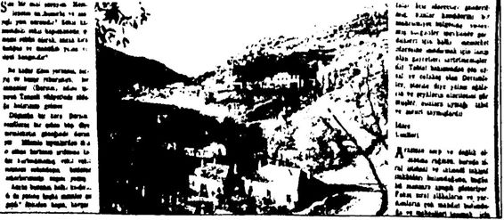
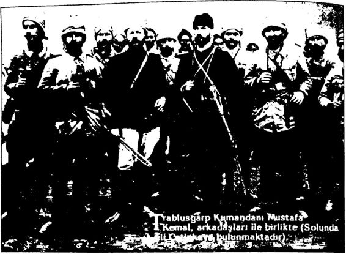
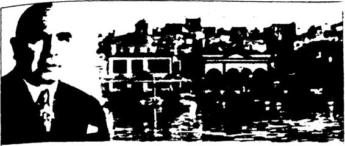
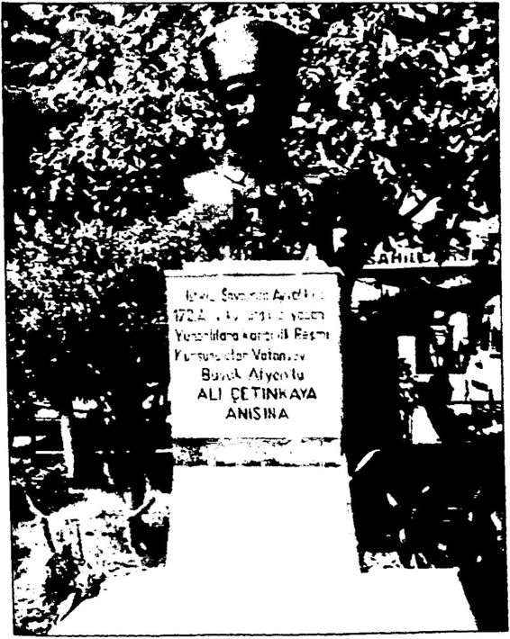

“Buna caiz değil diyenler vardır.
“Buna caiz değil diyenler vardır.Komutanlığın verdiği rapora göre bu çatışmalarda 200 kadar asi Kürt imha edilirken, 6 asker şehit edilmiş, 10 asker de yaralanmıştır.
Bu sırada Erzincan’daki 73. Jandarma Bölüğü Doğu Dersim’e sevk edilmiş, Elazığ Valisi Fahri Bey de 200 kişilik bir askeri birlikle Nazimiye’ye gelmiştir.
Neşit Hakkı Uluğ, Tunceli Medeniyete Açılıyor adlı kitabında 1931 yılı Dersim’ini şöyle anlatmıştır:
“1931 sonbaharında Dersim gene azgındı. Dersim'in içindeki ı>e yöresindeki halk yer yer şikâyet ediyordu. Hay dar anlar Kiğı’ya, Yu karı Abbaslılar ve yine Seyit Rıza’nın himaye ettiği Koçgirililer, Ke maliye, Refahiye, Zara ve Sivas’a kadar soygunculuk yapıyorlardı. İki yıl içinde Dersim’de yapılan suçların takibi için çıkarılan mahkemeye çağırma, tutuklama ve yakalama müzakerlerinin ve özel müzakerlerin toplamı 4680’i bulmuştu.
Dersim’i çevreleyen kazaların 150.000 nüfttsluk halkı, Dersimli lerin art arda ve sürekli, taaaruz ve tecavüzlerinden bıkmıştı. Dersim’e vahit yörelerin kazanç ve bayatları Dersimlilerin ayakları altında çiğ neniyordu. Toplu ve büyük çetelerin köy basması, sürü götürmesi, mu kavemet edenleri öldürmesi, son ayların adi vakaları arasına geçmişti. Dersinle yakın yerlerdeki halk, malından, canından emin değildi, bu balkın manevi cesaret ve mukavemeti de kırılmıştı.
Dersim'in içi daha acıklı idi. Çemişgezek, Pertek, Mazgirt ve Ho zat kazalarında aşiret bayatından ayrılmış çiftçilerin de ağaların eline düştüğü görülüyordu. Devlete asker ve vergi veren bu halk canını ve malını korumak için kendilerine musallat olan aşiretlere de haraç ver mek mecburiyetindeydiler; soyuluyorlar, öldürülüyorlardı.
Aşiretler arasındaki düşmanlık da pek canlı bir halde idi. Bu düş manlık, tarih boyunca birbirlerini soymalarından başka, eski idarelerin aşiretleri birbirine kırdırmakla Dersim’e hâkim olunabileceğini zanne den sakat hareketlerden de hatıralar ve izler taşıyordu. ”
1932 yılında Genel Müfettiş Dr. İbrahim Tali (Öngören) görevden alınmış yerine Sivas Valisi Vehbi Bey atanmıştır.
Bu sırada Genel Kurmay Başkam Fevzi (Çakmak) Paşa, Başbakan lığa sunduğu yeni bir raporda, Dersim’in devamlı sorun çıkarttığını, Dersim halkının cahil olduğunu, bölgede coğrafi koşulların çok kötü olduğunu, yolların yetersiz olduğunu, Dersimlilerin geçim sıkıntısı çek tiklerini, arazinin tarıma uygun olmadığını, toprakların belli aşiretlerin elinde olduğunu, insanların yaşadığı evlerin çok yetersiz olduğunu be lirterek, alınması gereken önlemleri şöyle sıralamıştır:
Fevzi Paşa’mn raporunda, “Dersim’den öncelikle çıkartılması ge reken reisleri” sıralarken, ilk sırada “Seyit Rıza, oğulları ve kardeş ço cuklarına” yer vermiş olması çok dikkat çekicidir.
Atatürk ve Tunceli’de Islahat Atatürk, 1935 yılında Meclis’i açış konuşmasında Tunceli’de ya pılacak “ıslahat programını” şöyle açıklamıştır:
“ Yeniden iki genel ispektörlük ve yeniden bazı vilayetlerin kurul ması da lüzumlu görülmektedir. Bu arada Dersim bölgesinde esaslı bir ıslahat programının tatbiki de düşünülmüştür.
Milletimizin layık olduğu yüksek medeniyet ve refah seviyesine varmasını alıkoyabilecek hiçbir engel düşünmeye yer bırakılmadığını ve bırakılmayacağını huzurunuzda söylemekle bahtiyarım (bravo ses leri, alkışlar).
Tunceli’deki icraatımız neticeleri, bu hakikatin yakın ifadesidir. İleri hükümetçiliğin şiarı, halkı kudretine olduğu kadar şefkatine de samimiyetle inandırabilmesidir. Büyük, küçük bütün Cumhuriyet memurlarında bu zihniyetin en geniş ölçüde inkişafına önem vermek çok yerinde olur. ”
“Uzun yıllardan beri devam eden ve zaman zaman had bir şe kil alan Tunçeli’deki toplu şekavet (eşkıyalık) hadiseleri, muayyen bir program dahilindeki çalışmaların neticesi olarak kısa bir zamanda ber taraf edilmiş, o mıntıkada bu gibi vakalar bir daha tekerrür etmemek üzere tarihe devrolunmuştur (bravo sesleri).
Cumhuriyetin feyzinden yurdun diğer evlatları gibi oradakiler de tamamıyla istifade edeceklerdir. ”
Atatürk, Tunceli’deki eşkıyalığın, “Milletimizin layık olduğu yük sek medeniyet ve refah seviyesine varmasını” engellemesine izin veril meyeceğini, bunun için de Tunceli’de bir “ıslahat programı” uygulana cağını 1935 yılında açıklamıştır.
Atatürk’ün “Tunceli ıslahat programını” açıklarken söylediği, “İleri hükümetçiliğin şiarı, halkı kudretine olduğu kadar şefkatine de samimiyetle inandırabilmesidir. Büyük, küçük bütün Cumhuriyet me murlarında bu zihniyetin en geniş ölçüde inkişafına önem vermek çok yerinde olur,” sözleri, “Atatürk Dersim’de soykırım yapmak istiyor dur’ diyen Cumhuriyet tarihi yalancılarını utandıracak niteliktedir. Hükümetin halka “şevkat göstermesini” isteyen Atatürk, Cum huriyer memurlarının bu “zihniyete” sahip olmalarının önemine işaret ermiştir.
Tunceli'deki “eşkıyalığı” bitirmek için belirli bir program çerçeve sinde çalışıldığını belirten Atatürk, “Cumhuriyet'in feyzinden yurdun diğer evlatları gibi oradakiler de tamamıyla istifade edeceklerdir,” di yerek, Cumhurivet’in Tunceli halkına sahip çıkacağını ifade etmiştir.
1935 yılında İsmet İnönü, Doğu gezisini tamamlayıp dönünce, ha zırladığı rapor doğrultusunda çalışmalar başlatılmıştır.
Dönemin iki önemli generali Kâzım Orbay ve Abdullah Alpdo ğan, Tunceli’yi baştan başa gezerek, “Dersim’in medeniyete açılması için” gereken önlemler konusuna raporlar hazırlamışlardır. İki komu tan, I. Umum Müfettişle görüşmüş, halkı dinlemiş, kasabaları, aşiret leri, köyleri, yolları, köprüleri incelemiş ve görüşlerini Başbakan İsmet İnönü’ye sunmuşlardır.
Doğu raporları doğrultusunda hükümet Tunceli’de öncelikle yol ları, köprüleri ve kışlaları yaptırmıştır.
Bu kanun doğrultusunda Tunceli iline, Genel Müfettişlik yetki leriyle donatılan korgeneral rütbesinde bir vali atanmıştır. Bu gö reve atananlara 4. Umum (Genel) Müfettişi adı verilmiştir. Kanuna göre subaylar kaymakam ve nahiye müdürü olarak atanabilecektir. 4. Umum Müfettiş ildeki bazı kişileri bir yerden başka bir yere naklet meye yetkilidir. Yargılama süreleri de kısaltılmıştır. Umum müfettişe yargılama konusunda da bazı yetkiler tanınmıştır. Bu kanun 4 Ocak 1936’da yürürlüğe girmiştir.
Başbakan İsmet İnönü, Meclis’te “Tunceli Yasası”nın gerekçesini:
O önlemler şunlardır:
İngiliz Büyükelçiliği’nin 1936 Türkiye Yıllık Raporu’nda hükü metin ve Abdullah Alpdoğan Paşa’nın Tunceli’deki faaliyetleri şöyle anlatılmıştır:
“İçişleri: 1935 yıllık raporunda değinildiği gibi Dersim, Tunceli vi layeti olarak yeniden organize edildi. Merkezi Elazığ'da olan Genel Müfettişliğin başına atanan Genel Müfettiş ve Genel Vali General Abdullah Alpdoğan, yılın ilk aylarında göreve başladı ve bu bölgeyi kalkındırmaya koyuldu. Bölgeyi yatıştırarak ve eğitimi yaygınlaştırarak kalkındırmayı amaçlıyor. Fakat Dersim, soygun ve yağma içgüdülerine sahip ilkel Kürt aşiretlerinin yaşadığı bölge olarak eski bir üne sahiptir ve Dersim Kürtle ri 1936 yılında da yol kesmişler, soygunlar yapmışlardır. Majestelerinin Trabzon Konsolosu yıl içinde Dersim Kürtlerinin Erzurum yöresinde birçok yol kestiklerini ve birçok soygun yaptıklarım rapor etti. Bunlar da Dersimli Kürt eşkıyaların eski hayatlarından pek vazgeçmediklerini göstermektedir. (...) Eğitim Türk hükümetinin programında çok önemli bir yer tutuyor. 1936’da 13.834 ilkokulda 680.000 çocuk okuyordu. Sayıları 13S’e ulaşan Halkevleri de eğitime katılıyor.”
O günlerde 11 yaşında olan Mehmet Kangutan, Abdullah Alpdo ğan Paşa’nm Tunceli’de yaptıklarını şöyle gözlemlemiştir:
“Abdullah (Alpdoğan) Paşa buraya geldiği zaman hem adli hem idari bütün yetkilere sahipti. İstese adam öldürebilirdi... Bütün aşiret reislerine emir çıkardı. Dedem Karabali aşiretinin reisi olduğu için ona da emir çıkardt: Herkes aşiretin silahlarım göndersin, fes yasak... De dem belki yiizyüz elli tüfeği katırlara odun yükler gibi yükledi, gön derdi. Herkes şapka giydi. Tüccarlarda şapka kalmadı. Ve adam yol yapmaya başladı. Atatürk’ün hastalığı zamanındaymış... Abdullah Paşa üç şey istiyordu: Askere gideceksiniz, verginizi vereceksiniz, birbi rinizin malına göz koymayacaksınız... Abdullah Paşa’nın bu icraatına rağmen tek tük hadiseler oluyordu. ”
İktisat Vekili Celal Bayar, Dersim’e gittiğinde Vali Abdullah Alpdoğan’la da görüşmüş ve bu görüşme sonundaki izlenimlerini ra poruna, “ General Abdullah Alpdoğan” başlığıyla şöyle aktarmıştır:
“Geçen haftaki Doğu seyahatimde Dersim meselesi en kötü dev relerden birini yaşıyordu. Bu defaki seyahatimde Dördüncü Umumi Müfettiş, General Abdullah Alpdoğan’ın izahatını dinledim. Onun, kan dökülmeden bu meselesinin halli ve Dersim halkının diğer vatan daşlardan farklı olmayarak birer vatandaş haline gelebilecekleri hak kındaki ümidi başlı başına bir hadisedir.
Mıntıkasındaki işlerle çok yakından bir alaka ve ciddiyetle uğraşan ve esaslı malumata sahip bulunan Alpdoğan, buna muvaffak olduğu tak dirde, yalnız bundan dolayı vazifesini iyi yapmış sayılır ve takdir olunur Celal Bayar’ın bu açıklamalarından, Dersim aşiretlerinin “isyan ateşini” iyice alevlendirmeye başladıkları bir dönemde bile Abdullah Alpdoğan Paşa’nın, Dersim’e silahlı bir müdahale yapmadan bu soru nu halletmeye çalıştığı anlaşılmaktadır.
Hükümet Tunceli’ye yatırımları arttırmıştır. Nüfusa kaydolmayan ve askerlik yapmayanların cezaları kaldırılmış, askerlik süresi altı aya indirilmiş, vergiler hafifletilmiştir. Tunceli’ye günde 60 kamyon inşaat malzemesi girmiştir. Her yanda inşaatlar başlamıştır. Sağlık merkezleri yapılmış ve 19 okul açılmıştır. Köylülere toprak verilmiştir. Ağaçlar aşılanmıştır. Tarım Bakanlığı köylere ücretsiz tohum ve fidan dağıt mıştır. Tunceli halkı ağaların, şeyhlerin, seyitlerin ellerinden kaymaya başlamıştır.
Dönemin İçişleri Bakanı Faik Öztırak, 7 Temmuz 1939 tarihinde Meclis’te yaptığı konuşmada 19371938 yıllarında Tunceli’de yapılan imar faaliyetlerini şöyle sıralamıştır:
D. Memur ve Subay Evleri:
1. Nazimiye’de 6, Mameki’de 48, Sin’de 8, Ovacık’ta 10, toplam 72 ev yaptırılmıştır.'
Genç Cumhuriyet ilk 15 yılında en büyük yatırımı Doğu’ya yap mıştır. Pülümür subay ve memur evleri için 80.000 TL, okul inşaat ları için 90.000 TL, Elazığ hastanesi için 100.000 TL, karakol inşaat ve tamiratları için 100.000 TL, Bingöl Hükümet Konağı için 50.000 Tl, sulama ve telefon için 70.000 TL harcanmıştır. Halkın eğitim, sağlık, iletişim, güvenlik ihtiyaçları için toplam 260.000 TL harcan mıştır. 23 Temmuz 1938 tarihli bir cetvele göre Tunceli ıslahatı için toplam 7.052.170 TL harcanmıştır. 2.959.805 TL harekât masrafları na, 4.092.365 TL de imar ve bayındırlık çalışmalarına harcanmıştır.Doğu’da en çok yatırım yapılan illerden biri Tunceli’dir. Tunceli yol larıyla, binalarıyla, köprüleriyle, sağlık kurumlarıyla, okullarıyla, bağ larıyla, bahçeleriyle, tarlalarıyla Doğu’nun parlayan yıldızı yapılmak istenmiştir. En çok okul Tunceli’ye yapılacak, Tunceli okuryazar oranı en yüksek il olacaktır. Elazığ’da yatılı bir kız okulu açılacak, ailelerinin izin verdiği kızlar bu okulda okuyarak meslek sahibi, kendine, çevresi ne ve milletine faydalı çağdaş bireyler olarak yetişeceklerdi. İşte ağalar, beyler, şıhlar, şeyhler ve seyitler bu güzelliklerden, bu medeniyetten korkmuştur.
Atatürk’ün Hayal Ettiği Doğu Atatürk, 1937’de Tunceli’ye yaptığı geziden sonra Celal Bayar, Şükrü Kaya, Ali Çetinkaya, Kâzım Orbay ve Abdullah Alpdoğan ile Elazığ İstasyonu’nda bir toplantı yapmıştır. Bu toplantıya ait 17 Kasım 1937 tarihli belgeye göre şu kararlar alınmıştır:
“1. Arazi, su, hava bakımından barınılması güç olan bölgeler hal kının daha iyi şeraiti haiz yerlere nakli teemmül edilmeli ve mali külfet tahmin edilerek tespit edilmelidir.
Girlayik ’te pancar mıntıkası tesis ederek dağlıları ovaya indir mek lazımdır.”* Görüldüğü gibi Atatürk ve arkadaşları Dersimlileri yerlerinden, yurtlarından sürmeyi, köyleri içindekilerle birlikte yakmayı planlama mışlar; sağlıksız, eğitimsiz, yoksul ve aşiret reislerinin baskısı altında yaşayan insanları sağlıklı, eğitimli, zengin ve güvenli bir yaşama ka vuşturmak için proje geliştirmişlerdir. Arazisi kötü olan bölgelerdeki insanların daha iyi şartlara sahip bölgelere gönderilmesi, dağ köylerin deki insanların ovalara indirilmesi gibi önlemler bölge insanını daha iyi yaşam koşullarına kavuşturmak amacı taşımaktadır.
Başbakan Erdoğan’ın 23 Kasım 2011’deki konuşmasında “Der sim’le ilgili bir başka belgeyi de bugün burada açıklıyorum. 23 Aralık 1938. Atatürk’ün vefatından yaklaşık 1 ay sonra. İsmet İnönü cum hurbaşkanı, Celal Bayar başbakan. Bu bir kararname. Şöyle diyor: ‘Tunceli’den garba nakillerine karar verilen cem’an 12.000 kişinin 11.683 kişinin mürettep mahallerine sevk ve iskânları icra edilmiş...”
Her şeyden önce Tunceli ve civarındaki bazı aşiretlerin Batı illeri ne göç ettirilmesi ile ilgili kanunlar Atatürk’ün sağlığında çıkarılmıştır. Örneğin 19 Haziran 1927’de 1097 sayılı “Bazı Şahısların Şark Mıntı kalarından Garp Vilayetlerine Nakline Dair Kanun” çıkarılmıştır. Bu kanuna göre Doğu’da devrimlere karşı çıkan, güvenliği bozan 1500 kişi ile kaçak ve mahkûm durumundaki 80 isyancı aileleriyle birlik te Batı illerine sevk edilmiştir. Kendilerine, terk edecekleri topraklara karşılık yeni topraklar verilmiştir. 1 4 Haziran 1934’te de 2510 sayılı “İskân Kanunu” çıkarılmıştır. Bu kanunlar çerçevesinde Doğu’da hem güvenliği bozan asi aşiretlerden bazıları hem de aşiretlerin baskısına maruz kalan yokluk ve yoksulluk içindeki halkın bir bölümü batıya göç ettirilmiştir. Göç ve iskân planlan ilk başta sadece 2000 kişiyle sınırlıdır. Bu sayı daha sonra 7000’e çıkmıştır. 1939’da bu sayının 12.000’e yaklaştığı anlaşılmaktadır. 28 Temmuz 1938 tarihli bir bel geye göre Doğu illerinden göç ettirilenler Batı’da İzmit, Karabük, Zon guldak gibi sanayi ve maden sektörlerinin yoğun olduğu yerlere ve iyi tarım yapılan Erzincan’a yerleştirilmiştir. Yani hükümet. Doğu halkını hem ağaların zulmünden hem de yokluk ve yoksulluktan kurtarmıştır. İnsanları iş bulup geçimlerini rahatça sağlayabilecekleri yerlere göç et tirip yerleştirmiştir." Hükümet, batıya sevk ettiği ailelere ev, toprak, pulluk ve hayvan vermiştir. 1947 yılında, yani İsmet İnönü’nün “Milli Şefliği" döneminde CHP’nin zorunlu İskân Kanunu’nu kaldırmasıyla 8228 kişi Tunceli’ye geri dönmüştür. 3500 kişi ise Tunceli’ye dönmeyi tercih etmeyerek batıda kalmıştır.
Yani Başbakan Erdoğan’ın “19371938’de Dersim’den şu kadar kişi batıya sevk ve iskân edilmiş/” diyerek rakamlar verip bu “sevk ve iskânı” kötü bir durum gibi aktarması, bu işi yapanları suçlaması hiç de gerçekçi ve doğru bir yaklaşım değildir.
Atatürk, Tunceli gezisinde Hazer Gölü çevresini incelemiş ve bu rasının halkın spor ve eğlence ihtiyaçlarını karşılayacak şekilde düzen lenmesini istemiştir. 4. Genel Müfettişlik bu doğrultuda yapılan ilk çalışmaları, 3 Aralık 1937 tarihli bir yazıyla Başvekâlet’e bildirmiştir:
“Hazer Gölü’nün Atatürk tarafından tetkik buyurulan kıyı kısmı nın tarafı devletlerinden emir buyurulan haritasını tayyare ile aldırdım. Fotoğraflar Ankara’da Harita Dairesi’nde gönderilerek bunun İmar Kanunu hükümlerine göre 1/1.000: 1/3.000 mikyasında iki çeşit ha rita halinde basılmasını ve bu basım işinin çabuklaştırılmasını Harita Genel Direktörlüğünden ricada bulundum. Basılıp gelince haritaların yüksek huzurlarına takdim edileceğini arz ederim.”
Atatürk’ün Tunceli halkının yararlanması için Hazer Gölü’nü bir spor ve eğlence parkına dönüştürmek istemesi bölgeye ve bölge insanına verdiği değerin işaretidir. Atatürk’ün Hazer Gölü Projesi, o dönemde Tunceli’ye yapılan karakol, yol, köprü, telefon gibi yatırım ların sadece askeri amaçlı olduğu iddiasını da çürütmektedir. Belge lerde geçtiği şekliyle bu projenin amacı, “Bölgedeki münevverlerin ve her sınıf halkın yazlık ve spor eğlence ihtiyaçlarını tatmin etmek üzere güzelleştirilmesi” dir.
.
Atatürk'ün Hazer Gölii’niin eğlence ve spor amaçlı olarak düzenlenmesini istemesi üzerine bir imar planı hazırlamak için gerekli hava fotoğrafları çekilip yetkili makamlara sunulmuştur. 4. Umum Müfettişlik, yapılan hu çalışmaları Temmuz 193S tarihli bir raporla Başbakanlığa sunmuştur.
Doğu’nun her bakımdan kalkınmasını amaçlayan Güneydoğu Anadolu Projesi de Atatürk’e ait bir projedir. Projenin ilk adımları 1930'ların sonlarında atılmıştır.
Atatürk, Diyarbakır, Malatya, Elazığ ve Tunceli gezisinde yanın daki Sabiha Gökçen’e, nasıl bir Doğu hayal ettiğini şöyle ifade etmiştir:
“İnsan öturii yapılacak işlerin azameti karşısında çok cüce kalıyor Gökçen... Geçtiğimiz yerlerde fabrikaları görmek istiyorum, ekilmiş tarlalar, düzgün yollar, elektrikle donanmış köyler, küçük, fakat canlı, tertemiz, sağlıklı insanların yaşayabileceği evler, büyük yemyeşil or manlar görmek istiyorum.
Gürbüz çocuklartn, iyi giyimli çocukların yüzleri sararmamak, dalakları şiş olmayan çocukların okuduğu okullar görmek istiyorum.
İstanbul'da ne medeniyet varsa, Ankara'ya da ne medeniyet ge tirmeye çalışıyorsak, İzmir’i nasıl mamur kılıyorsak, yurdumuzun her tarafını aynı medeniyete kavuşturalım istiyorum. Ve bunu çok ama çok yapmak istiyorum.
Dedim ya, insan ömrü çok büyük işleri başarabilecek kadar uzun değil. Mamur olmalı, Türkiye’nin her bir tarafı müreffeh olmalı...
Devletin yapamadığını, millet; milletin yapamadığını devlet yap mak. Her şeyi yalnız devletten ya da her şeyi yalnız milletten beklemek doğru olmaz. Devlet ve millet ülke sorunlarını göğüslemede daima el ele olmalıdır.
Ben yapabildiğim kadarım yapayım, sonra ne olursa olsun, benim kitabımda yok. Geleceği, geleceğin Tiirkiyesi’ni düşünmek görevim. Bir iş aldık üzerimize, bir savaşın üstesinden geldik, şimdi ekonomik alanda savaş veriyoruz, daha da vereceğiz... Bu heyecanı yaşatmak, bu heyecanın ürünlerini görmek lazım.”
Doğu ve Güneydoğu Anadolu’da fabrikalar, ekili tarlalar, düzgün yollar, elektrikli köyler, tertemiz, canlı ve sağlıklı insanların yaşaya cağı evler, gürbüz çocuklar ve büyük yemyeşil ormanlar görmek iste yen Atatürk’ün en büyük amaçlarından biri doğusuyla batısıyla bütün Türkiye’nin kalkınmasıdır.
“Türkiye Cumhuriyeti’ni kuran Türkiye halkına Türk milleti de nir,” diyen Atatürk, Misakı Milli sınırları içinde yaşayan tüm Türkiye halkını her bakımdan kalkındırmak için hiçbir ayrım yapmadan vata nın her bölgesine çok önemli yatırımlar yapmıştır.
Atatürk’ün genç Cumhuriyeti’nin Türkiye’nin diğer bölgeleri gibi Doğu ve Güneydoğu Anadolu bölgelerini kalkındırmak için yaptığı yatırımlar, asırlardır bölge halkını sömüren feodal unsurların; ağala rın, şeyhlerin ve şıhların tepkisini çekmiştir. Genç Cumhuriyet’in bu yatırımları devam ederse bölge halkı üzerindeki nüfuzlarını tamamen kaybedeceklerini düşünen bu feodal unsurlar, Türkiye’yi bölüp parça lamak isteyen ayrılıkçı unsurlarla anlaşarak, genç Cumhuriyet’e baş kaldırmalardır. Genç Cumhuriyet’in “çağdaşlaşmaya” yönelik dev rimlerini, “dinsizlik” olarak adlandırıp, bu yönde propaganda yapan feodal unsurlar, bölgede yapılan yolları, köprüleri, santralleri tahrip ederek karakollara saldırmışlardır. İşte, 19371938 Dersim İsyanı böy le bir ortamda patlak vermiştir.
Martı’nın ortalarına doğru Suriye’den Dersim bölgesine giren bazı Ermenilerin ve Koçgırili Alişer’in etrafta yaptığı olumsuz propaganda halk üzerinde büyük etki yaratmıştır. Bu propagandayı şöyle özetlemek mümkündür:
Türk hükümeti istese de Dersim’e giremez, buna yetecek gücü yoktur, nitekim geçmişte de girememiştir!
Yukarı Abbas Uşağı Aşireti Reisi Seyit Rıza; Haydaran, Demenan, Yusufan, Kureyşan, Abbas Uşağı ve Bahtiyar aşiretlerine adamlar gön dererek bunların hükümet aleyhine “ittifak” kurmasını sağlamıştır.
Devlet raporlarına göre Dersim İsyanfna 91 aşiretin sadece 6’sı katılmıştır.
Bu sırada Dersim aşiretlerinden Yusufhan aşiret reisi Kamer Ağa’nm oğlu, Yüzbaşı İsmail Hakkı Bey’i öldürmüştür.
21 Mart 1937’de (Nevruz gecesi) Demenan ve Haydaran aşi retleri TunceliErzincan arasında Harçak Deresi üzerindeki Kahmut Köprüsü’nü yıkıp Puh nahiyesini basmıştır. Bu saldırıda köprüyü ko rumakla görevli karakol yıkılmış ve 33 jandarma eri şehit edilmiştir.
27 Mart 1937’de Abasanlar, Deşt (Geyiksuyu) Karakolu’nu bas mıştır.
27 Mart 1937’de KahmutPuh arasındaki telefon hattı kesilmiştir. 27 Mart 1937’de Kahmut Karakolu’nu takviye için gönderilen jandarmaya pusu kurulmuştur.
12 Mayıs 1937 gecesi Mazgirt’in kuzeydoğusundaki Beşiktepe’de bulunan 9. Seyyar Jandarma Taburu’na, 2. Jandarma Süvari Birliği’ne, Mazgirt Sabit Jandarma Bölüğü’ne aynı anda baskın yapılmıştır. Ayrı ca Mazgirt Köprüsü tahrip edilmiştir.
Özetle: 1937 yılında, 21 Mart'ı 22 Mart’a bağlayan ‘Nevruz’ gece si, aşiret reisi Seyit Rıza, önderliğini benimseyen kimi aşiretlerle birlikte, kurulan karakolları basarak, 33 askerimizi şehit ederek, yapılan köp rüleri yıkarak, Cumhuriyet’in yerleştirmeyi amaçladığı insan ve yurttaş haklarını, özgür birey yurttaşlık düzenini Dersim’e sokmamak ve aşiret düzenini eskisi gibi sürdürmek üzere ayaklanmayı başlatmıştı. Tunceli Erzincan yolundaki köprü yakılmış, bölgenin telefon hatları kesilmiş, Jandarma birliklerine pusu kurulmuş, Puh bucağı karakoluna baskın düzenlenmiş, Sin Karakolu basılmış, Mazgirt Köprüsü yıkılmıştı.”Bu gelişmeler üzerine 3 Mayıs 1937’de Türk hava kuvvetlerine bağlı bir uçak filosuyla Dersim’e yönelik askeri harekât başlamıştır.
Bakanlar Kurulu Kararı İsyanın büyümesi üzerine 4 Mayıs 1937’de Ankara’da Cumhur başkanı Atatürk’ün ve Genelkurmay Başkanı Mareşal Fevzi Çakmak’m da katıldıkları bir hükümet toplantısı yapılmıştır.
Bu toplantı sonunda “ Gayet Gizlidir” başlıklı şu Bakanlar Kurulu kararı alınmıştır.
"Son günlerde Tunceli’de vukua gelen hadiselere dair raporlar 4 Mayıs 1937 tarihinde Atatürk’ün ve Mareşal’in huzurlarında incelene rek ve görüşülerek aşağıdaki sonuca varılmıştır:
Değerlendirme: Sadece taarruz harekâtıyla ilerlemekle yetinildik çe isyan ocakları daimi olarak yerinde bırakılmış olur. Bunun içindir ki, silah kullanmış olanları ve kullananları, yerinde ve sonuna kadar zarar veremeyecek hale getirmek, köyleri bütünüyle tahrip etmek ve aileleri uzaklaştırmak lüzumlu görülmüştür. ”
Mayıs 1937’de, Türkiye Cumhuriyeti Genelkurmay Başkanlığı, Atatürk’ün başkanlığında yaptığı toplantıda alman yukarıdaki karar ları içeren “uyan” bildirileri hazırlamıştır. Bu bildiriler, 4. Genel Mü fettişlik tarafından yeni Türkçe ve Osmanlıca harflerle yerel dile göre (kırmançaZazaca) çoğaltılarak uçakla bölgeye atılmıştır. Bildirilerde, “İsyancıların bir an önce teslim edilmeleri, aksi halde isyancılara yar dım edenlerin de zarar görecekleribelirtilmiştir.
Bu uyarı bildirilerinden de bir sonuç alınamayınca “tenkil” (bas tırma) ve “tedip” (uslandırma) harekâtına başlanmıştır.
Harekât hazırlıklarının yapıldığı o günlerde İsmet İnönü, 14 Ha ziran 1937’de Meclis’te yaptığı bir konuşmada Dersim Harekâtı konu sunda ilk önemli açıklamaları yapmıştır.
Hükümetin iki seneden beri Tunceli’de bir ıslahat programı uygu ladığını, programın amacının bölgeyi uygarlaştırmak olduğunu, ancak bu programı orada kanunlara uymayan bazı aşiretlerin hoş karşıla mayarak muhalefet ve direniş gösterdiklerini, bu nedenle 1937 Nisan başlarında “bazı özel tedbirler” almak zorunda kaldıklarını ve ıslahat programına muhalefet eden aşiretlerin direnişini kırdıktan sonra ısla hat programını hayata geçirmeye kararlı olduklarını belirtmiştir. İnö nü sözlerini şöyle sürdürmüştür:
“Bugünkü vaziyet şudur: Orada jandarma ve hükümet kuvvet leri tamamıyla duruma hâkimdirler. Tunceli’de yenileştirme progra mı aralıksız devam edecektir. Yol yapıyoruz, okul yapıyoruz, karakol yapıyoruz. O bölgede bazı kayıpların olduğu haberleri fısıltı halinde dolaşıyor. O bölgede meydana gelen kayıpları olduğu gibi sizlere ak tarıyorum:
Üç ay içinde toplam 13 şehit, 18 yaralımız olmuştur. Şehitleri mizden biri teğmendir. Tekrar ediyorum, yeterli askerimiz orada mevcuttur. Islahat programı takip olunmaktadır. Cumhuriyet hükü meti oraya ıslahat programını siis olarak götürmedi. Ne denli uzarsa uzasın biz bu programı orada yürüteceğiz. Çıkan ufak tefek güçlükler bizi yıldıramaz. Büyük Millet Meclisi’nin kararını yürütmekten geri durmayacağız Başbakan İsmet İnönü, Meclis’teki bu konuşmasından hemen son ra Tunceli’ye hareket etmiştir.
İnönü, 18 Haziran 1937 tarihinde, Recep Saydam, Kâzım Özalp ve Jandarma Genel Komutanı Naci Tınaz’ı yanına alarak Elazığ’a git miştir. 21 Haziran 1937 tarihinde Savunma Bakanı Refik Saydam, 3. Ordu Müfettişi Orgeneral Kâzım Orbay, 4. Ordu Müfettişi Korge neral Abdullah Alpdoğan ve 7. Kolordu Komutanı Korgeneral Galip Deniz’le birlikte durum değerlendirmesi yaparak 22 Haziran’da yapı lacak genel taarruz planını görüşmüştür.
Harekâta girişen 8623 kişilik Türk ordusu Haziran I937’de is yancıları saklandıkları yerlerde sıkıştırmıştır.
İsyanı destekleyen Baytar Nuri Dersimi’nin ifadesine göre Türk ordusuyla isyancılar arasında bir harp (savaş) yaşanmıştır.
İsyanın liderlerinden Demenanlı Cebrail, Seyit Rıza’nın teslim ol masını istemişse de Seyit Rıza bu isteği kabul etmeyerek isyanın ele başlarıyla Munzur Suyu kenarında Halvori’de bir toplantı yapmıştır. Toplantıda Seyit Rıza’nın isteği ile isyana devam kararı alınmıştır.
İsyancılardan Koçgirili Alişer ile Bahtiyar aşiret reisi Şahin ile am cası Alişan öldürülmüştür. Bu arada Alişer ile Şahin Türk ordusunca değil, yine Dersim aşiretlerince öldürülmüştür.
İsyanın lideri Seyit Rıza, 10 Eylül’de Erzincan’da yakalanmıştır.
21 Mart 1937’de başlayan isyan, 10 Eylül 1937’de sona ermiştir. Elazığ’da kurulan mahkemede 58 isyancı yargılanmış, 11 kişi idam ce zasına, 33 kişi de ağır hapis cezasına çarptırılmıştır. Yargılamalardan sonra 14 kişi berat etmiş, Seyit Rıza’yla birlikte 7 kişi idam edilmiştir.
II. Dersim İsyanı ve Harekâtı (1938)
1937 Dersim Harekâtı’na rağmen “ıslah olmayan” Kürt aşiretleri, 2 Ocak 1938’de bir kere daha ayaklanmışlardır.
Tunceli bölgesinde asker kaçaklarını toplamakla görevli sabit jandarma müfrezelerinden 7 jandarma eri, Kör Abbas, Keçeci ve Bal uşağı aşi retlerine mensup isyancılarca pusuya düşürülerek öldürülmüştür. Ayrıca isyancılar, Mercan Karakolu’nu basarak 2 eri daha şehit etmişlerdir.
4 Ocak’ta başlayan katilleri arama çalışmaları sonuç vermemiş tir. Kış şartlarından dolayı ve gerekli hazırlıkların yapılabilmesi için II. Tunceli Harekâtı 12 Haziran 1938’e kadar ertelenmiştir.
Kapsamlı bir harekât planı hazırlayan Genelkurmay Başkanlığı, Tunceli ve civarına, Orgeneral Kâzım Orbay komutasındaki üç kolor dunun katıldığı bir operasyon daha düzenlemiştir.
Haziran sonuna kadar karşılıklı kayıplar şöyledir:
Türk ordusu: 33 şehit, 60 yaralı İsyancılar: 163 ölü ve yaralı Yakılan köy: 60
Daha önce de açıkladığımız gibi bu köyler boşaltıldıktan sonra ya kılmıştır. Amaç isyancıların bir daha buralara dönüp yuvalanmalarını engellemektir.
16 Eylül 1938’de arama, tarama ve silahtan arındırma çalışmala rıyla II. Dersim Harekâtı tamamlanmıştır.
Seyit Rıza Masalı ve Gerçekler Başbakan R. Tayyip Erdoğan, 23 Kasım 2011’deki konuşmasın da, "... Dersim Operasyonları sonucunda tutuklanan ve asılan Seyit Rıza’nın, 1915 olayları sırasında, işgalci ordulara karşı savaştığından, dönemin valisi tarafından da, ‘Din ve namusuyla bize hizmet etti,’ diyerek şereflendirdiğinden kimse bahsetmiyor...” diyerek Dersim İsyam’mn elebaşı Seyit Rıza’nın isyankâr olmadığını, hatta tam aksine “din ve namusuyla devlete hizmet eden biri” olduğunu iddia etmiştir.
Peki, ama 1937’de idam edilen Seyit Rıza gerçekten de “suçsuz yere”, boşu boşuna mı idam edilmiştir? Seyit Rıza gerçekten de “din ve namusuyla devlete hizmet etmiş” bir aşiret reisi midir?
Dünya Savaşı’nda Seyit Rıza Seyit Rıza’nın 1. Dünya Savaşı’nda yararlılık gösterdiğini, vatanı savunduğunu iddia eden sadece Başbakan R. Tayyip Erdoğan değildir. Hüseyin Avgün de, Dersim 1938 ve Zorunlu İskân adlı kitabında Seyit Rıza’dan şöyle söz etmiştir: “Ruslara karşı savaşta ödül aldı. 1937'de vatana ihanet iddiasıyla adil olmayan bir şekilde yargılanıp idam edildi ”
Ancak Seyit Rıza’nın akıl hocalarından Nuri Dersimi, Başbakan Erdoğan ve Hüseyin Aygün’ün iddialarım yıllar önce yalanlamıştır. Şöyle ki, Nuri Dersimi Kiirdistan Tarihinde Dersim adlı kitabında Enver Paşa’nın I. Dünya Savaşı başlarında Dersim aşiretlerini Ruslara karşı savaşmak için çağırdığını ancak aşiretlerin bu çağrıya olumlu ce vap vermediklerini belirtmiştir. Ayrıca Koçgiri ve Dersim isyanlarının elebaşı Alişer’in I. Dünya Savaşı’nda Ruslara yardım ettiğini yazmış tır. Nuri Dersimi, I. Dünya Savaşı’nı Rusya’nın kazanacağını düşünen Dersim aşiretlerinin Osmanlı tarafında çarpışmak istemediklerini de eklemiştir.
OsmanlI’nın Ruslara yenilmesi ve Erzurum’un düşmesi, bazı Dersim aşiretlerini sevindirmiştir. Nuri Dersimi’nin ifadeleriyle: “Erzurum’un düşmesi, Rus saldırılarının devamı, Osmanlı ordula rının geri çekilmesi ve Cemalettin Efendi’nin geri dönmesi (Kürtleri Osmanlı’nın yanında savaşmaya ikna etmek için gönderilmiş din ada mı), Dersim ve özellikle Doğu Dersim aşiretleri arasında bir telaş ve kaynaşmaya neden olmuştu. Doğu D er sim’in Demenan, Hay dar an, Kureyşan, Karsan, Alan, Şeyhan, Şuran, Yusufhan ve Pilvenk aşiret leri 30 Mart 1916’da on bin kişilik silahlı kuvvetlerle kısmen Mazgirt, Nazimiye ve kısmen de Hozat, Pertek merkezleri üzerine hareketle bu ilçeleri tamamen istila ederek Osmanlı memurlarını ortadan kaldırmış lardır. Elaziz vilayetine doğru yürüyerek Kürdistan davasını emrivaki şeklinde halletmeye çalışmışlar ve bütün o yöreyi hâkimiyetleri altına almışlardı.”
Nuri Dersimi’nin anlattığına göre Rusların Erzincan’ı işgal etme si üzerine bazı Dersim aşiretleri yine Osmanlı ordusuna saldırmıştır. Erzincan düştükten sonra Alişer, Dersim’e gelip Ruslarla bir anlaşma yapmıştır. Bu anlaşma ile Kürdistan’ın bağımsızlığını sağladığını iddia etmiştir. Bu sırada bazı Dersim aşiretleri Osmanlı’ya karşı Ermenilerle anlaşmıştır. Ancak 1917 yılında Rusya’da meydana gelen Bolşevik İh tilali sonrasında Ruslar Doğu Anadolu’da işgal ettikleri şehirleri Erme nilere bırakıp geri çekilmiştir. Ancak Ermeniler, hem Türkleri hem de Kürtleri katletmeye başlamıştır. Bu nedenle çok geçmeden KürtErmeni ittifakı sona ermiştir. Dersim aşiretleri I. Dünya Savaşı’nın sonlarında Rusların boşalttığı bölgeleri Ermenilere bırakmamak için Osmanlı or dusuyla birlikte Ermenilere karşı savaşmaya başlamıştır.
Nuri Dersimi’nin yazdıkları güvenilmezdir. Bu nedenle onun an lattıklarını başka birilerinin anlattıklarıyla veya resmi belgelerle doğ rulamadan kullanmak yanıltıcı sonuçlar verebilir. Bu nedenle başka kaynaklara da göz atalım.
Fevzi Çakmak, 1935 yılında verdiği Dünya Savaşı’nda Doğu Cephesi” adlı konferansında bazı Dersim aşiretlerinin Rusya’yı destek lediğini şöyle ifade etmiştir:
“1916 yılında Ruslar Mamahatun’a ilerledikleri sırada Ermenileri ve firari Mustafa'yı Tunceli’ye göndererek Balabanlı, Kııreyşanlı, Ko çuşağı aşiretlerine silah verip Türklerle mücadele için kışkırtmışlardı. " “Doğu Tunceli’de Nazimiye Kürtler tarafından ele geçirilmiş, Ho zat kuşatılmış, Mazgirt, Pertek ve Çarsancak yağmalanmıştı...”"
“ Yukarı Abbas Uşağı Aşireti Reisi Seyit Rıza Bu adam Ruslar a dehalet etmiş; Rusların büyüklüğüne kanat ge tirmiş ve Osmanlı hükümeti karşıtı bir hınzırdır. Ermeniler ile mu haberesi (haberleşmesi), eşkıyalığı, edepsizliği ve nihayet sahtekârlığı olmakla beraber: Hozat'ı müdafaa ve hükümet lehine hareket etmek gibi hizmetleri de vardır. "
Erzurum ve Erzincan işgal edilirken Ruslarla işbirliği yapan Seyit Rıza, Ruslar çekilip bölge Osmanlı hâkimiyetine girmeye başlayınca kıvrak bir manevrayla Osmanlı tarafına geçmiştir. Nitekim Fevzi Çak mak da yukarıdaki konferansındaI. Dünya Savaşı’nın sonundaki Bolşevik İhtilali’nden sonra bazı Dersim aşiretlerinin yavaş yavaş Rus lardan ayrılıp Türklere yaklaşmaya başladıklarını şöyle ifade etmiş tir: “Rus Ordusunun İhtilali üzerine Ruslardan ümidi tamamen ke sen Kiirtler Türklere yanaştılar ve daha itaatkâr oldular. ” I. Dünya Savaşı’nda çok ağır kayıplar veren Osmanlı Devleti de daha önceki ihanetleri unutarak Seyit Rıza ve Dersim aşiretlerini kendi yanına çek mek için elinden gelen her şeyi yapmıştır. Örneğin Enver Paşa iktidarı, Dersim aşiretlerini iyice devlete bağlamak için Seyit Rıza’ya bir madal ya bile vermiştir.
“Seyit Rıza, Pizvank’ta türbesinde, ama ufak bir kaleyi andıran mazgallı, siperli türbesinde yatan Seyit İbrahim isminde birinin oğlu dur. 65 yaşlarında, uzun boylu, uyumlu, endamlı, kır sakallı, siyah ve gür kaşlı, cazibeli gözlü, büyük ve gagamsı burunlu bir dağlıdır. Başına giydiği külahın üzerine yeşil ve siyah karışık sarık sarar, ayağına şalvar ve sırtına bir palto giyer. Bu dinç görünüşle Dersim’in en tipik adamı dır. Hilekâr, oynak, elastik, politik Seyifin iç hayatı bir sırdır. Esrar içer derler ve fakat sıhhatine çok itina ettiği de bilinir. (...)
Bunun girdiği evin halkı artık cehennemlik değildir. Bir ev onu getirmeye muvaffak olduktan sonra yarın ahrette cennetin en yüksek katında bir köşk temin etmiş demektir. Seyit, nazlıdır. Her eve, her çadıra gitmez. Onun gönlünü yapmak, her türlü fedakârlığın gösteril mesiyle mümkündür. (...)
İşte bu Seyit Rıza’nın dedeleri hiçbir hükümet saygısı bilmeden Sultan Hamit devrine kadar geldiler.
Sultan Hamit devri kolaydı. (...)
1908 senesi ilkbaharında artık Dersim bir istibdat sultam için bile hazmedilemeyecek kadar azmıştı. Dersim hiçbir şey dinlemiyor du. Bugün en akıllı ve uslu görünen Dersim başları, en önde Diyap Ağa olduğu halde ayaklanmışlar, Ovacık havalisinde bulunan kıtaları kuşatmışlardı. Asi Dersimlileri, Seyit Rıza kumanda ediyordu. Gar nizon kumandam neden sonra bir neferi kuşatma hattından kaçıra rak Kemah’a gönderebildi ve oradan Dördüncü Ordu Müşiri, nihayet Abdiilhamit’ten Dersim’i bastırma iradesini alabildi. Hemen dört ta raftan 1718 tabur asker toplandı.
Taburlar önce kuşatmayı kaldırarak Ovacık Garnizonu’nu kur tardılar. Hozatlı asilerin hepsi Munzur Suyu tarafına atıldı, bir kısmı dağa sığındı.
Tam o sırada Meşrutiyet ilan edildi. Ağalar şaşırdılar, memurlar şaşaladılar. Eşkıya mukavemetten vazgeçti, takip durdu. (...)
Asker garnizonlarına dönünce Dersim yine eski Dersim oldu. Ha reket neticesiz kaldı. Yapılan fedakârlıklar boşa gitti. Seyit Rıza bu hareketin de kahramanı idi.
Bu Seyit’in kendisini saydırmak için politikası bakın nedir: O öyle bir valinin, her kumandanın ayağına kolay kolay gitmez. Bir muta sarrıf, bir vali geldi mi diğer aşiret ağaları sürülerle öniine akarken Seyit’ten haber çıkmaz, bu Dersim’e yayılır. Seyit Rıza, yeni bir vesile den istifade etmiştir. Vali bunu bir izzetinefis meselesi yaparsa, derhal üzerine yürümesi, onu vurması icap eder.
Fakat Seyit’e bu ehemmiyeti neden vermeli? O gelmezse ne olur? O da kim oluyor? Bir Dersim eşkıyasından ne farkı var?
Fakat bunun muhitte yapacağı tesir başka görünür: ‘Seyit Rıza valiyi hiçe saydı, gelmedi,’ denir. Dersim’i yine namı tutar diye kor kulur. (...)
Bana Seyit Rıza’nın 1912’de de bir bastırmaya uğradığını söyledi ler ve hadiseyi şöyle naklettiler:
Dersim’i bilen, Dersim’in acılarını çocukluğundan beri duyan Ko ma hlı Sağıroğullarından Sabit Bey, buraya ittihatçıların mutasarrıfı olarak gönderilir. Sabit Bey, eski hesapları bir tarafa bırakarak bundan sonra ciddi bir disiplin tesisi yolunda didinirken, bir gün Tercan'da iki katırın Seyit Rıza’nın yardakçıları tarafından çalındığı şikâyeti gelir.
Mutasarrıf Dersim'de ufak bir tecavüzü, hırsızlığı derhal tepele yerek bir dahasma imkân vermemeyi kafasına koymuştur. Büyük bir bastırma müfrezesi hazırlatır. 400 jandarma toplanır. Hozat’lı Hızır Çavuş'un emrine verilir. Hızır Çavuş, bayatını Dersim dağlarında za bıta memurluğunda geçirmiş. Dersim ’i deresiyle, tepesiyle en iyi bilen jandarmadır.
Dört yiiz jandarma ve bir o kadar milis aşiret efradı, Seyit Rıza’nın üzerine gönderilir. Çarpışma oldukça şiddetli olur. Dört milis bu taraf tan, sekiz asi öbür taraftan ölür. Seyit Rıza, Kutuderesi’ne, D ersim'in bu ebedi eşkıyalık ocağına kaçar. Bastırma kuvvetleri bütün yukarı Abbas Uşağı'nı tepeledikten sonra döner. (...)
Seyit Rıza, menfaati için her şeyi yapabilecek bir karakterdedir.
Meşrutiyetten evvel Ermeni komiteleriyle birlikte çalışmış, Taş naksiityan Konıitesi'ne yazılarak onların gayelerine and içmiş derlerdi.
Üstelik Milli Miicadele’nin başlarında Zara ve Ümraniye havali sinde karışıklıklar çıkaran aşiret reislerinden Alişan Bey'in kâtibi, akıl hocası olan Alişer ve Koçgiri aşiretinden elini kana bulayan birçok ka tiller senelerden beri Seyit Rıza'ya sığınmıştı.
Alişer’i tesadüf mü yoksa bir tertip mi Seyit Rıza'ya kâtip yapmış tı, o da meçhuldü...
1925 Şubatı’nda Şeyh Said isyan ettiği vakit Dersim ağaları Cumhuriyete bağlılıklarını teyide geldiğinde Seyit Rıza bunların ara sında yoktu. Hakikaten o yerinden kımıldamadı, ama kendisinin iti mada değer bir adam olmadığını ispat etti...
1925 Mayısı’nda Dersim'in merkezine kadar teftiş için giden ordu müfettişi, bu Dersindi Ağa'yı Hozat'ta ‘el öpmeye gelenler” arasında görmemişti. Seyit Rıza’nın adı Cumhuriyete bağlı ağalar arasında ko caman bir soru işareti gibi dolanıyordu.
Ben Seyit Rıza'yı görmedim, fakat Dersim'in kasabalısından, bir Sivaslıdan, bir Eğinliden farkı olmayan kasabalısından Seyit Rıza’yı şöyle dinledim: (...) Bir gün Seyit Rıza'mn yanında idim. Civardan bir köylü ve karısı ağlayarak geldi ve Seyit'in iğrenç ayağına kapandı:
‘Ne olur, hayvanımı size getirmişler, verin,’ diye yalvardı. (...)
Seyit sakalını sıvadı ve bana döndü.
‘Görüyor musun, malı giden ne tuhaf oluyor,’ diye gülmeye baş ladı. Seyit gülüyor, etrafında diz çöken dört beş yardakçısı bu sözü kahkahalarıyla teyit ediyorlardı.
Oğlu yanıma sokuldu:
‘Ne yapalım, biz de böyle vergi alır, fukara sayesinde geçiniriz,’d edi.
Sonra öğrendim. Seyit Rıza’nın biçare köylüyü, işine bakacak diye gönderdiği adam her zamanki tarifeyi tatbik etmiş, 300 mecidiye alma dıkça hayvanını vermemiş.
Aslen neslen Türk olduğuna şüphem olmasa da, böyle adamlara nasıl Türk diyeyim? (...)
Neşit Hakkı Uluğ’un araştırmalarına göre Seyit Rıza’nın belli baş lı özellikleri ve faaliyetleri şunlardır:
Osmanlı döneminde Dersim bölgesinde silahlı birlikler oluştu rup çevredeki karakollara ve garnizonlara saldıran aşiretler yağma ve çapul eylemleriyle halkı canından bezdirmiştir. İşte Seyit Rıza da bu yağmacı çete reislerindendir. Seyit Rıza bu eylemleri yüzünden daha Osmanlı Devleti zamanında idama mahkûm edilmiştir. İşte belgesi: “(28/Z /1330 (Hicr”) (08.12.1912) Pazartesi: “Dersım'in Yukarı Ab basi (Abbas Uşağı) Aşireti Reisi olıtb gıyaben idam cezasına mahkum olan Seyid Rtza’nm hukukt şahsiye davası haki olmak üzere afin.” (Başbakanlık Osmanlı Arşivi; Dosya No : 156, Gömlek No : 1330/Z 04, Fon kodu : İ,.MMS)”
İçişleri Bakanı Şükrü Kaya, Başvekâlete gönderdiği 29 Mayıs 1933 tarihli raporunda Seyit Rıza’mn Kırganlılar tarafından öldürülen oğlunun intikamını almak için Hozat kaymakamından cephane talep ettiğini, eğer verilmezse çalacağını ve cephanenin kendisine helal olaca ğını belirtmiştir. Aynı belgenin devamında Vali Tevfik Bey’in raporun da, Seyit Rızamın Bahtiyar aşireti reislerine yazdığı mektupta kendisine katılmalarını aksi halde onları idamla tehdit ettiği görülmektedir. Vali Tevfik Bey, Seyit Rıza’mn Dersim üzerindeki etkisinden şöyle söz et miştir: “ Vaziyet şudur: Bütün manası ile hükümeti tanımayan Seyit Rıza Bahtiyarlılardan mada garbi Dersim’in bütün aşiretlerini nüfuzu altına almış ve onların musellah muavenetlerini (yardımlarını) temin etmiş ve Ktrganların reisi Selman ağayı amanına düşürmüş ve epeyce düşmanlarını tepelemiş ve bu suretle Dersim’de teferrüt etmiştir.”Cengiz Özakıncı’nın Türkiye Köy İktisadiyatı adlı dergiden ak tardığına göre “Dersim’de 230 köye egemen olan Seyit Rıza’mn her yıl kendi ‘Maliye Bakanı’nı(!) İstanbul’a göndererek Dersim’den İstanbul’a gitmiş aşiret üyelerini buldurup onlardan da vergi aldığı; vermeyenlerin Dersim’de bulunan yakınlarına baskı yaptığı; sahibi olduğu köylerden gelip geçenlerden ‘toprak bastı’ parası bile aldığı bildiriliyordu. Aşiret üyeleri devlete vergi vermiyor, fakat aşiret reisi Seyit Rıza’ya vergilerini ödüyorlardı. Devlete askerlik yapmıyor, fakat aşiret reisi Seyit Rıza’mn askerliğini yapıyorlardı. Devletin okullarına gitmiyor, fakat aşiret reisi Seyit Rıza’mn söylevleriyle eğitiliyorlardı. Medeni Yasa’nın miras, evlenme, boşanma, mülkiyet hukuku geçer siz; fakat aşiret reisi Seyit Rıza’mn iki dudağı arasından çıkacak aşi ret yasaları temyizi olanaksız kesin hükümler niteliğindeydi. Türkiye Cumhuriyeti’nin ceza yasaları geçersiz, fakat aşiret reisi Seyit Rıza’mn uyguladığı aşiret cezaları, kan hukuku yürürlükteydi. ”
İsmail Hüsrev’e göre de Seyit Rıza Dersim’de 230 köye hükme den, halkın kanını emen bir ağadır, bir derebeydir.
Daha önce anlattığım gibi Seyit Rıza, 1921 başlarında başlatılan ve Batı Dersim aşiretlerinin katıldığı Koçgiri İsyanı’nı da desteklemiş tir. Nuri Dersimi’nin anlatımıyla: “Dersim fiilen bağımsızdı, idare baş kanlığını Seyit Rıza ele almıştı ve Kürdistan adına faaliyetlerine devam ediyordu.” Seyit Rıza Tunceli’nin merkezini silahlı adamlarıyla iş gal etmiş; devlet, araya nasihat heyeti koyup Seyit Rıza’yı ikna etmeye çalışmıştır. Seyit Rıza ise 1924 yılında Hozat’ı basmıştır; TBMM’ye nota vermiştir. Bununla da yetinmemiş; Terakkiperver Cumhuriyet Fırkası’na arka çıkmıştır. Terakkiperverci Haşan Hayri kaçarak onun korumasına girmiştir. Seyit Rıza bölgesinde Kürdistan bayrağı dal galandırmıştır.
1928 ve 1929’da gelen istihbarat bilgileri; Seyit Rıza ile Kürtçü Hoybun Cemiyeti’nin, İngilizlerin ve Sultan Abdülhamid’in oğlunun; Dersim’in bağımsızlığı için savaşan Alişer’le ilişkili olduğunu göstermiştir.
Ağrı İsyanı başlayınca Seyit Rıza ve Keçelan Aşireti, isyancıları desteklemek amacıyla 1930’da Erzincan ve Erzurum taraflarındaki Türk garnizonlarına saldırmıştır.
1936 sonlarına doğru Fransa ile Türkiye Hatay sorunu yüzün den savaşın eşiğine gelince; 1937’de Dersim’deki Kürtçü aşiretler, Seyit Rıza’nın önderliğinde yeniden Türkiye Cumhuriyeti’ne saldırmıştır. Hükümetin buraya genel vali olarak gönderdiği General Abdullah Alp doğan; barış yoluyla Dersim’i ülkenin bir parçası haline getirmek iste miş, ama Seyit Rıza buna silahla cevap vermiş ve böylece 2 yıl sürecek son çatışmalar başlamıştır.
Seyit Rıza, ayrılıkçı Kürt hareketinin en önemli temsilcilerinden biridir. Kurtuluş Savaşı sırasında Koçgiri İsyanı’na, Cumhuriyet dö neminde Ağrı İsyanı’na destek veren Seyit Rıza, son olarak Dersim İsyam’nın elebaşı olmuştur.
Seyit Rıza’yı İkna Çabaları Türkiye Cumhuriyetinin kurucusu Atatürk, birçok defa Seyit Rıza’va elçi göndererek, Cumhuriyetin bölgeye, bölgedeki Kürtlere, Alevilere çok önemli yatırımlar yapacağını, bu nedenle isyandan vaz geçerek devlete bağlılık bildirdiği takdirde affedileceğini bildirmiştir.
Cumhuriyet hükümeti, 1926 sonunda yeni bir af kanunu çıkarta rak, Şeyh Said İsyanı sırasında devlete isyan etmiş aşiret reislerini af fetmiş ve batıya sürülmüş aşiret reislerinin yurtlarına dönmelerine izin vermiştir. Birçok aşiret reisinin devlete bağlılık bildirdiği o günlerde Seyit Rıza bağlılık bildirmemiştir.
Vali İbrahim Tali Bey, 1929’da Ağrı İsyanı günlerinde, Seyit Rıza’vı saldırılardan vazgeçirmek için ona 2000 lira para ve bir san dık dolusu hediye bile yollamıştır; ama o, rakip aşiretlerin köylerini basmış; adamları da karakollara saldırmıştır. Sivaslı Murat Paşa’yı öl düren çeteler de ona sığınmıştır. Devlet bu adamları teslim etmesini istemiş ama Seyit Rıza reddetmiştir.
Genç Cumhuriyet Bazı aşiretlerin Ağrı İsyam’na katılıp saldır gan davranışlar sergilemelerine karşınTunceli’de barış yoluyla düzeni sağlamak için 1931 yılında üçüncü kez af çıkarıp devlete ve halka karşı bu aşiret reislerinin işlediği suçları affetmiştir.
Daha sonra Atatürk bölgeye barış elçileri göndermiştir.
Örneğin Atatürk, Diyarbakır Valisi Cemal Bardakçı’yı elçi olarak Dersim’e göndermiş, geçmişteki saldırılarını ve isyanlarını yok sayarak Seyit Rıza’yı ikna etmeye çalışmıştır.
Atatürk ayrıca, “Benim adıma aşiretleri selamla,” diyerek, İzzettin Paşa’yı bölgeye göndermiştir. Dersim’e giden İzzettin Paşa, Atatürk’ün selamını Seyit Rıza’ya da iletmiştir; ancak o tam bir derebeyi havasında Cumhuriyet’e ve Atatürk’e meydan okumaya devam etmiştir.
Atatürk’ün Seyit Rıza’yı “barış yoluyla” ikna çabalarını, o günler de isyana destek veren Baytar Nuri Dersimi sonradan şöyle anlatmıştır:
“Diyarbakır Valisi Ali Cemal, Seyit Rıza ile bir mülakat yapmak üzere Dersim’e geldi. Mülakat mahalli olan Karaca köyünde Ali Cemal’i, etrafına seyitleri ve dedeleri toplamış olduğu halde bir içki masası ba şında bulduk. Ali Cemal söze başlayarak, ‘kendisinin alevi olduğunu, Dersimlilere büyük teveccühleri bulunduğunu, ErzincanElazığ mıntıka sında metruk Ermeni arazilerini Dersimlilere verdireceğini, Dersim’de okullar açarak Alevi geleneklerine uygun eğitim yapılacağını ve Koçgirı liler hakkında da umumi affın çıkarılacağını’ bildirdi.
Ertesi gün, Diyarbekir’den Umumi Müfettiş İzzettin ve Elaziz Va lisi Rıza da Hozat’a gelmişlerdi. Ali Cemal bizi İzzettin Paşa ile görüş türmek için ısrar ediyordu. İzzettin Paşa’nın ani surette Hozat’a gelmiş olması Seyit Rıza’yı şüpheye düşürmüştü. Bu nedenle mülakat teklifini kabule tereddüt ediyordu. Bunu anlayan Ali Cemal cebinden tabanca sını çıkararak, ‘Bu tabancamı alınız, arkamdan geliniz, size ufak bir yan bakan olursa, beni bu tabancamla imha ediniz, size şerefimle söz veriyorum, beni mahcup etmeyinizdedi.
Bunun üzerine Seyit Rıza ile Hozat merkezine gidip İzzettin Paşa ile görüşmeye söz verdik.
Beraberimizde Vali Cemal bulunduğu halde Hozat’a varışımızda hükümet konağı önünde askeri bir kıta tarafından resmen selamlandık ve doğruca İzzettin Paşa’nın huzuruna kabul olunduk. (...)
İzzettin Paşa (...) uzun uzadıya öğütler vermeye başladı ve ‘Ali Cemal’in Elaziz’e vali olarak geleceğini, Dersimlilerin her türlü arzula rının tatmin edileceğini, Mustafa Kemal’in umum aşiretleri selamlama ğa kendisine vazife verdiğini, ’ bildirdi. (...)
D er simliler den takriben 2000 aileye İskân Kanunu’ na göre Elaziz Ovası’nda arazi verildi. Özel muhasebeden arttırma yoluyla Holvetık Manastırı dahi bana verildi. (...)
Seyit Rıza’yı getirmek üzere (Vali Cemal Paşa) beni Ağdat köyüne göndermişti. Hükümet miisadesi olmaksızın Dersinle gitmek benim için mümkün olmadığından bu fırsattan faydalanarak Seyit Rıza ile ‘milli davamızla’ ilgili görüştük ve Ağdat’tan ayrıldım...”'
Atatürk, Seyit Rıza’yı ikna etmek için sadece Cemal Bardakçı ve İzzettin Paşa’yı değil, Abdullah Alpdoğan Paşa’yı da görevlendirmiştir.
Baytar Nuri Dersimi, General Abdullah Alpdoğan Paşa ile Seyit Rıza arasındaki görüşmeden şöyle söz etmiştir:
“Bir fırsat bularak ben dahi Seyit Rıza ile görüşmeye muvaffak ol dum. Seyit Rıza bana; General Alp doğan’m fikrinin pek fena olduğuna tamamen kanaat getirdiğini ve bu sebeple mukavemetten başka hiçbir çare kalmadığını, Türk ordularının Dersimlilerle başa çıkamayacakla rint, fakat her ihtimale karşı benim bir an önce Türkiye dışına çıkarak durumumuzu hiiyük ve adil devletlere iblağ etmekliğimi tavsiye etti.
Seyit Rıza Elaziz’e geldiğinde general ile yalnızca görüşmüş ve bu görüşmelerde başka hiçbir Kürt önderi hazır bulundurulmamıştı. Za ten, Elaziz’de ancak 24 saat kalarak Dersim’e dönmüştü. Bu müddet zarfında Seyit Rtza’nın zekâst Alp doğan’ m bütün ruhiyatını anlamaya kâfi gelmiş ve aldığı intibağı aşiretlere tebliğ etmişti. (...)
Alpdoğan yayımladığı umumi bir tebliğ ile umum Dersim aşi retlerinden 200.000 martin tüfeği istiyordu. (...) Dersimliler yapılan tebligattan hiçbir şey anlamamağa geliyor ve ellerinden geldiği kadar müdafaa hazırlıklarında bulunuyorlardı. (...)
Seyit Rıza General Alpdoğan’a Dersim hakkındaki kanunun ilga edilmesini ve Dersim için hususi ve milli baklan temin eden (özel) bir idarenin ihdasını mütemadiyen istiyordu.
Bu teklife karşı General Alpdoğan jandarma alayını ve 9. Fırka’yı Dersim hudutlarına kaydırıyor ve Diyarbakır’dan her sabah onar tay yare gelerek Dersim üzerinde uçuyordu. Artık sükûn bozulmuş ve or talık karışmış olduğundan her tarafta müsademe başlamıştı.
Paris’te çıkan Taşnak Komitesi yayın organı Haraç 23 Temmuz 1937 tarihli sayısında “Seyit Rıza’nın Atatürk’e Cevabı” başlıklı yazı da şu bilgileri vermiştir:
“Atatürk 1 Temmuz’da Ankara’dan Dersim’e beş kişilik bir he yet göndererek Seyit Rıza’ya silahlarını terk edip musalaha yapması teklifinde bulunmuştur. Seyit Rıza bu heyetle bizzat temas etmeyip Atatürk’e bildirilmek üzere onlara şu cevabı vermiş ve geri çevirmiştir: ‘Siz 1918’de çete müfrezleri ile topraklarımız üzerinde hükümeti nizi kurdunuz. O tarihten beri siz halkımızı tazyik ve katliam ettiniz. Biz ise sukut ettik. Fakat bizim elim vaziyetimiz nihayet bizi de si zin gibi çeteler teşkili ve size karşı mücadele ve ocaklarımızı müdafaa mecburiyetine sevk etti. Bugün biz de kendi hükümetimize malikiz. Atatürk’e söyleyiniz, benim müsalahaya ihtiyacım yoktur ve muzaffer oluncaya kadar Dersim harbine devam edeceğim.’
Heyet böylece eli boş olarak avdet etmiş (geri dönmüş) ve bu ce vaptan sonra muharebe tekrar şiddetlenerek Türk ordusuna büyük za yiat mucip olmuştur. ”
İsyan başladıktan sonra da Seyit Rıza’yı ikna çabalan devam etmiştir. Örneğin General Abdullah Alpdoğan Paşa’nın 12 Mayıs 1937’de Tunceli’den İçişleri Bakanlığı’na gönderdiği raporda Seyit Rıza’nın ikna edilmesi için yapılanlardan şöyle söz edilmiştir:
“7 Mayıs 1937 gün (...) sayılı raporun birinci maddesinde arz edildiği veçhile son vakaların hiçbirinde olmadığını ve hükümetçe suç sayılmadığı taktirde Demenanlılara taarruz etmek suretiyle devlete hiz met edeceğini Karaoğlan nahiye müdürüne söyleyen Seyit Rıza’nın iç yüzünü anlamak ve kıtalarımızın Demenan’a doğru ileri harekâtına karşı durumunu yakından tespit etmek, bu adamı diğerlerinden ayır mak maksadıyla bu nahiye müdürü Seyit Rıza’nın yanına gönderilmiş ve kendisine hizmet etmek zamanının geldiği ve adamları ile kıtaları mızın önünde Munzur Suyu’nu geçerek Demenan’a taarruz etmesinin beklendiği, şayet kendisi gidemezse kıtalarımızın arkasında bu mahalle gitmesi lazım geldiği haberi bugiin gönderiliyor.
Sin’deki kıtalarımızın Beyaz Dağ’a alınmasına müteakip Seyit Rıza’nın tesiri altında kalan Kırganlılar, Seyit Rıza’ya dehalet ederek himayesini talep ve yardım vaat ettikleri öğrenilmiştir. ”
Atatürk’ün bütün bu “barış çabaları” sonuç vermemiş, genç Cumhuriyet’i yıkabileceğini düşünen Seyit Rıza, barışa kurşun sıkarak isyan etmiş; karakol basmış, adam öldürmüş, köprü yıkmış, telgraf hat larını kesmiş, jandarmaya saldırmış; kısacası devlete başkaldırmıştım 1937’deki Dersim İsyanı’nı Seyit Rıza başlatmış ve tam 6 ay bu isyanı sürdürmüştür. Yukarı Abbas Uşağı Aşireti Reisi Seyit Rıza; Hay daran, Demenan, Yusufan, Kureyşan, Abbas Uşağı ve Bahtiyar aşiret lerini Türkiye Cumhuriyeti’ne karşı isyan ettirmiştir.
Anılarında, “Seyit Rıza’yla milli davamızla’ ilgili görüştükdi yen Kürtçü Nuri Dersimi; Atatürk’ün, Cemal Bardakçı, İzzettin Paşa ve Abdullah Alpdoğan Paşa aracılığıyla Seyit Rıza’yı “Cumhuriyet'e karşı isyan etmemesi” konusunda defalarca uyararak ikna etmeye ça lıştığını itiraf etmiştir ki, sadece bu itiraf bile; “Atatürk, durup durur ken Dersim’e saldırdı!” diyenlerin tezlerini çürütmeye yeterlidir... Dersim Generali Seyit Rıza Dersim İsyanı’nın elebaşı Seyit Rıza, Türk ordusunun hücumla rıyla köşeye sıkışınca, akıl hocası Baytar Nuri Dersimi’nin önerisiyle İngiltere’ye bir mektup yazarak ayrılıkçı Kürtçülerin hep yaptıkları gibiemperyalizmin desteğini almaya çalışmıştır.
İşte, Seyit Rıza'nın “Dersim Generali” diye imzaladığı o ibretlik mektup:
“Dışişleri Bakanlığı, DersimKiirdistan 30 Temmuz 1937
Sayın Başkan, Yıllardan beri, Türk hükümeti Kürt balkını asimile etmeye çalış makta ve Kürt dilinin gazete ve yayınlarını yasaklayarak, anadillerini ko nuşanlara eziyet ederek Kiirdistan’m bereketli topraklarından gidenler den büyük bir bölümünün telef olduğu Anadolu’nun çorak topraklarına zorunlu ve sistemli göçler düzenleyerek, bu halka zulmetmektedir.
Son olarak Türk hükümeti, kendisiyle yapılan bir anlaşma sonucu bu baskılardan arındırılmış Dersim bölgesine de girmeye kalkmıştır.
Bu olay karşısında, Kiirtler göçün uzak yollarında can vermek yerine kendilerini korumak için 1930'da Ararat Tepesi’nde (Ağrı Dağı’nda), Zilan ve Beyazıt Ovası’nda olduğu gibi silahlara sarıldılar.
Üç aydan beri ülkemde tüyler ürpertici bir savaş sürüyor.
Savaş olanaklartnın eşitsizliğine ve bombardıman uçaklarının, yangın bombalarının, boğucu gazların kullanılmasına rağmen, ben ve yurttaşlarım, Türk ordusunu başarısızlığa uğrattık.
Direnişimiz karşısında Türk uçakları kasabaları bombalıyor, ya kıyor. (...)
Zindanlar, yumuşak başlı Kürt halkıyla dolup taşıyor, aydınlar kurşuna diziliyor ya da Türkiye’nin tecrit edilmiş bölgelerine sürgün ediliyor.
(...) Üç milyon Kürt, benim sesimden ekselanslarına sesleniyor ve bu hükümetinizin yüksek manevi etkisinden Kürt halkını yararlandır manızı sizden istirham ediyor.
Sayın Başkan, en derin saygılarımın kabulünü rica ederim.
Dersim Generali Seyit Rıza”
Seyit Rıza’nın İngiltere’ye gönderdiği mektup Mektuptan anlaşıldığı kadarıyla Seyit Rıza, Tunceli (Dersim) böl gesini “Kürdistan” olarak görmektedir ve burada bir hükümet kurdu ğunu belirtmektedir. Nitekim mektup, kendisine Sözde “Dersim Ge nerali” adını veren Seyit Rıza’nın Başkanlığındaki Sözde “Kürdistan” devletinin Sözde Dışişleri Bakanlığı tarafından yazılmıştır. Mektubun yazılmasını isteyen kişi de Baytar Nuri Dersimi olduğuna göre, demek ki Sözde Kürdistan devletinin sözde dışişleri bakanı da odur!
Mektupta, Dersim bölgesinde Kürdistan devletinin kurulmuş olduğu, buraya Türk hükümetinin girme hakkının olmadığı, Türk hükümetinin yıllardır Kürt halkına zulmettiği, yapılan savaşta Türk ordusunun başarı sızlığa uğratıldığı belirtilerek, İngiltere’den açıkça yardım istenmiştir.
Seyit Rıza, “Dersim İsyanı’mn amacı Kiirt devleti kurmak de ğildir/” diyen Cumhuriyet tarihi yalancılarını bu mektubuyla bizzat yalanlamıştır. Çünkü Seyit Rıza, İngiliz hükümetine gönderdiği bu mektubun girişinde, temel amacının “Kürtçiilük” ve “Kürdistan” ol duğunu, itiraza gerek bırakmayacak biçimde ortaya koymuştur.
Rıza Zelyut'un da belirttiği gibi, “ Yine bu mektup göstermektedir ki Seyit Rıza, Alevilik veya Aleviler için hareket etmemiştir. Çünkü mektubunda konuya biç değinmemektedir; onu Aleviler de Alevilik de biç ilgilendirmemektedir. ”
Sütten çıkmış ak kaşık Seyit Rıza’nın İngiltere’ye yazdığı bu mektup söz konusu olduğunda kimileri Seyit Rıza’nın okuma yazma bilmediğini, bu nedenle bu mektubu onun yazmadığını iddia etmektedirler! Oysa ki mektup yazmak için ille de okuma yazma bilmeye ihtiyaç yoktur. Okuma yazma bilmeyen biri de pekâlâ mektup yazabilir! Çok basit! O söyler, bir başkası yazıya geçirir. Ayrıca Nuri Dersimi’nin anılarına göre Seyit Rıza’nın babası Seyit İbrahim bile okuma yazma bilmektedir. Kimleri de mektubun Fransızca olduğunu, bu nedenle o mektubu Seyit Rıza’nın değil de Nuri Dersimi’nin yazmış olduğunu ifade etmişlerdir. Ancak mektubu Nuri Dersimi yazmış olsa bile mektubun altındaki imza “Dersim Generali Seyit Rıza” şeklindedir. Nuri Dersimi bu mektubu Se yit Rıza’dan gizli olarak yazamayacağına göre isyancı liderler anlaşarak İngiltere’ye bir mektup yazmışlar demektir ki, bu da Seyit Rıza’nın bu mektup konusundaki sorumluluğunu azaltmaz.
Sadece Seyit Rıza değil, onun yol arkadaşı Nuri Dersimi de emper yalizmden yardım istemiştir. Bu gerçeği Nuri Dersimi anılarında şöyle açıklamıştır:
“Milletin karşı karşıya kaldığı feci durumu dünya halklarına bil dirmek gerekiyordu. Bu nedenle bu ödevi üzerime almayı bir borç bildim ve 11 Eylül 1937’de Türkiye sınırları dışına çıktım. Milletime karşı Türklerin yaptıkları zulmü protesto etmek üzere İngiltere, Fran sa, Amerika ve diğer bütün devletlerin konsoloslukları aracılığıyla ha riciye nezaretlerine tercümesi aşağıda yazılı şikâyetnameyi sundum. ” Görüldüğü gibi isyancılar sadece İngiltere’ye değil, Fransa ve ABD ile Milletler Cemiyeti’ne bile başvurmuştur.
Ortada iki mektup vardır. Biri 30 Temmuz 1937 tarihli Seyit Rıza’nın mektubu, diğeri ise 20 Kasım 1937 tarihli Nuri Dersimi’nin mektubu... İsyancılar iki farklı zamanda iki farklı mektupla emperya lizmin desteğini istemiştir.
Seyit Rıza’nın bu mektubu İngiltere’ye ulaşmıştır. İngiltere, Mu sul sorununu lehine çözmüşken ve Türkiye’nin bu isyanı bastıracağını anlamışken, üstelik II. Dünya Savaşı arifesinde Türkiye ile arasını bo zacak böyle bir isteğe olumlu cevap vermemiştir.
İngiltere İstanbul’daki İngiliz Elçiliği’ne, 5 Ekim 1937 tarihli bir yazı göndererek Seyit Rıza’nın yardım isteklerinin kabul edilmediğini bildirmiş ve bunun Türk hükümetine özellikle iletilmesini istemiştir. Ancak burada gözlerden kaçan çok ilginç bir gerçek vardır. Şöyle ki: Seyit Rıza’mn mektubu 30 Temmuz 1937 tarihlidir. İngiltere’nin ce vabı ise 5 Ekim 1937 tarihlidir. Yani İngiltere, “Biz Seyit Rıza’yı des teklemedik” açıklamasını yapmak için 2.5 ay beklemiştir. Üstelik Seyit Rıza 10 Eylül’de teslim olmuş ve idam istemiyle yargılanmaya başlan mıştır. Belli ki isyanı çok yakından izleyen İngiltere olayların gelişimini bekleyip ona göre hareket etmiştir.
Seyit Rıza, Alişer ve Baytar Nuri gibi isyancıların hesabı ise çok başkadır. Onlar, yeni bir dünya savaşının ufukta görüldüğü bir ortam da, Türkiye bir taraftan Ağrı İsyanı’yla, diğer taraftan Hatay ve Boğaz lar sorunuyla ve son olarak da Dersim İsyanı’yla uğraşırken bölgede bir “Kürt devleti” kurabileceklerini düşünmüşlerdir.
Seyit Rıza’nm akıl hocası durumundaki Baytar Nuri Dersimi’nin ve Alişer’in İngiltere, Fransa ve Rusya ile bağlantıları vardır. Bu bağlan tıları da kullanarak Anadolu’da “bağımsız bir Kürdistan” kurulabilece ğine inanmışlardır; ama evdeki hesap bir kere daha çarşıya uymamıştır.
Belgelerden anlaşıldığı kadarıyla, Dersim İsyam’na İngiltere des tek vermemiştir; ama her zaman yaptığı gibi isyanı Türkiye’deki elçiliği aracılığıyla çok yakından takip etmiş, olayların gidişine göre pozisyon almıştır.
19361938 arasında TürkiyeFransa arasındaki Hatay sorunu dik kate alınacak olursa, Dersim İsyam’nı Fransa’nın desteklediği veya en azından bu isyanın başarılı olmasını dört gözle beklediği söylenebilir. Fransa’nın Hatay’ı Türkiye’ye kaptırmamak için mücadele ettiği gün lerde Dersim İsyam’nın patlak vermesi sadece kuru bir tesadüf değildir.
İngiltere’yle Musul sorununun yaşandığı dönemde Şeyh Said İsyanı’nın, Fransa’yla Hatay sorununun yaşandığı dönemde ise Dersim İsyanı’nın çıkmasının altında emperyalizm vardır.
Bu arada hasta yatağındaki Atatürk, bir taraftan Fransa’yı Hatay üzerindeki emellerinden vazgeçirmek için Türk ordusunu AdanaMersin civarına kaydırırken, diğer taraftan Dersim İsyam’m bastırmak için Türk ordusunu TunceliElazığ civarına kaydırarak, aynı anda iki farklı cephe açmıştır. Belli ki Büyük Önder, eserini iç ve dış düşmanlara karşı korumaya kararlıdır.
Seyit Rıza Yakalanınca Dersim İsyanfnm elebaşı Seyit Rıza, 10 Eylül 1937 gecesi Fırat Köprüsü’nde jandarma tarafından yakalandığında, “Düşmanlarım beni hükümete kötü bildirdir demiş; ifadesinde ise, “Hükümet kova ladı ben kaçtım, fakat tek kurşun atmadım! Bir gün çobanım tayyareye bir kurşun attı, onu hırpaladım/” demiştir.
Seyit Rıza’nın şaşırtan açıklamaları peş peşe gelmiştir. Örneğin, “Ben deli bir adamım! Cumhuriyet’e karşı durulur mu hiç! Beni tımar haneye atın!” demiştir.
Mahkemesinde de isyan başladığında teslim olmak istediğini, an cak karısı Besi’nin engel olduğunu iddia etmiştir.
İsyan ettiğini de hep inkâr etmiştir:
“Ben hükümete derim ki, eğer hükümete tüfek atmışsam Allah’a tüfek atam!”
“Haşa ki hükümetimize karşı durmadık. Allah’tan korkmazların yalanına inanmayın!”
“Ben kimim ki hükümete ayak direyeyim. Haşa, haşa reisliğim yoktur. Oturduğumuz post, sandalye büyüktür. Hiçbir şeyden habe rim yoktur!”
“Devlete karşı gelmek için kudurmuş muyum ben/”İşte yıllarca Dersim dağlarında halkı soyan, adam öldüren, Türk ordusunun komutanlarıyla dalga geçen, Atatürk’ün selamını götüren i elçilerle görüşmeye nazlanan, onların isteklerini hiçe sayarak Türkiye Cumhuriyeti’ne isyan eden Seyit Rıza, yakalandığında hem ”süt dök müş kediye dönmüş” hem de “sütten çıkmış ak kaşık misali” tertemiz olduğunu iddia etmiştir.
Mahkeme sonrasında halka, “Ben Türküm, Türk milletine isyan et medim!” demiştir. Hatırlanacağı gibi Apo da Kenya’da yakalanıp Türk uçağına bindirildikten sonra gözleri açıldığında ilk sözü, “Ben ülkemi se verim, annem de Türktii. Eğer bir hizmet gerekirse yaparız!” olmuştu.
Seyit Rıza yakalanınca seyit olmadığını da hatırlamış olacak ki, “Bana Seyit değil, Bay Rıza deyin,” demiştir. Kendisine, “Seyit Rıza,” diyen muhafızlara: “Ben Seyit değilim, bana Seyit demeyiniz. Bey, paşa da yoktur, bana Bay Rıza deyiniz,” demiştir. Görülen o ki yakala nıncaya kadar Türkiye Cumhuriyeti’ne isyan eden, devrim kanunları na başkaldıran Seyit Rıza, yakalanınca, devrim kanunları gereğince; ağa, paşa, seyit gibi unvanların kullanımının yasak olduğunu hatırla yıp hemen devrim kanunlarına uygun hareket etmeye çalışmıştır!
“Günümüzde mazlum, kahraman haline getirilmeye çalışılan Se yit Rıza, Tunceli halkının mahvolmasına yol açan şark kurnazı bir de rebeyi olarak tarihe geçmiştir. ”
Bugün Dersim Harekâtı’nda hayatını kaybeden Tuncelilere ağıt yakanların, Tunceli’ye harekât düzenleyenlerden önce, bu harekâta ne den olanları sorgulamaları, eleştirmeleri gerekmez mi? Yani, sonuçtan önce nedene bakmak çok daha doğru değil mi?
Dersim Harekâtı’nda Atatürk ve İnönü Etkisi Başbakan Erdoğan, 14 Ağustos 2010 tarihinde, Vergi ver mediler diye Dersim’in köylerini kim bombaladı f Zamanın, o zamanki Cumhurbaşkanının emriyle... Kimdif İsmet İnönü, CHP’nin başın daydı...” demiştir.
Başbakan Erdoğan, 23 Kasım 2011 tarihinde, “... Dersim yakın tarihimizdeki en acı, en trajik olaylardan biridir. Dersim aydınlatılma yı bekleyen bir olaydır. Dersim CHP’nin en acı, en kanlı eseridir. Bu kanlı eserin sahibi olan CHP’dir (...)” demiştir.
Başbakan Erdoğan, 25 Haziran 2013 tarihinde, “... Eğer faşist diktatör görmek istiyorlarsa geçmişlerine, (...) Dersim katliamının mi marı Milli Şeflerine baksınlar,” demiştir.
R. Tayyip Erdoğan bu ve buna benzer açıklamalarıyla İsmet İnönü’yü ve CHP’yi “Dersim katliamı” diye adlandırdığı olayların sorumlusu olarak göstermektedir. Erdoğan bu olaylarda Atatürk’ün etkisinden hiç söz etmemektedir. Ancak olayların sorumlusu olarak tek parti CHP’yi göstermesi aslında adını vermese de Atatürk’ü de so rumlulardan biri olarak gördüğünün işaretidir.
Dersim Harekâtı’nda Atatürk ve İnönü etkisini doğru anlamak için öncelikle “Hangi Dersim Harekâtı?” diye sormak gerekir, çünkü birin cisi 1937'de, İkincisi 1938’de olmak üzere iki Dersim Harekâtı vardır.
Atatürk Etkisi Konuya soğukkanlı olarak baktığımızda Atatürk her iki Der sim harekâtından da sorumludur. Ancak 1937’deki I. Dersim Harekâtı’ndan doğrudan, 1938’deki II. Dersim Harekâtı’ndan ise do laylı olarak sorumludur.
Şöyle ki:
Öncelikle Atatürk, Türkiye’nin bütün sorunları gibi Doğu’daki ve özellikle de Tunceli’deki sorunlarla da çok yakından ilgilenmiştir. Atatürk, 1934 İskân Kanunu ve 1935 Tunceli Kanunu ile bölgenin sorunlarını çözmek için çok önemli iki adım atmıştır. Tunceli’de ki aşiret düzenini yıkmak için devletin en üst kademesindeki kişileri Tunceli’ye göndererek raporlar hazırlatmıştır. İnönü’nün başbakan, Celal Bayar’m ekonomi bakanı olarak hazırlamış olduğu raporlardan bölgenin sorunlarını derinlemesine inceleme fırsatı bulmuştur. Atatürk 1930’lu yıllarda pek çok bürokrata benzer Doğu raporları hazırlatarak bu raporlar doğrultusunda bilimsel ve gerçekçi yöntemlerle Tunceli’de ki aşiret sorununu çözmeye, Tunceli’yi kalkındırmaya çalışmıştır.
1937’deki I. Dersim Harekâtı’ndan önce Atatürk, Seyit Rıza’yı ikna etmek için Cemal Bardakçı, İzzettin Paşa ve Abdullah Alpdoğan Paşa’yı görevlendirmiştir. Onlar aracılığıyla Seyit Rıza’ya ulaşarak, ondan, “Dersim’de kışkırtıcılık yapmamasını,” istemiştir. Ancak Seyit Rıza Cumhuriyet’e meydan okumaya devam etmiştir.
Atatürk, 1935 yılında Meclis’i açış konuşmasında Dersim’de ya pılacak “ıslahat programını” açıklarken, “... Milletimizin layık olduğu yüksek medeniyet ve refah seviyesine varmasını alıkoyabilecek hiçbir engel düşünmeye yer bırakılmadığını ve bırakılmayacağını huzurunuz da söylemekle bahtiyarım. Tunceli’deki icraatımız neticeleri, bu haki katin yakın ifadesidir,” demiş ve şöyle devam etmiştir: “İleri hiikü metçiliğin şiarı, halkı kudretine olduğu kadar şefkatine de samimiyetle inandırabilmesidir. Büyük, küçük bütün Cumhuriyet memurlarında bu zihniyetin en geniş ölçüde inkişafına önem vermek çok yerinde olur.” Daha önce de belirttiğim gibi, bu sözleriyle Atatürk asker ve memurlardan halka “şefkat göstermelerini” istemiştir. Atatürk sözleri ni, “Cumhuriyetin feyzinden yurdun diğer evlatları gibi oradakiler de tamamıyla istifade edeceklerdir,” diye bitirmiştir.
Buna göre Atatürk’ün Dersim Harekâtı’ndan beklentileri şunlardır:
Yani Atatürk, Dersim Harekâtı’nı planlarken hiç kimseye, “Gidin Dersimlileri katledin!” dememiştir. Tam tersine, *İleri hükümetçiliğin şiarı, halkı kudretine olduğu kadar şefkatine de samimiyetle inandıra bilmesidir. Büyük, küçük bütün Cumhuriyet memurlarında bu zihniye tin en geniş ölçüde inkişafına önem vermek çok yerinde olur, ” diyerek, hükümeti isyanı bastırırken “şefkatli olması” konusunda uyarmıştır.
İsyanın büyümesi üzerine 4 Mayıs 1937’de Ankara’da yapılan hü kümet toplantısına Cumhurbaşkanı Atatürk de katılmıştır.
4 Mayıs 1937’de, Türkiye Cumhuriyeti Genelkurmay Başkanlı ğı, Atatürk’ün başkanlığında yaptığı toplantıda alınan kararları içeren “uyarı bildirileri” hazırlamış ve bu bildiriler uçaklarla bölgeye atılmıştır.
Atatürk, I. Dersim Harekâtı devam ederken 10 Haziran’da gitti ği Trabzon’da da isyanla ve harekâtla ilgili görüşmeler yapmıştır. 10, 11 Haziran’da konakladığı bugünkü Trabzon Atatürk Köşkii’nde gece boyunca bir Türkiye haritası üzerinde harekât planlarını incelemiştir. Bugün Trabzon Atatürk Köşkü’nde sergilenen o haritanın üzerindeki ta belada şu bilgi vardır: “Dersim (Tunceli)’de zuhur eden isyanda askeri durumu gösteren taktik işaretler bizzat Atatürk tarafından çizilmiştir.”*' 1937'deki I. Dersim İsyanı’yla ilgili ilk açıklama Atatürk’ün Trab zon ziyaretinin hemen ardından 14 Haziran'da Meclis’te İsmet İnönü tarafından yapılmıştır.
Atatürk, manevi kızlarından Sabiha Gökçen’in bu harekâta katıl masını istemiştir. Dünyadaki ilk kadın savaş pilotu olan Sabiha Gök çen, anılarında, Atatürk’ün isteğiyle Dersim Harekâtı’na katıldığını ve Atatürk'ün kendisine bir de tabanca verdiğini belirtmiştir. 1937 yı lındaki 1. Dersim Harekâtı’nda ‘savaş uçağı pilotu olarak görev yapan Atatürk'ün manevi kızı Sabiha Gökçen, 1938 ilkbaharında II. Dersim Harekâtı sürerken bu kez uçağıyla Dersim göklerinde değil, Atatürk’ün “ Yurtta barış dünyada barış” ilkesi doğrultusunda Balkan Paktı ülke lerininin göklerindedir; 1937’de Dersim’de “dünyanın ilk kadın savaş uçağı pilotu'’’’ unvanıyla tarihe geçen Sabiha Gökçen, 1938’de de “dün yanın ilk kadın barış pilotu” olarak tarihe geçmiştir.
Atatürk’ün, I. Dersim Harekâtı’ndan ve Seyit Rıza’nın idamından iki gün sonra Tunceli’ye gidip isyancıların yıktığı köprüyü bizzat aç masının çok önemli bir sembolik anlamı vardır: Atatürk, Tunceli’yi ağaların, aşiretlerin kıskacından kurtarıp kalkındırmaya, çağdaş Tür kiye Cumhuriyeti’nin uygar bir yurt köşesi yapmaya ne kadar kararlı olduğunu dosta düşmana bizzat göstermek istemiştir.
Bu belge ve bilgiler 1937’deki I. Dersim Harekâtı’ndan Atatürk’ün cumhurbaşkanı olarak doğrudan sorumlu olduğunu kanıtlamaktadır.
Peki, ya 1938’deki II. Dersim Harekâtı? Birinciye göre daha fazla kayıp verilen bu ikinci harekâtta Atatürk’ün rolü nedir?
Bu soruya cevap vermek için öncelikle takvime bakalım, tarihleri karşılaştıralım. II. Dersim Harekâtı 12 Haziran 1938’de başlamış 16 Eylül 1938’de sona ermiştir.
Atatürk, 1 Haziran 1938’den 24 Temmuz 1938’e kadar vaktini genellikle Savarona’da geçirmiştir. 24 Temmuz 1938’den hayata gözle . mi kapayacağı 10 Kasım 1938’e kadar Dolmabahçe’de kalan Atatürk bu sürede komaya girinceye kadarzaman zaman Başbakan Celal Bayar, Genelkurmay Başkam Fevzi Çakmak ve Milli Savunma Bakam Kâzım Özalp’le görüşmüştür.
Nitekim Atatürk, 20 Haziran 1938’de Savarona yatında, Mareşal Fevzi Çakmak’ın da katıldığı önemli bir bakanlar kurulu toplantısına katılmıştır.
Temmuz 1938’de Atatürk’ün hastalığı ortaya çıkmıştır. 31 Tem muz 1938’de bir grup yabancı doktor Atatürk’ü muayene etmiştir. Atatürk’ün durumunun hiç de iyi olmadığı anlaşılınca Salih Bozok bir mektupla bu kötü durumu Ankara’daki İsmet Paşa’ya şöyle bildirmiştir: “Biiyiik Kurtarıcımız Atatürkümiiz dün ecnebi profesörlerin de bulunduğu bir sıhhi heyet tarafından muayene edildi. Konsültasyon neticesinde icap edenler yapıldı. Fakat bu konsültasyonda bulunan bazı doktor arkadaşlar tarafından bana mahrem olarak söylenenlere ve be nim de görüp anladığıma göre Atatiirkümüzün bugünkü sıhhi vaziyeti korkulacak kadar vahimdir. Kalbim parçalanarak size bu elim haberi vermek mecburiyetinde kaldığım için ayrıca acı duymaktayım. Artık buna göre ne yapmak ve nasıl bir tedbir almak lazımdır, bilemem... ”Görüldüğü gibi II. Dersim Harekâtı’nın başladığı 1938 Temmuz ayı sonlarında Atatürk hastadır.
II. Dersim Harekâtı sırasında, 14 Ağustos 1938 tarihinde 4. Genel Müfettişlik tarafından isyan bölgesindeki aşiretlere yönelik “uyarı bildiri si” yayımlandığı tarihte Atatürk’ün hastalığının tedavi süreci başlamıştır.
Atatürk hastadır hasta olmasına ama her şeye rağmen devlet işle riyle ilgilenmeye de devam etmektedir. Öyle ki II. Dersim Harekâtı’nın sona ermesinden iki gün sonra 18 Eylül 1938’de Başbakan Celal Bayar’la bir görüşme yapmıştır:
“18 Eylül günü Dolmabahçe Sarayı’na Bayar geldi. Koltuğunun altında dört yıllık yeni ekonomik plan dosyası vardı. Atatürk’e sunmak istiyordu. Doktorlar endişelendiler. Ancak Atatürk sunuşu dinlemek için sabırsızlanıyordu. Zile basıp hizmetlisini çağırdı ve yüzü Bayar'ın karşısına gelecek şekilde yerinin değiştirilmesini emretti. Fliçbir ziya retin 10 dakikayı geçmemesi konusunda doktorlardan kesin talimat almış olan Genel Sekreteri Haşan Rıza Soyak kapıda görünüp yalvaran gözlerle bakınca onu da çağırdı. ‘Otur dinle. Mühim şeyler konuşaca ğtz,' dedi. Ve Bayaranlatmaya başladı. (...) Atatürk, Bayat 'ın anlattık larını biiyiik bir memnuniyet ifadesiyle dinliyordu. Sunuş yarım saati geçmiş ve dışarıdakiler Ata'nın yorulmasından endişelenmeye başla mışlardı. Sonunda konuşmanın devamının başka bir zamana bırakıl masını önermeye karar verdiler. Bu öneriyi iletmekle Afet İnanı gö revlendirdiler. Afet Hanım içeri girdi ve Atatürk’e, ‘Çok konuştunuz, yorulacaksınız, rahatsız olacaksınız, kâfi görmez misiniz?’ diye sordu. Ama nafile. Atatürk, İnan’ın bu çağrısına bir karşı çağrıyla karşılık verdi: ‘Gel sen de dinle. Çok mühim ve güzel şeyler anlatıyor. Bunlar insanı yormaz, insana can verir.’ Afet İnan çaresiz otururken Atatürk Bayar a döndü ve, ‘Rica ederim, devam...’ dedi...”
Atatürk hastadır ama bu hastalığı devlet işlerinden elini eteğini çek mesine yol açacak düzeyde değildir. Nitekim ilk komasına, II. Dersim Harekâtı bittikten tam bir ay bir gün sonra, 17 Ekim 1938’de girmiştir.
Atatürk bütün hayatını milletine adamış biridir. Bu nedenle ömrü nün sonlarında son nefesini verinceye kadar bir taraftan Hatay mese lesi, diğer taraftan tarih ve dil tezleri başta olmak üzere devlet işleriyle ilgilenmiştir. Bu nedenle I. Dersim Harekâtı kadar olmasa da II. Der sim Harekâtı’yla da ilgilendiğine şüphe yoktur.
Rıza Zelyut’un dediği gibi: “Bu süreçte artık Kemal Atatürk’ün hastalığı iyice ağırlaşmıştı ve süreci kontrol edebilecek durumda de ğildi. Böylece onun Alenilere karşı olan koruma kalkanı da ortadan kalkmış dnrumdaydı.” Ancak Atatürk, I. Dersim Harekâtındaki gibi II. Dersim Harekâtı’nda süreci doğrudan yönetecek, yönlendire cek durumda olmasa da hem harekâtı başlatmış hem de süreci sonuna kadar takip etmiştir.
Nitekim Atatürk, 1 Kasım 1938’de, TBMM’nin yeni çalışma yı lının ilk toplantı gününde hasta olduğu için Celal Bayar’a okuttuğu konuşmasında II. Dersim Harekâtı’ndan şöyle söz etmiştir: “Uzun yıllardan beri süregelen ve zaman zaman aşırı bir duruma giren Tun celi’deki haydutluk olayları, belli bir program içindeki çalışmaların sonucu olarak kısa bir zamanda ortadan kaldırılmış, o bölgede böyle olaylar bir daha tekrarlanmamak üzere tarihe aktarılmıştır. Cumhuri yetin getirdiği bütün iyiliklerden yurdun diğer evlatları gibi oradakiler de tam anlamı ile yararlanacaklardır. ”
“Yurttû barış dünyada barış" ve “Zorunlu olmadıkça savaş bir cinayettir," diyen, bir çınar ağacına bile kıyamayarak köşkünü birkaç metre kaydıran Atatürk’ü insan hayatına kasteden “ırkçı bir katliaıncı’’ olarak göstermek son derece yanlış ve vicdansız bir yaklaşımdır.
İnönü Etkisi Başbakan Erdoğan, İsmet İnönü’yü “Dersim katliamının mima rı!" diye adlandırıp suçlamaktadır. Örneğin Erdoğan, son olarak 25 Haziran 2013 tarihinde, “... Eğer faşist diktatör görmek istiyorlarsa geçmişlerine, (...) Dersim katliamının mimarı Milli Şeflerine baksın lar," demiştir.
Peki, ama gerçekten de İnönü’yü “Dersim katliamının mimarı” diye adlandırıp suçlamak doğru mudur?
Birincisi, Tunceli’de bir katliam olmadığı için ne başka birini ne de İnönü’yü “Dersim katliamının mimarı” diye adlandırıp suçlamak tarihi gerçeklere uygun, doğru bir yaklaşım değildir.
İkincisi, aynı zamanda bir Doğulu (Malatyalı) olan Başbakan İs met İnönü, hep Doğu’nun sorunlarını çözmek, Toprak reformu yapa rak Doğu’daki aşiret düzenini yıkmak, Doğu’yu her bakımdan kalkın dırmak isteyen biridir.
İsmet İnönü, Doğu’nun sorunlarını yerinde görmek ve bu sorunla ra çözümler üretmek için bir Doğu gezisine çıkmış, bu gezi sonrasında hazırladığı raporunu 21 Ağustos 1935’te Atatürk’e sunmuştur. İnönü, raporunda Tunceli’de yapılması gerekenleri şöyle sıralamıştır:
“Dersim vilayetinin yeniden teşkiliyle askeri bir idare kurulması ve Dersim ıslahının bir programa bağlanması lazımdır. ”
“ Dersim ıslahına bir program halinde tevessül edeceğiz (girece ğiz). Program, hazırlık, silahtan tecrit ve icap ederse iskân safhalarını ihtiva edecektir. ”
“Hazırlık ve silahsızlanma üç senede olacaktır. ”
“Dersim vilayetini yeni usulde teşkil edeceğiz. Muvazzaf bir ko lordu Kumandanı, vali ve üniformalı muvazzaf zabitler kaza kayma kamları olacaktır. Kaza memurlarından hiçbiri yerli olmayacaktır. Ve bulundukça emekli zabitler memuriyetlere tayin olunacaktır.”
"İlhaylık (valilik) dairesi bir kolordu karargâhı gibi, fakat mak sada elverişli olarak teşkil olunacaktır. Asayiş, yol, maliye, ekonomi, adliye, kültür, sağlık şubeleri olacaktır. İdama kadar infaz ilbaylıkta bitecektir. Adliye usulü basit, hususi ve kesin olacaktır. ”
“İlbaylığın mahkeme etmek üzere Dersim haricinden istediği yerli alakalılar veya yatakları ılbaylığa göndermeye davet teşkilatı mecbur dur. Kazaların teşkilatı bu esasa göre yapılacaktır.”
“İlbayltğm emrinde asgari yedi seyyar jandarma taburu buluna caktır. Sabit jandarması ayrıdır. İlbay lığa yardım etmek genel enspek törlerin vazifesidir. İlbaylık bu teşkilat ile idareyi alacaktır.”
“1935 ve 1936’da yolları ve karakolları yapılacaktır. 1937 ilk baharına kadar hazır olursa miirettep ve seferber iki fırka kuvvet il baylığıtı emrine 1937 ilkbaharında verilecektir. Süratle bütün Dersim silahtan tecrit olunacak. İlbaylığın o zamana kadar tetkiki neticesinde kuvvetle yapılmasını tasavvur ettiği, hükümete bildirdiği icraat da ya pılacaktır. ”
“Bundan sonra Dersim'e verilecek şeklin safhası başlayacaktır. Bütün bu tasavvurlar gizlidir. ”
“İlbaylık yol, orman işletme, çabuk ve kesin adalet gibi idare ile işe başlayacaktır. ”
“İlbaylığın lüzum göstereceği diğer ihtiyaçları temin etmek ve eğer Dersimliler bizim düşündüğümüz zamandan evvel harekete kalkarlar sa programı hemen tatbik etmek zaruridir. ”
“Bu tasavvurları İcra vekilleri ve Genelkurmay Başkanı ile Kamu tay Başkanı’ndan başka yalnız ilbay ve iki genel enspektör ve iiç ordu müfettişi şahsen bileceklerdir. Maiyet memurları bilmeyeceklerdir. "Başbakan İnönü’nün bu raporu, daha 1935 yılında Tunceli’de çok ciddi sorunların olduğunu göstermesi bakımından dikkat çekicidir. İnönü, “Dersim ıslahının” bir program dahilinde yapılacağından söz etmiştir. İnönü, bu “Dersim Islah Programı”nı “hazırlık”, “silahtan tecrit” ve gerekirse “iskân” olarak sınıflandırmıştır. Nitekim 1935’ten itibaren bu safhaların hepsi uygulanmıştır. Burada geçen “silahtan tecrit” safhası önemlidir. İnönü, daha 1935'te Tunceli'nin silahtan arındırılmasını önermektedir ki, bu durum Tunceli'de halka ve devlete karşı bazı silahlı güçlerin varlığını doğrulamaktadır. Silahtan arındı rıp güvenliği sağlamak için valiliğin bir kolordu karargâhı gibi aske ri nitelikte olması gerektiğini belirtmektedir. İnönü ayrıca Tunceli’de yolların ve karakolların yapılması, çabuk ve kesin adaletin sağlanması gerektiğini ifade etmektedir. İnönü’nün raporundaki bu Tunceli öneri leri Atatürk tarafından dikkate alınmış, Dersim Islah Programı büyük oranda bu öneriler doğrultusunda hayata geçirilmiştir.
Görüldüğü gibi İnönü’nün Tunceli halkını katletmek gibi bir planı yoktur. Onun tüm amacı genelde Doğu’nun özelde Tunceli’nin silah tan arındırılması, halkın aşiret baskısından kurtarılıp daha iyi yaşam koşullarına kavuşturulması ve bölgenin kalkındırılmasıdır.
İsmet İnönü, 14 Haziran 1937 tarihinde Meclis’te Dersim Harekâtı konusunda çok önemli açıklamalar yapmıştır. Dersim Harekâtı’nın ay rıntılarını gözler önüne seren bu konuşmanın bazı bölümleri şöyledir:
“İç politikamızda tek mesele eskiden Dersim denen Tunceli vila yetindeki olaylardır. Hükümet iki yıldan beri Tunceli bölgesinde bir Genel Islahat Programı izlemektedir. Bu program bu bölgeyi uygar laştırmak için bütün araçlar ve özel hükümlerle geniş bir çalışmayı kapsamaktadır. Bunu, şimdiye kadar orada kanuna karşı gelmekten kuvvet ve zevk almış olan bazı aşiret reisleri iyi karşılamadılar. Islahat Programı’m karşı koymak ve bunda direnmek istediler. Bu davranış. Mart sonları ya da Nisan başlarında özel askeri tedbirler almayı ge rektirdi. Hükümete ve Islahat Programı’nın uygulanmasına karşı ko yan bölgede ne yapmalıyız diye düşündük. Şimdiye kadar olan Dersim denemeleri, önemli sayıda kuvvet toplayarak bölgede ciddi şekilde bir yola getirme hareketine girişmekti. Buna ‘Sel Seferleri’ dedik ve olay lar çıkan bölgeden sel gibi kuvvetli bir suretle gelip geçmenin yararlı olmayacağı kanısına vardık. Bu nedenle karşı koyanların dirençlerini yok ettikten sonra yine kendi programımızın izlenmesini görev saydık.
Bugün orada jandarma ve hükümet kuvveti tam olarak kurulmuş tur. Tunceli’de Islahat Programı olarak düşündüğümüz tedbirler ara verilmeksizin sürdürülmektedir. Yol yapıyoruz, okul yapıyoruz. Ara verilmiş olan yerlerde de işe başladık.
Bugün aldığım rapora göre üç ay içinde oradaki harekâtta jan darma, asker ve korucu olmak üzere 13 şehit ve 18 yaralı verdik. İç lerinde biri subaydır, teğmendir. Bütün yurttaki ve özellikle bölgedeki yurttaşların işitmesini isterim ki, Cumhuriyet hükümeti oraya Islahat Programı’m süs olarak götürmedi. Ne kadar zorluğa uğrasa da, ne ka dar çok yıl sürse de, yaz kış, biz bu programı uygulayacağız. Bunun böyle bilinmesi, bizim işlerimizi kolaylaştıracağı gibi henüz aklı ba ştnda olmayan aşiret reislerine de tek çıkar yolun tez elden hükümetin giiçlii, adaletli ve şefkatli kucağına sığınmak olduğunu anlatacaktır.” İnönü, hükümetin Tunceli’yi uygarlaştırmak için Islahat Progra mı’ nı uygulamaya kararlı olduğunu; bir taraftan ordunun bu progra ma direnen aşiretleri etkisiz hale getirdiğini, diğer taraftan ise hüküme tin bölgede yol ve okul yaptığını belirtmiştir.
İnönü konuşmasını şöyle sürdürmüştür:
“Bugün Tunceli’de Cumhuriyet’in bayındırlık ve ıslahat progra mına karşı çıkan az nüfuslu altı aşirettir. Bu altı aşirette kışkırtıcı ve elebaşı ne kadar adam varsa, reisleri ile beraber her türlü davranıştan yoksun duruma getirilmişlerdir. Altı aşiretten birinin reisi yok edilmiş, ötekilerin hepsi yakalanmış, adalete teslim edilmiştir. ”
Başkaldırma ve ıslahat konularında, Dersim’in bütün anıla rı, birtakım aşılmaz, geçilmez yuvaların ve dayanak noktalarının hikâyelerinden ibarettir. Orada Kurt Deresi, Kalan Deresi, Dojik Baba Dağı ve bunlar gibi adlar vardır ki, sadece bu adların söylenmesi, eski den seferlerin sadece bunların çevresinde kördüğüm olup kaldığım ve özellikle başkaldıranların bunlardan birine sığınarak bu aşılmaz sığı nakla isteklerini elde etmeyi başardıklarını anlatırdı.”
“Cumhuriyet ordusu ve zabıtası, bu olaylar sırasında yaptığı kova lamalarda, hurafe (boş inanç) olarak zihinlerde yerleşen ne kadar uçu rum halinde dere ve çıkmaz dağ varsa hepsini Ankara sokakları gibi baştan başa geçmişlerdir. Kanun götüren ordu ve jandarmanın ayak bas madığı yer, inmediği dere ve çıkmadığı tepe kalmamıştır. Cumhuriyet’in düzeltip, düzenleme ve bayındırlaştırma programına karşı çıkan biitiin engeller ortadan kaldırılmış ve programın uygulanması aralıksız devam ettirilmiştir. Bugün orada yapılmakta olan yollar, kışlalar, karakollar, okullar ve hükümet konakları ile memleketin en onarılmış ve en çok iş yapılmış bir bölgesinin manzarasını görmek hepimize zevk verse gere kir. Direnmeyi ortadan kaldırdıktan sonra halkın özgürlüğü ve kolay geçime kavuşması için izlenen programı sürdürüyoruz. ”
Kısaca İnönü, Dersim Harekâtı’nın Tunceli’de "Cumhuriyet'in bayındırlık ve ıslahat programına direnen” 6 aşirete yönelik olduğu nu, isyancı aşiretlerin saklandıkları ulaşılmaz dağların, mağaraların tarandığını, eşkıyadan arındırılan Tunceli’de yollar, kışlalar, karakol lar, okullar, hükümet konakları inşa edildiğini belirterek bu Islahat Programı’nın amacının aşiretlerin direnişini kırarak “halkın özgürlü ğünü ve kolay geçinmesini” sağlamak olduğunu ifade etmiştir.
İnönü 1937 I. Dersim Harekâtındaki kayıplar hakkında da şu bilgileri vermiştir:
“Dün akşama, yani 17 Eylül'e kadar Dersim Harekâtının başın dan beri verilen zayiat şudur: 1 şehit ve 4 yaralı subay, 26 şehit ve 46 yaralı er, 1 şehit ve bir yaralı bekçi.
Başkaldıranlardan 265 kişi ölmüştür. 20 yaralı vardır. 27 kişi yakalanmıştır. 849 kişi çarpışma sonu teslim olmuştur. Birçoğu bağ larındaki kötü adamların kandırması ve kışkırtması ile bu yola dö külmüşlerdir ki, bu yüzden zarar görmüş olmalarından üzüntülüyüz. Bu düşünce iledir ki, ordu ve jandarma kuvvetleri zorda kalmadıkça silah kullanmamış, şefkatli davranmış ve zayiat az olmuştur. Başkaldı ran aşiret reislerinin hepsi yakalanarak genel mahkemelere verilmiştir. Haklarında Cumhuriyet kanunlarının bükümleri uygulanacaktır. ”İnönü’nün verdiği bilgiye göre 1937 Dersim Harekâtı’nda 28 şe hit (biri subay, biri bekçi), 51 yaralı (4’ii subay, biri bekçi) vardır. Bu rakamlar Tunceli’deki eli silahlı eşkıyaların gücünü göstermesi bakı mından dikkat çekicidir. Sabah akşam Tunceli’de öldürülen eşkıyalara ağıt yakanların bir kere de Tunceli’de eli silahlı eşkıyalarca şehit edilen ve yaralanan Mehmetçiğe ağıt yaktığını görmedik!
Başbakan İsmet İnönü, Meclis’teki bu konuşmasından hemen son ra Tunceli’ye hareket etmiştir.
İnönü, 18 Haziran 1937 tarihinde, Recep Saydam, Kâzım Özalp ve Jandarma Genel Komutanı Naci Tınaz’ı yanına alarak Elazığ’a git miştir. 21 Haziran 1937 tarihinde Savunma Bakanı Refik Saydam, 3. Ordu Müfettişi Orgeneral Kâzım Orbay, 4. Ordu Müfettişi Korge neral Abdullah Alpdoğan ve 7. Kolordu Komutanı Korgeneral Galip Deniz’le birlikte durum değerlendirmesi yaparak 22 Haziran’da yapı lacak “genel taarruz planını” görüşmüştür.
Sonuç olarak 1937’deki I. Dersim Harekâtı’nın her safhasında Başbakan İsmet İnönü’nün imzası vardır. İnönü, 1937’deki I. Dersim Harekâtı’ndan doğrudan sorumludur.
İnönü, 12 Haziran 1938’de başlayıp 16 Eylül 1938’de sona eren Dersim Harekâtı’ndan ise doğrudan sorumlu değildir. Çünkü Eylül 1937’de bazı görüş ayrılıkları nedeniyle Atatürk ile arası açılmıştır. 20 Eylül 1937’de İnönü izinli olarak başbakanlıktan ayrılmış, onun yerine vekâleten Celal Bayar başbakanlığa atanmıştır. 25 Ekim 1937’de de İsmet İnönü başbakanlıktan çekilmiş, Celal Bayar hükümeti kurmakla görevlendirilmiştir. İnönü, Atatürk’ün ölümünden bir gün sonra 11 Kasım 1938’de cumhurbaşkanı seçilmiştir. Yani II. Dersim Harekâtı sırasında başbakan İsmet İnönü değil Celal Bayar’dır. Bilindiği gibi aynı Celal Bayar 1946’da CHP’den ayrılıp DP’yi kuran dört kişiden biridir. Bu nedenle 1938’deki II. Dersim Harekâtı’yla ilgili ille de birilerini suç lamak gerekiyorsa, hükümetin başı olan Celal Bayar’ı suçlamak gerekir.
Sonuç olarak Atatürk ve İnönü, 1937’deki I. Dersim Harekâtı’ndan cumhurbaşkanı ve başbakan olarak doğrudan sorumludurlar. Ata türk, 1938’deki II. Dersim Harekâtı sırasında hasta olmasına karşın en azından süreci takip etmiştir, bu nedenle dolaylı olarak bu harekâttan da sorumludur. Ancak Eylül 1937’de başbakanlıktan ayrılan İnö nü 1938’deki II. Dersim Harekâtı’ndan sorumlu değildir. II. Dersim Harekâtı’nın başbakan düzeyindeki sorumlusu Celal Bayar’dır.
849 kişi çarpışma sonu teslim olmuştur.
51 yaralı (4’ii subay, biri bekçi) vardır.
Görüldüğü gibi Cumhurbaşkanı Atatürk ve Başbakan İsmet İnönü'nün sorumluluğundaki 1937 L Dersim Harekâtı’nda asilerin toplam kaybı 265 kişidir. Ortada bir “katliam” falan yoktur. Dahası harekât sırasında Türk ordusu da toplam 67 şehit vermiştir. Bu neden le Başbakan Erdoğan’ın İsmet İnönü’yü “Dersim katliamının mimarı/” olarak adlandırması gerçekdışıdır.
Atatürk’ün Cumhurbaşkanlığı ve Celal Bayar’ın başbakanlığın daki 1938 II. Dersim Harekâtı’nda ise asilerin toplam kaybı 1500 ile 3000 kişi arasındadır. Nüfus rakamları dikkate alındığında 1500’e ya kın, askeri raporlar dikkate alındığında 3000’e yakın bir kayıp vardır.
Sonuçta 1938 II. Dersim Harekâtı sırasında da bir katliam oldu ğunu iddia etmek gerçekdışıdır.
DP ve Dersim Harekâtı Asilere daha büyük kayıplar verdirilen 1938’deki II. Dersim Harekâtı’nın başbakan düzeyindeki sorumlusu Celal Bayar’dır. Bayar, harekâttan sonra yaptığı konuşmada şöyle demiştir:
“Dersim ciddi surette tarandı. Bu harekât olurken ben de D er sim’de bulundum. Aşiret reisleri, ağalan, fesatçı seyitlerle elebaşları tutuldu. Dersim’den çıkarılarak batıya yollandı... Bu hareket, bundan sonra Tumceli’de genel ve toplu eşkıyalık niteliği taşıyacak herhangi bir ha reketin olması ihtimalini kökünden sildi. Dersim artık kurtulmuş ve kurtarılmıştır. ”
Başbakan’ın çok sevdiği üstadı Necip Fazıl bile kitabında “Dersim faciası” diye adlandırdığı olaylardan Fevzi Çakmak’la birlikte Celal Bayar’ı sorumlu tutmuştur. Necip Fazıl şöyle demiştir: “Celal Bayar’ın Başvekil ve Mareşal Fevzi Çakmak’ın Genelkurmay Başkanı bulun duğu 1938 yılında cereyan eden Dersim faciası...” Ancak nedense Başbakan Erdoğan, Dersim Harekâtı nedeniyle ısrarla İnönü’yü suçla maya devam etmektedir. Nedeni açık aslında: Kendisini Menderes’in, partisini de DP’nin devamı olarak gören Başbakan Erdoğan, 1946’da Menderes’le birlikte CHP’den ayrılıp DP’yi kuran Celal Bayar’m ise Dersim Harekâtındaki rolünü gizleyerek DP’yi bu işe bulaştırmama ya çalışmaktadır. Ancak, 1946’da DP’yi kuranlardan Celal Bayar, I. Dersim Harekâtı’nda CHP’nin ekonomi bakanı, II. Dersim Harekâtı sırasında ise başbakandır. Adnan Menderes ise 19371938 Dersim Harekâtı sırasında CHP’nin müfettişidir ve Dersim Harekâtı’nı alkış layanlardan biridir.
Can Ataklı’nın “Neden CHP Yüzleşsin ki?” başlıklı yazısında dile getirdiği şu düşünceler bu bakımdan önemlidir:
“Şunu bilmek gerek ki, 1946’ya kadar Türkiye’de tek parti vardı. Cumhuriyet Halk Partisi devletin partisiydi.
1946’dan itibaren CHP içinde devlet adına siyaset yapan isim ler ayrı partiler kurdular. Bunlardan Demokrat Parti 1950’de iktidara geldi.
Demokrat Parti’nin tüm kurucu ve üyeleri şimdi çok eleştirilen Tek Parti döneminin CHP’li sorumlularıdır. Dersim diye dile dolanan olayların finalindeki başbakan Celal Bayar’dır. Dersim’de isyanın bas tırılmasını hararetle alkışlayanların çoğu daha sonra DP milletvekili olmuşlardır. Oradan devşirilenler de ardından AP’yi, ANAP’ı, DYP’yi kurmuşlar ve bugüne kadar her dönem iktidarda olmuşlardır.
1946’dan itibaren var olan CHP, Tek Parti döneminin CHP’si değildi. İçinde hâlâ kendini devletin temsilcisi gibi gören unsurları ba rındırıyordu ama iktidara gelen DP de aslında pek farklı değildi...”
Bu nedenle 1937 ve 1938’deki her iki Dersim harekâtının sorum luluğunu İsmet İnönü’nün üzerine yıkmak, buna karşın Celal Bayar’ı, hatta Menderes’i aklamak gerçekçi bir yaklaşım değildir.
Çok daha önemlisi, 1937, 1938 Dersim Harekâtlarıyla eşkıyadan arındırılan, okul, hastane, karakol, hükümet konağı, memur evleri, halkevleri inşa edilen, sulama sorunu çözülen, hastalıklarının kökü ka zman Tunceli, genç Cumhuriyet’in en aydınlık illerinden biri olmuştur.
Tunceli’nin en önemli sorunu olan ağalık düzeninin yıkılması için Atatürk’ün başlatıp İnönü’nün sonuçlandırmak istediği toprak reformu konusunda Tek Parti döneminde çok ciddi adımlar atılmıştır. 1946 yılın da CHP, İnönü’nün isteğiyle toprak reformunu Meclis gündemine getir diği sırada, CHP’nin toprak ağası milletvekili Adnan Menderes’in başını çektiği bir grup milletvekili bahanelerle CHP’den ayrılıp DP’yi kurmuş tur. Böylece toprak reformu tamamlanamamış, Tunceli’nin ve bütün Doğu’nun en büyük sorunu ağalık yıkılamamıştır. Menderes’in DP’si ağalara, şeyhlere, şıhlara hoş görünmek için hem toprak reformundan tamamen vazgeçmiş hem de Doğu’daki aşiret sisteminin en güçlü silahı olan “dini” kullanma yoluna gitmiştir. Doğu’daki ağaların, şeyhlerin, feodal unsurların desteğini alarak 1950’de iktidar olan DP, 1937, 1938 Dersim Harekâtlarıyla Tunceli ve civarında beli kırılmış olan ağalık dü zenini yeniden, hatta eskisinden daha güçlü olarak hortlatmıştır.
Altemur Kılıç, Büyük Kürdistan Küçük Türkiye adlı kitabında bu gerçeği şöyle anlatmıştır:
“Çok partili rejimin 1946’da başlaması ile oy hesapları yavaştan başlayarak dini inançların istismarına ve bölgesel ağa ve şeyhlerin des teklerinin aranmasını da beraberinde getirmiştir. (...) Kürt kökenliler konusunda da mesela Şeyh Said’in torunu Melih Fırat’ın DP listesinden aday gösterilip yaşının küçük olmasına rağmen seçilmesi de anlamlı sa tır başları idi. DP, Doğu’da hem kendi itibarını hem de ağaların CHP döneminde bastırılmış olan nüfuzlarının artmasına yeniden imkân ve riyordu. Bu arada söylemeliyim ki, Yassıada’da aynı koğuşu paylaştı ğım Melih Fırat, o zaman da Kürt konusunun Türkiye’nin başına bü yük işler açacağını ve sonunda muvaffak olacaklarını söylüyordu...”
Bir de, her iki Dersim harekâtından birinciden doğrudan İkin ciden dolaylısorumlu olan tek kişi Mustafa Kemal Atatürk’tür. Bu nedenle Başbakan Erdoğan, eğer Dersim Harekâtları nedeniyle ille de birilerini eleştirmek ve suçlamak istiyorsa, buyursun Atatürk’ü eleş tirsin, Atatürk’ü suçlasın! Ama görüyorum ki bu konuda Atatürk’ün adını ağzınıza almaktan çekiniyor, sürekli İnönü’ye yükleniyor.
Ne diyelim! El insaf Sayın Başbakan, el insaf!
Başbakan R. Tayyip Erdoğan ile İsmet İnönü Yüzleşiyor İnönü, Hatıralar’ında Dersim İsyanı ve Dersim Harekâtı hakkında çok önemli bilgiler vermiştir. İnönü’yü Tunceli’de “katliam yapmakla” suçlayan Başbakan Erdoğan’ın her şeyden önce İnönü’nün hatıraların daki bu Dersim açıklamalarını bilmesi gerekir.
Aslında İnönü, Hatıralar’ımn Dersim Harekâtı bölümünde Erdo ğan’ın bugünkü iddialarına yıllar öncesinden cevap vermiş gibidir.
O zaman şimdi gelin R. Tayyip Erdoğan’ı İsmet İnönü ile yüzleş tirelim!
Elimizde bir zaman makinesi olduğunu düşünelim! Erdoğan’ı o makineye bindirip İnönü’nün karşısına çıkaralım! Erdoğan bilindik id dialarını İnönü’ye tekrarlasın! İnönü de bu iddialara Hatırlarındaki gibi cevap versin!
Erdoğan’ın iddiası:
“Dersim’de isyan olmadığı halde oraya bahaneyle harekât düzenle diniz! D ersim’de adım adım bahaneleri hazırlanmış bir operasyon var!”
İnönü’nün cevabı:
"Doğu asayişinin siyasi mahiyetinden başka bir çekirdeği daha vardır. Bir defa memleketin her tarafına şamil olan adi şekavet (eşkı yalık) meselesi var. Bunu ciddi olarak kabul etmekle, kısa zamanda halletmek daima mümkün olabilir ve mümkün olmuştur. Bir de az çok siyasi mahiyet gösteren sosyal ayaklanma vardır.
Şeyh Said İsyanı ve İhsan Nuri’nin Ağrı hareketleri şeklinde bu tarz ayaklanmalarla uğraştığımız seneler süren bir devre geçirdik. Va kit vakit hatırda kalacak kadar önemli olmayan hareketler de olmuş tur. Bunlar sönüp gider. Daima bir huzursuzluk yuvası da Dersim idi. Memleketin öteden beri Dersim meselesi diye bir derdi vardı. İmpara torluk, Dersim ayaklanması karşısında aciz kalmıştı. Dersim’de reisler, kısmen mezhep tahriklerinden istifade ederek daimi bir huzursuzluk yaratırlardı. Mesele aslında kültür meselesi ve iktisadi mesele idi. Halk darlıktan sıkıntı içindedir. Herkes geçimini dışarıda arar. Dersim hal kının gönüllü olanı çoktur. Bunlar dışarıda İstanbul’da yetişmiştir. Ama dışarıdan yerlerine döndükleri vakit kabile reislerinin, dini reis lerin yani şeyhlerin tesirine ve teşvikine maruz kalırlar. Bu teşviklerle büyük hareketler yaparlar. İdare ayaklanma karşısında daima aciz ka lır. Hemen her seferinde uyuşmaya (anlaşmaya) gider ve ayaklanmış olanların yaptıkları yanlarına kalır. Bir iki sene sonra bu hareketi tek rar ederler.
Dersim hareketleri doğrudan doğruya kuvvete dayanır. Halk as lında muzdariptir. Hareketi idare eden şeyhler ve reisler payın büyü ğünü alırlar. Peşlerinden sürükledikleri insanlar da şekavetin mahsu lünden asgari derecede istifade ederler ama geçinir giderler. Böyle bir sistem tabi olarak yerleşmiş addedilir. ”
“Şimdi asayişsizlik meselesinin bir başka tarafına geçiyorum. Doğu’daki siyasi şekavetlerin bir önemli kaynağı da Suriye hududu olmuştur. Vaktiyle Türkiye'den Suriye’ye iltica etmiş olan eski siyasi cereyanların başları, mesela Cemil Paşazade’ler gibi birtakım kimseler, Cumhuriyet'in ilk zamanlarında her vesileden istifade etmeye kalkış mışlardır. Bunlar Milli Mücadele'de bizim karşımızda vazife almışlar ve Milli Mücadele’nin zaferi ile beraber Suriye’ye geçmişlerdir. Aslında Türk aileleri olan bunlar, feodal bir sistemden gelmişler, köylerinde bulunan halkın hâkimiyetini devlet nezdinde siyasi şekilde değerlen dirmeye alışmışlardı. (...) Suriye hududu daimi bir kargaşalığın yuvası olmuştur. Suriye’deki manda idaresi Suriye ile Türkiye arasında ya kın ve dostça münasebete mani olmak için bu kargaşalığa müsamaha göstermekte idi. Ben, 1937’ye kadar Suriye hududundaki asayişsizlikle uğraştığımı ve Fransız hükümetini ikna etmeye çalıştığımı bilirim. ”
“Biz Fransız (Suriye) hududundaki daimi ihtilafın ve asayişsizliğin sebeplerine tam teşhis koyamamışızdır. (...) Bahsettiğim bu sarkıntılık lar devrinde huduttan geçerek Diyarbakır civarına kadar gelmiş olan taarruz çeteleri görülmüştür. Karaköprü olayı denilen olay, Mardin ile Diyarbakır arasında ve Diyarbakır’a yakın bir geçitte olmuştur. Hu duttan geçen çeteler, Diyarbakır’a kadar gelerek Diyarbakır’a baskın yapmayı tasavvur edebilmişlerdir.
Türkiye’den Suriye’ye kaçmış olan kabile reisleri ve şeyhler son radan Türkiye’ye iltica etmeye heves ettiler. Biz bunlara iyi muamele gösterip tahrik yollarını kesmeye çalıştık. Fakat bu gelip gitmeler ara sında yine vuruşmalar oldu ve bu yüzden münasebetler normal bir yola giremedi. (...)”
Erdoğan’ın iddiası:
“Dersim’de halka zarar verdiniz! Faşist politikalar izlediniz! Dersim’e ne yatırım yaptınız? Doğu’ya yararınız dokunmadı!”
İnönü’nün cevabı:
“(Dersim’de) İşin başı muvasalatsızlıktır (ulaşımsızlıktır). Kışın hiçbir yerle irtibatları işlemez. Yazın geçtikleri yollar yoktur. Arazi dağlıktır. Bir ayaklanma olup asker sevk edildiği zaman yakalananlar darda kalırlarsa nihayet mağaralara sığınırlar. Askerin buralara girme si tesir etmesi güçleşir. İyi niyetli vatansever Dersim halkının şeyhlere ve reislere sözünü geçirmesi mümkün değildir.
Dersim meselesini nihayet demiryolu halletti. Bölgenin güne yinden, kuzeyinden demiryoluna kavuşturulmasından sonra, memle ketin herhangi bir yerinde olacak aşayişsizlik hareketi ile Dersim’de olacak asayişsizlik hareketinin hiçbir farkı kalmadı. D er sim’i bu mu vasala (ulaşım) imkânı kurtardı. Oraya iki koldan demiryolu gitti ve Dersim'in her tarafına yol yapılarak içindekiler dışarı çıkar ve dışarı dakiler içeri girer hale geldi. Bu mevzuda kimsenin bilmediği başka asıl tesirli bir nokta daha vardır. Biz 195O’de iktidarı bıraktığımız zaman bütün Türkiye illeri içinde ilk mektebi en çok olan vilayet Dersim'di. Kızları mektebe gittiler. Dersim içinde tahsil görmeye başladılar. Bü tün bu tedbirler neticesinde yalnız asayiş sağlanmış olmakla kalmadı. Dersimli vatandaşlar görgülü ve akıllı olarak her yerde Türklere iyi örnek teşkil edecek misaller verir hale geldiler. Ben 1937'de başbakan lıktan ayrılıncaya kadar Dersim tabiî hayat şartlarına kavuşturulmuş tur. Ben ayrıldıktan sonra fazla önemli ve devamlı olmamakla beraber, orada bazı hadiseler ve vakalar olmuştur. Ama aslında Dersim mese lesi 1937'ye, başbakanlıktan ayrıldığım tarihe kadar halkın iktisadi ve sosyal ihtiyaçlarını öne alan bir idare tarzı kurulmak suretiyle iyi bir neticeye bağlanmıştır. Biz Dersim’i o halde bıraktık. ”
“Doğu’da Şeyh Said îsyanı'ndan önce ve ondan sonra kalan top rak reformu gibi sosyal meseleleri halledecek ıslahat yapılmadığı ge rekçesiyle tenkit edilmişizdir. Bu tenkitler, sosyal meseleleri çok partili demokratik hayat gelmeden evvel halledilebilirdi tarzındaki tahminle rin neticesidir. Feodal sistem, büyük toprak ağalarının veya şeyhlerin tesirleri ve nüfuzları kaldırılıp şarkta ekonomik tesirleri görülmeliydi, bunlar yapılmalıydı, yapılamadığı için Doğu meselesi hallolunamadı derler. Fakat düşünmek lazımdır ki biz Doğu'da geri kalmışlığı izo le edip memleketin batısında ve ortasında olduğu gibi bir gelişme ve bütünleşme mekanizmasını kurabilmek için yalnız sosyal meselelerle uğraşmıyorduk. Devletin zamana ihtiyaç gösteren altyapı tesislerini de tamamlıyorduk. Mali ve iktisadi bakımdan şartlar hazırlandıkça, demiryolları inşa edildikçe ıslahat ilerliyordu. 1950’de iktidardan çe bildiğimiz zaman Doğu için ayrı bir kalkınma planı yapmak lazımdır kanaati ile işlere girişmiş bulunuyorduk. (...) Vaktiyle bize yöneltilmiş olan yermeler, hem temiz bir arzunun ifadesi, hem tatbik kabiliyetini ve imkânım düşünmeyen bir nazari tenkidin mahsulüdür.”
Erdoğan’ın iddiası:
“Siz Dersim halkını zorunlu iskâna tabi tutup sürdünüz! Yerinden yurdundan ettiniz! ”
İnönü’nün cevabı:
“Biz Doğu kalkınması meselesiyle uğraşırken, bunun bir ucundan iskân meselesine dayandığını da fark etmiştik. O zaman galiba 1935 1936 senelerinde olacak Birinci Umum Müfettişlik buna teşebbüs etti. Karadeniz bölgesinden Muş civarına, Van ve Diyarbakır bölgelerine muhacir getirdik, yerleştirdik. Şimdi bu vesileyle söylemek isterim ki bu memlekette er geç bir iskân politikası uygulanacak ve gerek or manlık köylerde, gerek dağlık yerlerde geçimini sağlayamayan halk bir yer değiştirmeye tabi tutulacaktır. Zaten halk, tarım şartları ve geçim şartları güçleştikçe kendiliğinden göç ederek gecekondular şeklinde bü yük şehirler etrafında yerleşmekte ve ihtiyaçtan doğan bir iskân rejimi tatbik etmektedir. Tarım zayıfladıkça halk bulunduğu yerde her ihtiyaç artacaktır. Toprak reformu ve tarım gelişmesi sağlandıkça halk bulun duğu yerde daha çok kazanacak ve kendi malı olan toprağın kadrini daha iyi bilecektir. ”
Erdoğan’ın iddiası :
“Doğu’ya, Dersim’e, Kürtlere asayişsizlik bahanesiyle baskı yap tınız!”
İnönü’nün cevabı:
“Asayiş meselesi şekavet halinde Anadolu’da daimi bir mese le olarak uzun müddet yaşamıştır. Memleketi İstanbul’dan idare ile Anadolu’dan idare arasında başlıca fark bu meselede kendini göster miştir. Evvelce Anadolu’nun bir köşesindeki asayişsizlik bir valilik di rayeti ve mahdut vasıtaları meselesiydi. Hükümet Anadolu’nun orta sında, Ankara’da kurulmakla memleket bütünlüğünü ön plana almak mecburiyeti karşısında kalınca asayişsizliğin önlenmesi, dağlardaki hâkimiyetin kaldırılması, bizzat devletin varlığı meselesi haline gel di. Bununla ciddi bir suretle uğraşmışızdır. İmparatorluk zamanında İzmir’de Çakırcalı denilen efe, İzmir’in bu kadar yakınında seneler, senelerce imparatorluğa karşı bir ayrı hükümet gibi halk içinde idare yürütmüştür. Zamanın valilerinin Çakırcalı’nın bu hâkimiyetinde işti rakleri olduğu söylenir. (...) Gerçek olan şudur: İzmir vilayeti içinde asayiş yoktur. Eşkıya dağda yakın kasabaya hükmetmektedir.
Bu zihniyet ve bu anlayış Cumhuriyet’le kökünden silinmiştir. Bunu silmek için asırlardan gelen alışkanlıkları, inanışları ve âdetleri yalnız ortadan kaldırmak değil, zihinlerde de unutturmak lazımdı. Bu nun için uğraştık. Büyük ölçüde muvaffak olduk. Çok partili hayata geçtikten sonra Anadolu’daki asayiş meselesi tekrar canlanmış ve asa yişsizliğin sergerdelerinin de açıktan veya el altından politikaya karış ması yüzünden, yeni bir istikamet almıştır denilebilir Erdoğan’ın iddiası:
“ 1937, 1938 Dersim Harekâtı sırasında 13.000 ile 50.000 arasın da insanı katlettiniz/ Seyit Rıza’yı suçsuz yere astınız!”
İnönü’nün cevabı:
“17 Eylül 1937’ye kadar Dersim Harekâtının başından beri veri len zayiat şudur: Bir şehit ve dört yaralı subay, 26 şehit ve 46 yaralı er, bir şehit ve bir yaralı bekçi.
Başkaldıranlar dan 265 kişi ölmüştür. 20 yaralı vardır. 27 kişi yakalanmıştır. 849 kişi çarpışma sonu teslim olmuştur. Birçoğu bağ larındaki kötü adamların kandırması ve kışkırtması ile bu yola dö külmüşlerdir ki, bu yüzden zarar görmüş olmalarından üzüntülüyüz. Bu düşünce iledir ki, ordu ve jandarma kuvvetleri zorda kalmadıkça silah kullanmamış, şefkatli davranmış ve zayiat az olmuştur. BaşkaIdt ran aşiret reislerinin hepsi yakalanarak genel mahkemelere verilmiştir. Haklarında Cumhuriyet kanunlarının hükümleri uygulanacaktır. ”
İnönü Savaşlarının galibi, Lozan fatihi, Türkiye Cumhuriyeti’nin ilk başbakanı ve dışişleri bakanı, ikinci adam İsmet İnönü’nün karşı sında gerçekleri çarpıtmak o kadar da kolay olmuyor tabii! Üstelik İnönü bir Atatürk de değil!
Tunceli Halkı Yıllarca CHP’ye Oy Verdi Başbakan Erdoğan, her seferinde tek parti CHP’yi Dersim’de kat liam yapmakla suçlamaktadır. Örneğin 23 Kasım 2011 tarihinde, Dersim CHP’nin en acı, en kanlı eseridir. Bu kanlı eserin sahibi olan CHP’dir demiştir. Eğer Başbakan Erdoğan ve onun gibi düşünen ler gerçekten haklı ise, ortada garip bir durum var demektir! Çünkü bilindiği gibi 19371938 Dersim Harekâtı’ndan bugüne kadar Tunceli halkı neredeyse hep CHP’ye oy vermiştir.
Bu konuyu, yıllar önce Ahmet Taner Kışlalı’nın sorduğu şu soruy la bitirelim:
“Dersim ayaklanması nedeni ile Atatürk’ü ve Kemalizmi suçlama ya çalışanların öncelikle şu soruyu yanıtlamaları gerekir: ‘Suçlamalar doğru ise, Tunceli yani Dersim, niçin yıllar boyu Atatürk’ün partisine oy vermiştir? Türkiye’de Kemalist partiye ya da başka bir partiye ve rilen oyların yüzde 70’leri aştığı başka bir il var mıdır?’ İşte Dersim gerçeği!... Gerisi, ‘laft güzaf Eski Dersim: Bugün memleketin en asayişli yeri Dersim isyan ve gailelerinin içyüzüne, Tunceli'nin bugünkü haline dair inübalar  Vatan, Tunceli ilavesi, 18 Şubat 1953
Tunceli vilâyetinin sekiz hapishanesindeki mevkuf ve mahkûmların umumi yekûnu : 40
Dersim Harekâtı sonrasında Tunceli’nin Doğu’nun parlayan yıl dızı olduğu bir gerçektir. 1940’lardan itibaren hızla değişen Tunceli, kısa zaman içinde Türkiye’nin en kültürlü, aydınlık insanlarının yaşa dığı, okuma yazama oranı, eğitim düzeyi en yüksek ili haline gelmiştir. Aydınlanmış Tunceli halkı yıllarca “din” veya “faşizm” propagandası yapan sağ partilere değil, sosyal demokrat partilere oy vermiştir.
Tunceli’deki ölümlerin baş sorumlusu genç Cumhuriyet, Atatürk veya İnönü değil, Kürtleri kışkırtan isyancı Seyit Rıza ve diğer aşiret reisleridir. Bu gerçeği en iyi gören yine Tunceli halkı olmuştur.
İşte Dersim Ezberini Bozan 10 Belge Başbakan Erdoğan’ın Görmediği Dersim Belgeleri Elindeki bazı belgelerle Meclis kürsüsüne gelip 19371938 yılla rında Dersim Harekâtı sırasında CHP’nin Tunceli’de “katliam yaptı ğını” iddia eden ve bu nedenle 2011 yılında “Dersim özrü” dileyen Başbakan R. Tayyip Erdoğan’ın hiç söz etmediği 10 Dersim belgesi var elimde.
Bu belgeler, 19371938 Dersim Harekâtı sırasında Tunceli’de Türkiye Cumhuriyeti’ni tehdit eden eli silahlı eşkıya gruplarının ol duğunu, bu eli silahlı eşkıyaların devletin karakollarını basıp asker lerini şehit ettiğini, köprüleri yıkıp, telefon hatlarını kesip, Tunceli’de devletin yaptığı karakol ve okul inşaatlarında çalışan Kürt işçileri bile öldürdüğünü; buna rağmen hükümetin Tunceli’ye okul, hastane, ka rakol, hükümet konağı, memur evi, köprü, tünel, yol yapmaya devam ettiğini göstermektedir. Nedense Başbakan Erdoğan’ın bu belgelerden haberi yoktur!
İşte Erdoğan’ın görmediği, bilmediği 10 Dersim belgesi:
965 Dersim Arşivi’nde (Başbakanlık Cumhuriyet Arşivi'nde) bu belgelerden daha çok var. Bu belgeler ve daha fazlası için Serap Yeşiltuna’nın Devletin Dersim Arşivi adlı kitabına bkz.
Bu Dersim Gerçekleri Asla Unutulmamalı Dersim Harekâtı ve bu harekât sırasındaki ölümler değerlendiri lirken Tunceli’de çok geniş çaplı bir isyan olduğu gerçeği asla unutul mamalıdır. Öyle ki harekât sonrasında bölgeden 15.000’e yakın silah toplanmıştır.
Genç Türkiye Cumhuriyeti’nin, içerde Dersim İsyanı’nın patlak verdiği günlerde, dışarıda da Hatay ve Boğazlar sorunuyla içerde ise Ağrı isyanlarının etkileriyle uğraştığı asla unutulmamalıdır.
Dersim Harekâtı sırasında yaşanan ölümlerin en büyük sorumlu sunun, Tunceli halkını kandırarak genç Türkiye Cumhuriyeti’ne karşı kışkırtan Seyit Rıza ve Alişer gibi aşiret reisleri olduğu asla unutulma malıdır.
Dersim İsyanı başladığında Cumhuriyet hükümetinin derhal silaha sarılıp isyancıların üzerine saldırmak yerine, önce ekonomik, kültürel, siyasi çözümlere başvurduğu ve bölgenin önde gelen aşiret reisleriyle görüşmeler yaparak onları ikna etmeye çalıştığı, asla unutulmamalıdır.
Harekât öncesinde bölge halkına “uyarı bildirileri” atılarak, halk tan isyancıların yanında yer almamasının istendiği asla unutulmama lıdır.
Bütün bunlara karşın bazı Dersim aşiretlerinin elebaşlarının; kanla, ateşle, gözyaşıyla, yokluk ve yoksulluk içinde olağanüstü bir mücadeleyle kurulan Türkiye Cumhuriyeti’ne karşı silaha sarılmaları üzerine hükümetin Dersim’e askeri harekât düzenlediği asla unutulma malıdır.
Dersim Harekâtı’nda 13.000, 50.000, 100.000 kişi değil, 1500 ile 3000 kişi arasında bir kayıp olduğu asla unutulmamalıdır.
Nuri Dersimi, İ. Sabri Çağlayangil ve Necip Fazıl’ın Dersim Harekâtı konusundaki iddialarının uydurma ve yalan olduğu asla unu tulmamalıdır.
Dersim Harekâtı’nda zehirli gaz kullanılmadığı asla unutulmama lıdır.
Dersim Harekâtı’nın 1937 ve 1938 harekâtı olarak ikiye ayrıldığı, 1937 harekâtında değil 1938 harekâtında daha fazla kayıp verildiği asla unutulmamalıdır.
Dersim Harekâtı’nın 1937 tarihli birinci ayağında Atatürk’ün cumhurbaşkanı, İnönü’nün başbakan olarak doğrudan sorumlu oldu534
ğu, ancak 1938’deki ikinci ayağında Atatürk’ün hasta olduğu ancak harekâttan haberdar olup süreci takip ettiği, İnönü’nün ise başbakan lıktan alındığı için sorumlu olmadığı, bu ikinci harekâttan Başbakan Celal Bayar’ın sorumlu olduğu asla unutulmamalıdır.
Dersim Harekâtı yapıldığı sırada Adnan Menderes’in ve Celal Bayar’ın CHP milletvekili oldukları, Menderes’in bu harekâta hiçbir itirazda bulunmayıp harekâtı onayladığı asla unutulmamalıdır.
T EZ: 4
ALİ ÇETİNKAYA KAHRAMAN DEĞİLDİR!
ALİ ÇETİNKAYA YÜZÜ KAPKARA BİR KATİLDİR!
ALİ ÇETİNKAYA İSKİLİPLİ ATIF HOCA’YI DÜZMECE MAHKEMEYLE İDAM ETTİ!
İSKİLİPLİ ATIF HOCA ŞAPKADAN DOLAYI İDAM EDİLDİ?
"... Nafıa vekili, yani Bayındırlık Bakanı Ali Çetinkaya İskilip li Atıf Hoca’yı düzmece bir mahkemeyle, ‘Kararın infazına, şahitle rin sonra dinlenmesine,’ diyerek idam eden. Kel Ali lakaplı hâkim. 3 Mayıs’ta, CHP’li Yenimahalle Belediyesi, işte bu Ali Çetinkaya’nın is mini Ankara Yenimahalle’de bir parka verdi. Biz, bunu hatırlattığımız zaman da, CHP Genel Başkanı Sayın Kılıçdaroğlu Afyonkarahisar’da, işte bu Ali Çetinkaya’ya sahip çıktı, onu bir kahraman olarak ilan etti. Sizin kahramanlarınız buysa bu ülke biter. Bizim kahramanla rımızın arasında böyle yüzü kapkara olanlar yok. Apaydınlık olan lar var. Ama sahiplenir, çünkü yüzü yok. Bu adil bir yaklaşım ister. İşte bu Dersim Belgesi’nin altında da Ali Çetinkaya’nın imzası var. Dersim’de operasyon hazırlıklarında da, işte CHP Genel Başkanı Sa yın Kılıçdaroğlu’nun sahip çıktığı bu Ali Çetinkaya’mn katkısı var. Bu da fotoğraflarla sabit... ”
R. Tayyip Erdoğan, 23 Kasım 2011
“Savcı İskilipli Atıf Hocamızın 3 yıl hapsini istedi. Bu Ali Çetin kaya sanığın idamına, şahitlerin bilahare dinlenmesine karar verdi. Şahitleri önceden dinlemiyor, idamdan sonra dinliyor. Böyle adalet olur mu? Ve İskilipli Atıf Hocamızı böyle idam ettiler. Ankara Saman Pazarı’nda Hocayı astırdı.”
“Bu Ali Çetinkaya nereden çıktı? Ankara’daki CHP'li Yenimahal le Belediyesi 3 Mayıs 2011 ’de bir karar aldı ve İskilipli Atıf Hocamızın katili bu Ali Çetinkaya’nm ismini bir parka verdi. AK Partili meclis üyelerinin biitiin itirazlarına, mücadelelerine rağmen adeta İskilip ile, Çorum ile, ilimle, Türkiye ile alay edercesine bu çirkinliği yaptılar.”
R. Tayyip Erdoğan, 18 Mayıs 2011
"... Hatta İskilipli Atıf Hoca’yı yargılamadan İstiklal Mahkemele rinde katleden Ali Çetinkaya’nm ismini, geçtiğimiz günlerde Ankara’nın CHP’li Yenimahalle Belediyesi bir parka verdi. İskilipli Atıf Hoca’nm yargılanması çok manidardı, ‘Şahitler sonra dinlenmek suretiyle,’ deni lerek idam edildi. Merhum Nuri Demirağ’tn kemiklerini sızlattılar. Mer hum İskilipli Atıf Hoca’nm muazzez ruhunu incittiler. Bunların genle rinde bu var. Genleri hiç değişmiyor. (...) Dün neredeler ise bugün de oradalar. İşte bugün de Sivaslı Nuri Demirağ’ın önünü kesen, İskilipli AtıfHoca’yı idam eden Ali Çetinkaya’ya sahip çıkıyorlar...”
R. Tayyip Erdoğan, 9 Haziran 2011
CEVAP: 4
Başbakan Erdoğan’ın Ali Çetinkaya hakkındaki iddialarına bel geli, bilgili cevaplar vermeden önce Ali Çetinkaya’nm bugün hayatta olan akrabaları ile Ali Çetinkaya’yı tanıyanların akrabalarının Başba kan Erdoğan’a vermiş oldukları cevapları görelim.
Ali Çetinkaya’nın Torunu Osman Paksüt’ün Cevabı Ali Çetinkaya’nm torunu olan Anayasa Mahkemesi Başkan Vekili Osman Paksüt, Utku Çakırözer’e, dedesi Ali Çetinkaya ve Başbakan Erdoğan’ın dedesine yönelik eleştirileri hakkında şunları söylemiştir: “Ali Çetinkaya’nın sadece torunu olarak değil ama bir vatandaş olarak da bir İstiklal Savaşı kahramanının böyle istismar edilmesinden üzüldüm. Başbakan’ı bu sözleri nedeniyle kınıyorum. ”
‘Dedem işgale direnen kahramandı.’
Çetinkaya’nın, ‘Her şeyden önce Ayvalık direnişiyle ünlü bir kah raman’ olduğunu ve İstanbul hükümetinin ‘direnmeyin’ yönündeki talimatlarına aldırmadan Ayvalık’ta Yunan kuvvetlerine karşı askeri direnişi örgütleyen bir asker olduğunu anımsatan Paksüt, sözlerini şöy le sürdürdü:
‘Osmanlı Mebusanı’na seçildikten sonra Malta’ya sürülmüş, ora dan çıkıp Milli Mücadale’ye ve Cumhuriyet’in kuruluşuna ve kalkınma hamlesine hizmetleri olmuş bir insan. Bu nedenle de ismi Türkiye’nin birçok şehrinde üniversite kampüslerine, caddelere, istasyonlara veril miş. Cumhuriyet hükümetleri tarafından bugüne kadar saygı gösteril miş, hayırla yâd edilmiş bir memleket hizmetkârıdır.’
‘Katil’ demek dine de insanlığa da sığmaz.’
Çetinkaya’nın bakanlık yaptığı dönemde de başta dört bin kilomet relik demiryolu ağının kurulması olmak üzere sayısız hizmetleri bulun duğunu belirten Paksüt, Erdoğan’ın sözlerinden rahatsızlığını şu sert sözlerle dile getirdi: ‘Hizmetleri, kadirşinas insanımız tarafından hayır duası ile anılan böyle bir ismi ‘cellat’ ve ‘katil’ diye karalamak ne insanlı ğa ne de dine sığar. Cumhuriyet tarihi herkesin önünde açıktır. Yapılan hizmetler de, yapılan ihanet ve nankörlükler de milletimizce iyi bilinmek tedir. Gücü yeten varsa, Ali Çetinkaya ismini Türkiye’nin her yerinde ki üniversitelerden, caddelerden ve parklardan sildirsin. Hatta bunun la da yetinmesin, gücü yetiyorsa tarihimizi ve Atürük’ii de sildirsin...’ Başbakan Erdoğan’ın, siyasi rakipleriyle mücadelesini, bundan on yıllar önce ve bugünkünden farklı koşullar altında ülkeyi yöneten ve Türkiye Cumhuriyeti’nin demokrasi, kalkınma ve çağdaşlaşma yol culuğunda büyük payı olan tarihi isimlerin halk arasında beğenilme yen bazı icraatlarını ısıtarak gündeme getirmesinin ne kendisine ne de Türkiye’ye bir yararı olmadığı kanaatindeyiz. Başta Başbakan olmak üzere tüm siyasetçilerin, kampanyalarını Cumhuriyetimizin kuruluşuy la hesaplaşmak yerine, onun daha da güçlendirilmesine dönük proje ler üzerinden yürütmesinin, hepimizi bir arada tutan bağların daha da güçlendirilmesi açısından son derece büyük önemi vardır. ”
Kılıç Ali’nin Oğlu Altemur Kılıç’ın Cevabı Ali Çetinkaya’nın dava arkadaşlarından Kılıç Ali’nin oğlu Alte mur Kılıç da Yeniçağ gazetesindeki köşesinde “Babalarımızın Onuru” başlıklı yazısında Ali Çetinkaya’ya yönelik eleştirilerinden dolayı Baş bakan Erdoğan’ı şöyle eleştirmiştir:
“Babalarımızın onuru (...) Mustafa Kemal döneminin, bizzat kendisi tarafından öneril miş ve TBMM’de kanunla kurulmuş İstiklal Mahkemelerine ve yar gıçlarına karşı açılan kampanyaya Başbakan Erdoğan her fırsatta de vam ediyormuş. Önce Bülent Arınç, ‘İstiklal Mahkemesi tutanakları açılsın,' dedi. Ben de, ‘Açılsın. Arınç da ataları hakkındaki rivayetleri açıkça yalanlasın,' demiştim... Sonra Başbakan R. Tayyip Erdoğan bu kampanyaya katıldı. ‘Cellat Ali,’ dediği, Ankara İstiklal Mahkemesi Başkanı merhum, eski Nafıa Bakanı Ali Çetinkaya'nın adının bir park tan kaldırılmasını istedi. Başbakanın ‘kahramanı’ güya İstiklal Mah kemesi mağduru İskilipli Atıf Hoca...
Evet, bence de tutanaklar açılmalı. TBMM Başkanı Cemil Çiçek’in elini tutan yok, açılmalı. İstiklal Mahkemelerini, Mustafa Kemal'e su ikast sanıklarını yargılayan ve İskilipli Atıf Hoca’nın neden idama mahkûm edildiğini delilleriyle anlasın. Hoca sadece devrimlere karşı çıktığı için değil. Kurtuluş Savaşı esnasında düşmanlarla işbirliği yaptığı ve Milli Kuvvetleri mücadeleden vazgeçirmeye tahrik eden ‘fetva' be yannameleri Yunan uçakları tarafından siperlerimiz üzerine attırdığı için idam edilmişti. Sonraları ortaya atılan ve hatta, ‘Nasıl Kıydınız' adıyla filmi yapılan sözde esatiri ve de Başbakanımızın kahramanı bu zat idi...
Dostlarım haber verdiler: Erdoğan hâlâ, sağda solda ‘kahra manını’ savunarak İstiklal Mahkemelerine ve özellikle rahmetli Ali Çetinkaya’nın başkanı olduğu Ankara İstiklal Mahkemesi’ne ve yar gıçlarına saldıriyormuş. Babam Kılıç Ali de bu mahkemenin üyesi idi ve bunun için de Erdoğan’a cevap hakkım doğuyor, babamın arkadaş larının onurunu korumak bana düşüyor.
Ali Çetinkaya’nın torunu Osman Paksüt görevi gereği bu tartış malara katılamaz. Diğer çocuk ve torunlarının nerede olduğunu bil miyorum. Ama ben babamın, rahmetli Ali Çetinkaya’nın ve Necip Ali Bey’in onurlarım ölene dek gücümün yettiği kadar koruyacağım. İn şallah benden sonra da çocuklarım bu görevi sürdürürler. Mehazları; tutanaklar, babamın anıları ve değerli Profesör Ergun Aybars’ın bu konudaki kitap ve yazıları.
Benim son sözüm; İstiklal Mahkemeleri, Branşız mahkemeleri gibi değil tarihimizin en güç döneminde görevlerini sadece vicdanlarının sesine göre adaletle yapmışlardır. İnsanlar cetlerini, babalarının onur larını korumakla mükelleftirler ama onların yaptıkları kötülüklerden sorumlu tutulamazlar.
Bizler babalarımızın ülke işgal altındayken, kellelerini koltukla rının altına alıp yeni doğmuş çocuklarını geride bırakarak Kurtuluş Mücadelesi’ne katılmaları ve bu mücadelede yaptıklarıyla haklı olarak övünürüz. İşte Başbakan’in bugün koltuğundan, ‘Cellat Ali,’ dediği Ali Çetinkaya böyle bir kahramandı. Sonra Nafia Vekili olarak yurda onurla hizmet etti. Yabancı şirketleri millileştirdi. Milli kuruluşları ya bancılara pazarlamadı...
Erdoğan’ın babasının, büyük babasının işgal döneminde ne yap tıklarını bilemem. İnşallah takalarla Anadolu’ya silah kaçırmışlardır. Eğer yapmadılarsa da bu Erdoğan’ın sorumluluğu değil. Şartlar öyle gerektirmiştir. Ancak ülke bir ölüm kalım savaşında iken mücadele ye koçanlarla, kahvehanede oturanlar arasında anlamlı bir fark olmak gerekir. En azından mücadeleye katılan o kahramanların hatıralarına saygı göstermek gerekir...”
İstiklal Mehkemesi’nin üç Ali’sinden ikisinin; Ali Çetinkaya ile Kı lıç Ali’nin bugün hayattaki iki akrabası; torun Osman Paksüt ve oğul Altemur Kılıç Başbakan Erdoğan’a böyle cevap vermiştir.
Peki, ama gerçek nedir?
Tarihi belge ve bilgiler Ali Çetinkaya konusunda ne diyor?
Başbakan Erdoğan’ın dediği gibi Ali Çetinkaya “yüzü kapkara” bir “cellat”, bir “katil” midir?
Ali Çetinkaya bir “kahraman” değil midir?
Başbakan Erdoğan’ın dediği gibi Ali Çetinkaya İskilipli Atıf Hoca’yı şahitleri dinlemeden mi idam ettirmiştir?
Dahası Başbakan Erdoğan’ın Ali Çetinkaya eleştirilerinin odağın daki İskilipli Atıf Hoca suçsuz, günahsız yere, şapka takmadığı veya şapka karşıtı bir kitap yazdığı için mi idam edilmiştir?
İşte cevaplar:
KAHRAMAN ALİ ÇETİNKAYA Balkan Dağlan’ndan Irak Cephesi’ne Ali Çetinkaya 1878 yılında Afyon’un Kayadibi Mahallesi’nde orta halli bir ailenin çocuğu olarak dünyaya gelmiştir. Küçük yaşta babası Ahmet Ağa’yı kaybetmiş ve annesi Fatma Hanım tarafından yetiştiril miştir.
İlk ve orta öğrenimini Afyon’da tamamlamıştır. Okuldaki başarı larından ve arkadaşları arasında sevilip sayılmasından dolayı arkadaş ları ona “Vezir” demişlerdir. Sonraki yıllarda “Kel Ali” diye tanınacak olan Ali Çetinkaya’nın okul yıllarındaki lakabı “Vezir Ali”dir.
18921896 yılları arasında Bursa Işıklar Askeri Lisesi’ne devam etmiştir. 19 Mart 1896’da İstanbul Harp Okulu’na girmiştir.
Ali Çetinkaya, 1898’de Harp Okulu’nu bitirip teğmen olarak Se lanik 3. Ordu’da askerlik görevine başlamıştır.
Selanik’teki 3. Ordu hem Abdülhamid’in istibdadına (baskısına) karşı “hürriyet” mücadelesi veren hem de Balkan dağlarında Sırp, Bul gar, Yunan komitacılarıyla vuruşan idealist genç subayların toplandık ları bir ordudur. Ali Çetinkaya bu orduda görevli olduğu sırada Balkan dağlarında Sırp, Bulgar, Yunan çetelerine (komitacılarına) karşı ba şarıyla mücadele etmiştir. Kısa sürede bölgede dosta güven, düşmana korku veren biri olarak adını duyurmayı başarmıştır.
“ Bal katilar’ da ki Türk halkı, Ali Bey ve onun gibi güçlü, cesur su bayların sayesinde hayatlarını koruyabildiler. Yoksa Bulgar, Yunan, Sırp çeteleri Türkleri Balkanlardan atmak için sürekli saldırıyor, ta ciz ediyor ve öldürüyorlardı. Ali Bey’in cesur, mert, disiplinli oluşu ve Türkleri korumadaki büyük kararlılığı sayesinde kısa zamanda ismi her taraftan duyuldu...”
Balkan dağlarında vatan, namus ve hürriyet mücadelesi veren Ali Çetinkaya, 18 Ağustos 1914’te Edirne’deki 2. Ordu Yedek Subay Talimgahı Komutanlığı’na tayin edilmiştir. 28 Eylül 1905’te yüzbaşı olup 18. Nizamiye Alayı 2. Tabur 6. Bölük Komutanlığı’na atanmıştır. Bu görevi sırasında yine çetelerle mücadele etmiştir.
Ali Çetinkaya, Balkanlar’daki bütün vatansever genç subayların yaptığı gibi hem II. Abdülhamid istibadına hem de devleti parçalamak isteyen emperyalizme ve onların kışkırttığı Balkan uluslarına karşı mücadele etmek amacıyla 1907 yılında Manastır’da İttihat ve Terak ki Cemiyeti’ne üye olmuştur. Cemiyet içindeki başarılı çalışmaları so nunda 1908 yılında İttihat ve Terakki’nin Manastır kolu başkanlığına getirilmiştir.
1908’de II. Meşrutiyet’in ilanından sonra bölgedeki Jandarma Taburu’nda bir kere daha Bulgar çeteleriyle çarpışmıştır.
1909’daki gerici, padişahçı 31 Mart İsyanı’nı bastırmak için Selanik’ten yola çıkıp İstanbul’a gelen Hareket Ordusu’nda yer almıştır.
1909’da II. Abdülhamid’in tahttan indirildikten sonra gönderildi ği Selanik’te Muhafız Birlik Komutanı Fethi Okyar’ın yardımcılığına atanmıştır. Trablusgarp Savaşı’na kadar bu görevde kalmıştır.
Ali Çetinkaya, Trablusgarp’ta Deme Cephesi’nde Yzb. Mustafa Kemal’in yanında Ubeydat Kolu Komutanı olarak görev yapmıştır. Burada Mustafa Kemal’le birlikte Sunusileri eğiterek İtalyanlara karşı mücadele etmiştir. Ali Çetinkaya, Trablusgarp’ta Mustafa Kemal Paşa ile Enver Paşa’yı çok yakından tanıma fırsatı bulmuştur.
“Trablusgarp’ta İtalyan ilerlemesi kısa zamanda durdurulmuştur. Ali Bey’in gece sızmaları, baskınları İtalyanlar üzerinde çok etkili oldu. Pek çok silah, cephane, yiyecek, giyecek ele geçirildi..."
Bu sırada Balkan devletlerinin Osmanlı Devleti’ne saldırmak için birleşmeleri üzerine iki cephede birden savaşamayacağını anlayan Os manlı Devleti, 14 Ekim 1912’de İtalya ile Uşi Antlaşması’nı imzalaya rak Trablusgarp’ı İtalyanlara bırakmıştır.  Trablusgarp Savaşı’nda Mustafa Kemal ve Ali Çetinkaya yan yana Trablusgarp’taki gönüllü subaylar İstanbul’a dönmüştür. Ali Çe tinkaya da Temmuz 1912’de Trablusgarp’tan dönmüş ve Selanik’teki Jandarma Taburu Bölük Komutanlığı’na atanmıştır.
Çetinkaya, II. Balkan Savaşı’nda Edirne’nin geri alınmasın da görev almıştır. Bu savaşta “Edirne Vilayeti İstiklatı Komisyonu” üyeliği yapmıştır. Seferberlik ilan edilince Edirne’deki Redif Tabur Komutanlığı’na atanmıştır. Başarılarından dolayı Ekim 1913’te binba şılığa yükseltilmiştir.
Nisan 1915’te 3. Ordu Komutanlığı emrinde Van Gölü civarında ki 18. Kolordu içinde Doğu Kafkas Harekâtı’na katılmıştır. 5 Ağustos 1915’te Kılıçgediği Muharebesinde yer almıştır. Burada Sağ Cenah Grubu’nda başarıyla görev yapmıştır.
1916 yılında birliğiyle birlikte Irak’a gidip İngilizlerle çarpışmıştır.
Dünya Savaşinda Çanakkale Zaferi’nden sonraki en büyük Türk feri olan Kutulamare Zaferi’nin kazanılmasında etkili olmuştur. İngiliz Generali Tovvnshend komutasındaki 14.000 kişiye yakın İngiliz ordu sunun teslim alınmasında büyük rol oynamıştır. General Tovvnshend, esareti sırasında kendisine çok iyi davranan Ali Çetinkaya’ya minnet duymuştur.
10 Eylül 1916’da Manastır bölgesindeki Osmanlı Müfreze Komu tanlığına atanmıştır. 18 Ağustos 1917’de 35. Alay Komutanlığı’na, altı ay sonra da Tümen Komutanlığına atanmıştır.
Ali Çetinkaya, 35. Alay’ın düzen, disiplin ve yönetimindeki başarı ları nedeniyle 10 Ağustos 1917’de Gümüş Madalya, 4 Şubat 1918’de 2. Sınıf Demirsalip Madalyası, 21 Nisan 1918’de Muharebe Gümüş Liya kat Madalyası, 21 Mayıs 1918’de 3. Askeri Liyakat Madalyası almıştır.
Ali Çetinkaya, 18 Ağustos 1918’de İstanbul Üsküdar Bölgesi Müfreze Komutanlığı’na atanmıştır.
Osmanlı Devleti, 30 Ekim 1918 tarihinde imzaladığı Mondros Ateşkes Antlaşması’yla I. Dünya Savaşı’ndan çekilmiştir.
Mütareke günlerinde kendisiyle aynı heyecanı paylaşan ve daha önce Teşkilatı Mahsusa’da olgunlaşan arkadaşlarıyla, Karakol Cemiyeti’ni kurmuşlardır. Mustafa Kemal Paşa’nın da “Nuh” takma adıyla üyesi bulunduğu bu gizli cemiyet, Anadolu’da bir direniş ya ratmayı amaçlamış, Mustafa Kemal Paşa Anadolu’ya geçtikten sonra cemiyet Anadolu’ya silah ve adam kaçırmaya çalışmıştır. Bu cemiyetin gayretleriyle Yarbay Ali Çetinkaya kendisini özellikle Yunanistan’ın göz koyduğu bölgenin hemen yakınına, Ayvalık’taki 172. Alay Komutanlığı’na tayin ettirmeyi başarmıştır.
Yarbay Ali Çetinkaya 10 Nisan 1919’da Ayvalık’taki 172. Piyade Alayı ve Ayvalık Bölge Komutanlığı’na atanmıştır.
Ayvalık’a gidip büyük kahramanlıklar göstermeden önce Mü tareke İstanbul’unda Mefharet Hamm’la evlenmiştir. Daha sonra bu evlilikten “İstiklal” adında bir kızı olmuştur. Bu öz kızı dışında daha önce Doğu Anadolu’da görev yaparken anne va babası Ermenilerce öldürülmüşiki kız çocuğunu evlat edinip büyüterek evlendirmiştir.
Görüldüğü gibi Ali Çetinkava, 18981918 yılları arasında idealist, genç ve başarılı bir Türk subayı olarak cepheden cepheye koşmuştur. Balkan dağlarında Sırp, Bulgar, Yunan çetelerini kovalamış, 31 Mart İsvanfnı bastırmak için İstanbul’a gelen Hareket Ordusu’nda yer al mış, Trablusgarp Savaşımda Mustafa Kemal’in yanında İtalyanlara karşı savaşmış, Balkan Savaşlarında yararlılıklar göstermiş, I. Dünya Savaşı’nda Doğu ve Güney cephelerinde vuruşmuş, Irak’ta İngiliziere karşı Kutulamere Zaferi’nin kazanılmasında etkili olmuş ve daha Kur tuluş Savaşı'ndan önceki bu başarılarından dolayı rütbe, madalya ve nişanlarla ödüllendirilmiş gerçek bir kahramandır.
Kızının adını “İstiklal” koyacak kadar bağımsızlığına düşkün olan Ali Çetinkaya’nın asıl büyük kahramanlığı Kurtuluş Savaşı’nın başlarına denk gelir.
Kurtuluş SavaşTmn Ayvalık Kahramanı 30 Ekim 1918’de Mondros Ateşkes Antlaşmasının imzalanma sından hemen sonra İtilaf Devletleri bu anlaşmanın 7. maddesini baha ne ederek Anadolu ve civarını işgal etmeye başlamıştır. 3 Kasım 1918’de Musul’un işgaliyle başlayan emperyalist kuşatma, 13 Kasım 1918’de İstanbul’un fiilen işgaliyle bütün yurdu çepeçevre sarmıştır. 1911’den beri aralıksız tam 8 yıl savaşmak zorunda kalan; varını, yoğunu cephe lerde tüketen Türk insanı I. Dünya Savaşı’ndan sonra elinde kalan son toprak parçası olan Anadolu’dan ve Doğu Trakya’dan da atılmak isten miştir. İngiltere, Fransa, İtalya, Yunanistan ve Ermenistan, ABD gözeti minde Anadolu’yu işgal etmiştir. Türk insanı Mustafa Kemal Atatürk ve birkaç vatansever silah arkadaşının olağanüstü çabalarıyla emperyaliz mi dize getirerek Anadolu’da tutunmayı başarmıştır. İşte bu büyük ba şarının görünmez kahramanlarından biri de Yarbay Ali Çetinkaya’dır.
Paris Barış Konferansında alınan karar gereğince İzmir, 15 Mayıs 1919 tarihinde Yunanistan tarafından çok kanlı bir şekilde işgal edil miştir.b at 1998, Atatürk Araştırma Merkezi, Ankara, 2000, s. 111112; Naim Sönmez, “Siyaset Adamı Ali Çetinkaya ”, Ali Çetinkaya Anma Paneli Bildirileri, Afyon: 21 Şubat 1998, Atatürk Araştırma Merkezi, Ankara, 2000, s. 129.
İzmir’i işgal eden Yunan kuvvetleri aynı hızla Anadolu içlerine doğru ilerlemeye başlamıştır.
20 Mayıs’ta Torbalı’yı, 22 Mayıs’ta Menemen’i, 25 Mayıs’ta Manisa, Bayındır ve Selçuk’u, 27 Mayıs’ta Aydın ve Tire’yi işgal etmişlerdir.
İşte bu pervasız Yunan ilerleyişi ilk olarak Ayvalık’ta sert bir “kaya”ya çarparak duraklamıştır. 28 Mayıs 1919’da Ayvalık’ta 172. Piyade Alayı, Yarbay Ali Çetinkaya komutasında Yunan Çıkarma Bir liklerine silahla karşılık vermiş, çatışarak direnmiştir.
Yarbay Ali Çetinkaya, 10 Nisan 1919’da Ayvalık’a gelir gelmez muhtemel bir işgale karşı direniş hazırlıklarına başlamıştır. Padişah Vahdettin’in ve Sadrazam Damat Ferit Paşa’nın İngilizlere hoş görün mek için İzmir ve civarının işgali halinde bile askeri ve sivil yetkililere “düşmana direnmeyip işgali kabullenme” çağrıları yaptığı, İzmir ve ci varında düşmana direnmeyi planlayan 17. Kolordu Komutanı ve İzmir Valisi Nurettin Paşa’yı görevden alıp Ali Nadir Paşa ile İzzet Bey gibi iki teslimiyetçiyi göreve getirdiği bir ortamda Ali Çetinkaya bölgedeki asker sivil direnişten yana olan herkesle temas kurarak direniş hazır lıklarına başlamıştır.
Sabahattin Selek, Anadolu İhtilali adlı kitabında Mütareke döneminde Anadolu’daki direniş kuvvetlerinden söz ederken Ali Çetinkaya’nın bu 172. Alayı’ndan şöyle söz etmiştir: “ Yine İzmir’de bulunan ve aynı kolorduya bağlı olan 56. Tiimen de dağılmıştı. Bu tümenin sağlam kalan tek birliği Ayvalık’taki 172. Alay idi. Kuman danı Yarbay Ali (Çetinkaya) Bey idi. 56. Tümen'in subaylarından bir kısmı Yunanlılar tarafından öldürülmüş veya yaralanmış, küçük bir kısmı Aydın ve Manisa istikametinde kaçmış, geri kalanı da Yunanlılar Bandırma’ya bir vapurla getirip bırakmıştı. 172. Alay’dan başka bütün bölüklerdeki asker ya kendiliğinden kaçtığı veya Yunanlılarca terhise tabi tutulduğu için tümen filan yok olmuştu.”
172. Piyade Alayı ve Ayvalık Bölge Komutanı Yarbay Ali Çetinkaya’nın fazla askeri yoktur, alaya bağlı bir makineli tüfek ta kımı vardır. Ali Çetinkaya’nın hatıralarında belirttiğine göre, "172. Alay’ın mevcudu 550 neferdir. Bu mevcuttan müfrezeler, hastalar vs.h ariç tutulduğu halde Ayvalık'tn müdafaası için en çok 300 nefer kalı yordu. Bu kadar az bir kuvvetin, ne kadar güvenli ve emniyetli olursa olsun, deniz gücü ile takviye edilmiş bir çıkarma kuvvetinin harekâtına engel olabilmesi fennen ve aklen mümkün değildi.”
Ali Çetinkaya, Ayvalık’taki direniş hazırlıkları çerçevesinde ol dukça fazla miktardaki silah, cephane, yedek makineli tüfekle, teçhizat ve diğer eşyaları direniş merkezlerinden biri olarak düşündüğü yakın daki Muratili köyü ile Kozak nahiyesine naklettirmiştir.
Ali Çetinkaya, 16 Mayıs günü 172. Alay’a yaptığı konuşmada Yu nanlıların Ayvalık’ı işgale kalkmaları halinde vatan ve namus mücade lesi vermeleri gerektiğini belirtmiş, 182. Alay da Ali Çetinkaya’ya bu konuda söz verip yemin etmiştir. Ali Çetinkaya’nın anlatımıyla: “ Vata nımızı, namus ve istiklalimizi ve son sığınacağımız yer olan Anadolumu zu ve şahsen her birimizin ırz ve namus ve çoluk çocuğumuzu ve bütün mukaddesat ve mevcudiyetimizi tehdit eden elim ve hain vaziyetin gerek lerini, muhtemel neticelerini müteessirane bütün açıklığı ile söyledim ve neticede Ayvaltk’ın mevki ve vaziyeti itibariyle vaki olacak bir işgal ve istila hareketine karşı üzerimize düşen mukaddes vazifemizi ifa edeceği mize dair yüz yüze, kalp kalbe Cenabı Hakk’a karşı yemin etmekliğimi zi ifade ettim. İçtimada mevcut bulunan bütün zabitler ve neferler büyük bir samimiyet ve hamiyet galeyanı ile Ayvalık’t işgale gelecek Yunanlıla ra karşı müdafaa ve her türlü fedakârlığı ifa ve fedayı can edeceklerini bir ağızdan Cenabı Hakk’ın ulu adına karşı yemin ettik...”™ Ali Çetinkaya sadece Ayvalık’ı değil, bölgedeki diğer illeri, ilçe leri ve köyleri de Yunan işgaline karşı direnişe hazırlamıştır. Örneğin Bergama’nın Kozak nahiyesinin dağ köylerine, özellikle Bağyüzü kö yüne silah ve mühimmat ve eşya nakletmiş, dahası bu nahiyede “milli bir bölük” oluşturmaya başlamış, bu amaçla Mahmut Efendi adında alaylı bir teğmeni bu işle görevlendirmiş ve nahiye eşraf ve ileri gelen lerine şöyle bir davetname göndermiştir:
“Bağyüzü ve bilcümle Kozak nahiyesi ayan ve eşrafına: Senelerden beri her taraftan hicret eden mazlumların, felaketze delerin iltica ettikleri yer ve Türk ve Müslüman devlet mevcudiyetinin yegâne vatanı olan Anadolu’nun kapısına düşman ayak bastı. İzmir’i işgal etti. İşgali tedricen ileri götürecektir. Asırlardan beri husumet ve intikam besleyen Yunan milletinin idaresi altında, hâkimken mahkûm yaşamaya imkân yoktur. Felaket genel içindir ve felaketin genişliğin den küçük, büyük, fakir, zengin, memur ve ahali hiçbir fert hariç de ğildir. El ele kalp kalbe vererek çalışmak zamanıdır. Ancak çalışmak ve fedakârlık etmek suretiyle bu felakete karşı durmak imkânı vardır. Mazlumların yardımcı ve koruyucusu olan Cenabı Kadiri Mutlak bi zimle beraberdir. Nahiyenizden bir gönüllü bölüğü teşkil için Mülazım Mahmut Efendi’yi memur ettim. Nahiyenizden iki ihtiyat zabitini de beraberine alacaktır. Bu bölüğün şimdilik mevcudu ISO nefer olması kâfidir ve bölüğe en namuslu, fedakâr yiğitlerden seçilmelidir ki millet tarafından kumandan ve takım zabiti olarak seçilmiş bey ve ağalardan münasipleri tayin edilmelidir. Her köy, köyünün büyüklüğüne göre 3, S, 8 kişi seçmelidir. Bunların namuskarane hizmet edeceklerine köylü sü kefil olmalıdır ve gönüllü gelecek olanların aile ve emlakim köylü iyi bakmalı ve muhafaza etmelidir. Gönüllü bölüğün silah ve cephanesi ve iaşesi tarafımızdan temin edilecektir. Bu bölüğün şimdilik Tıfıllar köyünde ikamet etmesi uygundur. İcap ederse Muratili’ne ve Ayvalık’a alınabilecektir. Köylü bunları mümkün olduğu kadar askeri ceket, ka put, pantolon tedarik ile giydirmelidir. Bu bölüğün teşkili için Berga ma Kaymakamlığı’na da yazılmıştır. Tabii müdürlüğe de tebliğ edilmiş olacaktır. Haydi bakalım göreyim sizi ey Türk kahramanları!”
Kurtuluş Savaşı mucizesini yaratanlardan birinin de Ali Çetinka ya olduğunu en açık şekilde gösteren belgelerden biri bu olsa gere kir. Gerçek şu ki; yoksul ve savaş yorgunu bu halkı, Mustafa Kemal Atatürk’ün etrafında kenetlenen Ali Çetinkaya’lar vatan mücadelesi vermeye ikna etmiştir. Yeniden bir ordu kurup silahlandırarak emper yalizmi dize getiren onlardır. Onlar olmasaydı bu mücadelenin verilip verilmeyeceği çok şüphelidir.
Belgeler, Kuvâyi Milliye’nin doğuşunda Anadolu’da düşman iş gallerine karşı yerel direnişlerin başlamasında Ali Çetinkaya’nm çok özel ve çok önemli bir yeri olduğunu kanıtlamaktadır, örneğin Ali Çetinkaya’nın 24 Mayıs 1919 tarihli ve 615 numaralı “Milli Bölükle rin Teşkilatı Hakkında Talimatname” adıyla bölgedeki askeri ve sivil yetkililere gönderdiği yazı, Kurtuluş Savaşı’nda silahlı yerel direnişlerin başlatılması konusundaki ilk manifestolardan biridir.
İşre o manifesto:
"Yunan hükümetinin İzmir ve civarını ve adalar sahillerini işgal ve ilhaka teşebbüsü en hüyiik milli felaket olacağı ve yıkılışımıza yol açacağı anlaşılmaktadır. Hükümet ve hiitiin milletçe (Yunan işgalinin) ret ve (vatanın) müdafaa edilmesi lazımdır. Bunun için bölgemdeki na hiyeler aşağıda olduğu gibi milli teşkilat oluşturmaya, her nahiye ve her köy gereken gayret ve fedakârlığı yerine getirmeye mecburdur. Ye rine getirmeye mecbur olduğu bu milli görev vatan meselesi, herkesin, şahsın ve her ferdin din, mal, can, ırz ve namus itibariyle selametine kefil olacak, aksi halde, yani işbu kutsal milli ve dini görevi yerine getirmekten çekinenlerin bu toprakta ve millet arasında bulunmaya hakkı yoktur ve böyle bir günde fedakârlık etmeyenler bizden değil dir ve böyleleri hakkında dini ve milli cezanın uygulanması meşru ve zaruridir. İşbu savunma ve kutsal amacın gerçekleşmesi için nahiyeler aşağıdaki milli teşkilatı şu şekilde icra edeceklerdir:
Bunlardan başka nahiye merkezinde nahiye müdürü, jandarma kumandanı ve muvazzaf müfreze kumandam ve nahiyenin en de ğerli eşraf ve ağaları olmak üzere 67 kişilik birer milli heyet oluş turulacaktır. Bu milli heyetler bölüklerin oluşturulması, nahiye, sahiller ve sınırların muhafaza ve müdafaası ve milli bölüklerdeki kişilerin köylerinde aile ve mallarının muhafaza ve idaresi temin edilecektir. Milli bölüklerin oluşturulmasına engel olmak isteyen kimseleri ve milletin ve vatanın zararına zaaf ve tereddüt göste550
renleri ve muhbirleri inceleyip takip edecek ve mazeretleri kabul edilmeyenleri tutuklayarak milli heyetin mazbatası ile bölgeye gönderecektir. (...)
Bu sırada İzmir’in işgali öncesinde olduğu gibi Ayvalık’ın işga li öncesinde de İngilizler işgalin altyapısını hazırlamak için girişim lere başlamıştır. Örneğin 26 Mayıs 1919’da bir İngiliz muhrip ko mutanı Ayvalık Kaymakamı’yla birlikte Alay Komutanı Yarbay Ali Çetinkaya’yı da muhribe davet etmiştir. Bu daveti kabul etmeyen Ali Çetinkaya yerine bir binbaşıyı göndermiştir.
Yarbay Ali Çetinkaya, bu çağrı konusundaki tavrım ve düşünce lerini 26/27 Mayıs 1919 gecesi Salihli’de bulunan Kolordu Komutanı Vekili Albay Bekir Sami’ye şöyle bildirmiştir:
“Akşama doğru Yunan askerlerini taşıyan vapur limandan ayrıl dı. İngiliz muhip komutanı Ayvalık ’ta asayişin sağlanması için geldiği ni, Yunan askerinin sonradan gelmesinin bir raslantı olduğunu, Barış Konferansı kararlarına aykırı olduğu için geri gitmeleri konusunda emir verdiğini, beni davetten maksadının da hakkımda işitmiş oldu ğu iyi niteliklerimden dolayı bir defa görüşmek olduğunu, yarın sabah herhalde görüşmek arzusunda olduğunu tekrarlamıştır.
Fakat Yunan askerinin gelişinin tesadüf olduğunu sanmam. Beni davet etmesini de iyi görmedim. Yunan askerini taşıyan bir vapur Dal yan Boğazı dışında halen beklemektedir. Gereken düzenler alınarak gelişen durumun izlendiğini...”
Yarbay Ali Çetinkaya’nın bu raporuna Albay Bekir Sami, İstan bul hükümetinin “Aman işgal olursa direnmeyin/” emrine rağmen şu cevabı vermiştir: “ Uygun bir kıvılcım vermeyi başardığınız Ayvalık 'm savunmasında, gerekli göreceğiniz hareketi, mümkün olduğu kadar az zayiatla, bilhassa milis kuvvetleriyle yapınız,” demiştir.
Ali Çetinkaya, Milli Mücadele Dönemi Hatıraları nda Ayvalık'm işgaline karşı direnmeye kararlı olduğunu şöyle ifade etmiştir:
“Ayvalık’m işgaline gelecek olan düşmanlara teslim olmaya ve elimdeki kuvveti dağıtıp naçar bir halde seyirci kalmaya veya firar İşte o manifesto:
“ Yunan hükümetinin İzmir re civarını ve adalar sahillerini işgal ve ilhaka teşebbüsü en hüyiik milli felaket olacağı ve yıkılışımıza yol açacağı anlaşılmaktadır. Hükümet ve bütün milletçe (Yunan işgalinin) ret ve (vatanın) müdafaa edilmesi lazımdır. Bunun için bölgemdeki na hiyeler aşağıda olduğu gibi milli teşkilat oluşturmaya, her nahiye ve her köy gereken gayret ve fedakârlığı yerine getirmeye mecburdur. Ye rine getirmeye mecbur olduğu bu milli görev vatan meselesi, herkesin, şahsın ve her ferdin din, mal, can, ırz ve namus itibariyle selametine kefil olacak, aksi halde, yani işbu kutsal milli ve dini görevi yerine getirmekten çekinenlerin bu toprakta ve millet arasında bulunmaya hakkı yoktur ve böyle bir günde fedakârlık etmeyenler bizden değil dir ve böyleleri hakkında dini ve milli cezanın uygulanması meşru ve zaruridir. İşbu savunma ve kutsal amacın gerçekleşmesi için nahiyeler aşağıdaki milli teşkilatı şu şekilde icra edeceklerdir:
1. Her nahiye kendi sınır ve sahillerini muhafaza ve Yunan işgal ve ilhak hareketini bir taraftan telgraflarla protesto edeceği gibi, si lahla da karşılık vermeye ve savunmaya mükelleftir.
1. Her nahiye sahip olduğu köylerdeki hane ve nüfus oranında olmak üzere güzide, mert ve kahraman halkından her köyün seçimi ile bir kaç nefer alarak 100 ila ISO kişilik birer milli bölük teşkil edecektir.
Bu sırada İzmir’in işgali öncesinde olduğu gibi Ayvalık’ın işga li öncesinde de İngilizler işgalin altyapısını hazırlamak için girişim lere başlamıştır. Örneğin 26 Mayıs 1919’da bir İngiliz muhrip ko mutanı Ayvalık Kaymakamı’yla birlikte Alay Komutanı Yarbay Ali Çetinkaya’yı da muhribe davet etmiştir. Bu daveti kabul etmeyen Ali Çetinkaya yerine bir binbaşıyı göndermiştir.
Yarbay Ali Çetinkaya, bu çağrı konusundaki tavrını ve düşünce lerini 26/27 Mayıs 1919 gecesi Salihli’de bulunan Kolordu Komutanı Vekili Albay Bekir Sami’ye şöyle bildirmiştir:
“Akşama doğru Yunan askerlerini taşıyan vapur limandan ayrıl dı. İngiliz muhip komutanı Ayvalık’ta asayişin sağlanması için geldiği ni, Yunan askerinin sonradan gelmesinin bir raslantı olduğunu. Barış Konferansı kararlarına aykırı olduğu için geri gitmeleri konusunda emir verdiğini, beni davetten maksadının da hakkımda işitmiş oldu ğu iyi niteliklerimden dolayı bir defa görüşmek olduğunu, yarın sabah herhalde görüşmek arzusunda olduğunu tekrarlamıştır.
Fakat Yunan askerinin gelişinin tesadüf olduğunu sanmam. Beni davet etmesini de iyi görmedim. Yunan askerini taşıyan bir vapur Dal yan Boğazı dışında balen beklemektedir. Gereken düzenler alınarak gelişen durumun izlendiğini...”
Yarbay Ali Çetinkaya’nın bu raporuna Albay Bekir Sami, İstan bul hükümetinin “Aman işgal olursa direnmeyin!” emrine rağmen şu cevabı vermiştir: “Uygun bir kıvılcım vermeyi başardığınız Ayvaltk'ın savunmasında, gerekli göreceğiniz hareketi, mümkün olduğu kadar a: zayiatla, bilhassa milis kuvvetleriyle yapınız, ” demiştir.
Ali Çetinkaya, Milli Mücadele Dönemi Hatıraları'nda Ayvalık'm işgaline karşı direnmeye kararlı olduğunu şöyle ifade etmiştir:
“Ayvaltk’ın işgaline gelecek olan düşmanlara teslim olmaya re elimdeki kuvveti dağıtıp naçar bir halde seyirci kalmaya veya firar etmeye benim için imkân yoktu. Vatanımın tarihi mukadderatında (alınyazısında) şahsi talibime teveccüh etmiş olan bir rolü yapmakla yükümlü bir vaziyette bulunuyordum. "
Ali Çetinkaya bu doğrultuda, Yunan ordusu Ayvalık’a çıkarma yapmadan önce hazırlıklarını tamamlamıştır: Bölgedeki kuvvetlerin önemli bir kısmını Ayvalık sahiline tabiye etmiş ve muhtemel bir çıkar ma harekâtına karşı Ayvalık’ın 1.52 kilometre doğusunda zeytinlikler kenarında hazırlanmış olan adi siperler ve tel örgüler gerisine çekilerek savunma ve cephe oluşturmak üzere birbirine dayanan geniş bir ter tibat almıştır. Ayvalık’ın kuzey girişi ve Cunda Adası yakınına da bir müfreze yerleştirmiştir.
Bu sırada 27 Mayıs akşamı saat 22.30’da muhriplerin koruma sında bazı Yunan çıkarma birlikleri Ayvalık Limam’na gelmiştir. Bu nun üzerine Kaza Kaymakamı Osman Nuri Bey, Alay Komutanı Ali Çetinkaya’ya telefonda, Yunanlıların Ayvalık’ı işgal etmek isteyecekle rini, kendisinin bu durumu İngiliz temsilcisi nezdinde protesto edeceği ni bildirdikten sonra alayın ne yapacağını sormuştur. Alay Komutanı Ali Çetinkaya bu soruya tereddütsüz şu cevabı vermiştir: “Vazifem yurdu savunmaktır. Bunu da yapacağım.”
İngilizler hep yaptıkları gibi Yunan işgalinin altyapısını hazırladık tan sonra bölgeden çekilmiştir. 28 Mayıs 1919 sabahı İngiliz Muhribi Ayvalık Limam’nı terk etmiştir. Bu sırada İngiliz temsilcisi telefonda Alay Komutam’na, “Limandaki İngiliz Muhribi Yunanlılarla Tiirk lerin işine karışmayarak İzmir'e dönmesi için Amiral Calthorpe’dan emir almıştır!” demiştir.
Artık Ayvalık’ın işgali an meselesidir. Ayvalık’ı savunmaya kararlı olan Yarbay Ali Çetinkaya’nın 172. Alay’ınm mevcudu şöyledir: 24 subay, 150 er, 300 milis; 1189 tüfek, 4 makineli tüfek, 139 hayvan.
Ayvalık’ı işgale kararlı olan Yunan çıkarma kuvveti ise 8. Girit Alayı’ndan Alay Komutanı Yardımcısı komutasında bir batarya ve sıh hiye takımı ile takviyeli 4 bölüklü bir piyade taburundan oluşmakta dır. Ayrıca Ayvalık Limanı’ndakİ Yunan muhribi de çıkarmayı ateşle destekleyecektir. Yani Ali Çetinkaya’nın komutasındaki Türk kuvvet lerinin 4 katından fazla bir Yunan kuvveti vardır.
Ayvalık 28 Mayıs 1919 gecesi, biri Alibey Adası üzerinden Ayva lık kuzeyindeki tepeler yönünden, diğeri ise doğrudan doğruya Ayvalık sahiline olmak üzere iki bölgeden işgal edilmiştir.
Ali Çetinkaya anılarında o “işgal” ve “direnişi” şöyle anlatmıştır: “29 Mayıs Perşembe günü İzmir’in işgalinden 15 gün sonra şafak la beraber Ayvalık Rumları ve Yunan askerlerinden oluşan bir kuvvet hâkim bir tepeye dayanan büyük kilisenin yanlarına tabiye edilmiş olan bir bölüğümüz ve jandarma müfrezesi üzerine atılarak ateş açmış ve çarpışma başlamıştır. Karanlık gecenin tedricen açılması üzerine daha ziyade ihraç hareketinin Ayvalık’ın kuzeyinden yapılmaya başlandığı ve bir kısım başıbozukla karışık kuvvetin Cunda Adası’ndan gelmekte olduğu görüldü. Bu cepheye karşı olan kuvvetimiz dahi muharebeye başladı. Bazen hafif ve bazen şiddetli olmak üzere devam etti. Öğle ye doğru askeri fazla sarsıntıdan ve müşkülattan koruyarak inayeti Hak’la fiile yaklaşan şu mücadele ve muharebe ile yetinilip tedricen ve emniyetle söz konusu siperlere çekilerek cephe oluşturuldu. Şu ilk mü dafaa ve muharebede Ayvalık’ta inzibat zabiti olarak istihdam etmekte olduğumuz 172. Alay’ın 1. Taburu’ndan ve 1. Bölüğü’nden Miilazımı sani Edirneli Fahri Efendi ilk muazzez şehidimiz arasındadır...”Kısacası Ali Çetinkaya’nın komutasındaki 172. Alay İzmir’in iş galinde Haşan Tahsin’in bireysel ilk kurşununu bir yana bırakırsak Yunan’a ilk kurşunu sıkmış, ilk çatışmaya girmiş, ilk direnişi gerçek leştirmiştir. Ali Çetinkaya da Mondros Ateşkes Antlaşması’na karşın, askeri birliğiyle düşmana karşı duran komutan olarak tarihte yerini aldı.” Ali Çetinkaya, birliklerini zayiat vermeden, dağılmadan, düzenli olarak gerideki mevzilere çekmeyi başarmıştır. Selahattin Tansel’in anlatımıyla, “Gösterilen bütün çabalara rağmen Yunanlılar Ayvalık’ı işgal ettiler, fakat bir kilometreden fazla ilerleyemediler ve Ayvalık’ın hemen gerisindeki zeytinliklerde menzilenmiş olan Türk kuvvetlerinin karşısında durmak zorunda kaldılar. Ancak Tiirk kuv vetleri buralarda kaldıkça kendilerinin Ayvalık'ta güven içinde bulun mayacaklarını kabul eden Yunanlılar Balıkesir Mutasarrıflığı'na baş vurarak Türk kuvvetlerinin bu zeytinliklerden çekilmesini istediler Birçok tarihçiye göre Ayvalık’ı işgal eden Yunan kuvvetlerine kar şı Ali Çetinkaya’nın komutasındaki 172. Alay’ın direnişi, Yunan’a kar şı ilk sistemli Türk direnişidir. Bazılarına göre ise ikinci sistemli Türk direnişidir. İlki Urla direnişidir.
Ali Çetinkaya’nın 29 Mayıs Ayvalık direnişinden önce Rum çete lerine ve Yunan deniz askerlerine karşı 16 Mayıs 1919’da Urla direnişi gerçekleşmiştir. Urla’da Yarbay Kâzım Özalp’in 173. Alayı’nda sade ce 18 er vardır. 16 Mayıs günü öğleden sonra Rum çeteler, Urla’daki askeri birliğe ve Türk mahallelerine saldırmıştır. Urla halkından 100 kadar gönüllü de Yarbay Kâzım Özalp’in 18 kişilik kuvvetine katıl mıştır. Çatışmalardan sonra 17 Mayıs’ta Rum çetelerle destekli Yunan birlikleri Urla’ya girmeyi başarmıştır.
Bazı tarihçilere göre de Kurtuluş Savaşı sırasında Yunan’a karşı ilk sistemli, silahlı etkin direniş 31 Mayıs 1919’daki Ödemiş direnişidir.
Kurtuluş Savaşı’nın başarılı komutanlarından Kâzım Özalp Milli Mücadele adlı eserinde, “Ayvalık’ta İlk Çarpışma” başlığıyla şu bilgi leri vermiştir:
“(...) Yunan kuvvetlerinden Ayvalık'a giden kol Mayısın 28. günü Ayvalık kasabasına asker çıkarma teşebbüsünde bulundu. O sırada orada bulunan 172. Alay Kumandanı Kaymakam Ali Bey (Ali Çetin kaya), maiyetindeki kuvvetleri Yunanlılara karşı müdafaa vaziyetine koyarak, ihraç hareketine, işgal ve istila teşebbüslerine karşı koyacağı nı Yunan kumandanına bildirmişti. (...)
Yunanlılar kısa bir tereddütten sonra Ayvalık’a asker çıkarmaya karar vererek, bu kararlarını 28/29 Mayıs gecesi sabaha karşı tatbi ke koymuşlardı. Bu suretle İzmir’den sonra Yunanlılarla milli kuv vetler arasında ilk çarpışma burada vuku bulmuştur. Bu çarpışmayı Ali Bey’in emrindeki askeri, Hamdi Bey’in emrindeki milli kuvvetler yapmıştır...”
Kurtuluş Savaşı’nın önemli komutanlarından Ali Fuat Cebosoy da Milli Mücadele Hatıraları adlı anılarında Ali Çetinkaya’nın Ayvalık direnişini “Ayvalığın İşgali” başlığı altında şöyle anlatmıştır:
“29 Mayıs’ta Gümeç mahreci ve Ayvalık Mıntıka Kumandanı Alı imzasıyla gelen raporda Ayvalık’in Yunanlılar tarafından işgal edildi ği bildiriliyordu. Ali Bey gafil avlanmamış, kasabanın işgali tahakkuk etmesi üzerine evvelce kararlaştırılan plan dairesinde düşmana mu kabe ederek (karşılık vererek) çekilmişti. Telgraf şu satırlarla nihayet buluyordu: ‘Tarafımızdan kıymetli bir zabitle birkaç mecruh vardır. Düşmanın zayiatı fazla olduğu muhakkatır. Şehirde ancak birkaç Os manlı memuru ve Müslüman kalmıştır. Diğerleri kamilen çekilmiştir. Temas muhafaza edilmektedir. Şimdilik kuvvetimin fazla sarsılmasına meydan vermeyerek gerek kuvveti askeriye ve gerekse tedarik edil meğe başlanan gönüllü milli kuvvetler ile vaziyeti muhafaza ve işgalin tevessüünü men ve Ayvalık’ı tazyik tutmak esasını muhafaza ettik ve edeceğiz. (...) Yunanlıların eline hiçbir şey geçmemiştir. (...)’ Bu sarih telgraftan Ali Bey’in vaziyete hâkim olduğu ve burada fiilen bir muka vemet (direniş) yuvasının kurulduğu anlaşılıyordu. ”
Atatürk döneminde orta dereceli okullarda okutulan Tarih IV adlı kitapta Ayvalık direnişinden şöyle söz edilmiştir:
Ayvalık tarafında 600 kişilik bir kuvvet başında bulunan Ali Bey, Ayvalık’ı işgale gelen Yunan alayını ateşle karşıladı (28 Mayıs 1919). Artık düşmana, saltanat ordusu tarafından değil, Türk halkının milli teşekkülleri tarafından fiili mukabele başlamıştı. Bu andan itiba ren Yunanlılara karşı anayurdun Türk milleti tarafından silahla mü dafaası başlamış demektir. Kara Kese köy halkının direnişi ani olmuş, Ayvalık’taki direniş ise önceden örgütlenmişti...”
Atatürk de Nutuk’ta Ali Çetinkaya’nın Ayvalık direnişinden öv güyle şöyle söz etmiştir:
“Yunan ordusu işgal bölgesini genişletirken Ayvalık’a da asker çıkardı. Ali Bey, bu Yunan kuvvetine karşı 28 Mayıs 1919’da savaşa girişti. Bugüne değin Yunan birlikleri hiçbir yerde ateşle karşılanma mıştı. Tam tersine kimi kent ve kasabalar halkı korkutulmuş ve İstan bul hükümetinin buyruklarına uyarak, büyük görevliler başta olmak üzere Yunan birliklerini özel kurullarla karşılamışlardı. Ali Bey’in Ay valık bölgesinde savaş cephesi kurması üzerine yavaş yavaş Soma'da, Akhisar'da, Salihli'de ulusal cepheler kurulmaya başlanmıştı.”Atatürk, Ali Çetinkaya’nın Ayvalık direnişi dışında Bergama’daki Yunan kuvvetlerine yönelik saldırısından da övgüyle, takdirle şöyle söz etmiştir:
“15/16 Haziran gecesi Ali Bey’in Ayvalık'tan gönderdiği kuv vetler Bergama'daki Yunan işgal kuvvetlerini bir baskınla ortadan kaldırmışlardı.. .”
Görüldüğü gibi Ali Çetinkava, hem tarihi belgelere hem de Kâzım Özalp, Ali Fuat Cebesoy ve Atatürk gibi Kurtuluş Savaşı’nın önde ge len isimlerine göre gerçekten de “Ayvalık kahramanıdır”.
Ayvalık direnişini, ilk heyecanla olsa gerek, destekleyen İstan bul hükümeti, aradan biraz zaman geçtikten sonra bölgedeki askeri ve sivil yetkililere bu tür çatışmalardan kaçınılması yönünde bir yazı göndermiştir. 30 Mayıs 1919’da İçişleri Bakanlığından bölgedeki idari amirlere gönderilen Bakanlar Kurulu Kararı’na göre, “Hükümet Yu nanistan ile harp halinde olmadığı için yapılmış olan işgal mademki fiilen protesto edildi, artık çatışmadan kaçınılması ve askerin Harbiye Nezareti’nden gönderilmek üzere olan emre uyarak geri çekilmesi Ba kanlar Kurulu kararıyla bildirilmiştir.”
 Başbakan ‘cellat’ dedi ama, bu ada O’nun ismini taşıyor!
Kel Ali Cellat Ali . Katil Ali. " İskilipli Hoca nın idam kararını verdiği için dindar kesim O nu böyle adlandırıyor Ama O, Ayvalık'ta Yunan a ilk kurşunu atan adam  Ayvalık Cunda Adası'ndaki Ali Çetinkaya Anıtı Haşan Kundakçı, “A/ı Çetinkaya'ntn Askeri Kişiliği” adlı maka lesinde Ali Çatinkaya’nın Ayvalık direnişinin öneminden şöyle söz et miştir:
“Çıkarmada yapılan çatışmada düşmana ilk kurşunu atmıştır. Savaşçı karakterini göstermiştir. Düşmanı ateşle karşıladıktan sonra düzenli olarak birliklerini kaptırmadan tespit ettiği yerlerden emniyetli bölgeye çekmesini bilmiştir. Olayda kararlılık, cesaret ve üstün sevk ve idare yeteneği her bakımdan hemen göze çarpmaktadır. Çekildikten sonra tekrar savunma mevzilerini işgal etmiş ve düşman da durmuştur. Bu duruş, İzmir’in işgalinde 1012 günde Manisa, Aydın gibi yerlerin düştüğü, işgale uğradığı hatırlanınca ne büyük bir üstünlük ve rahatlık sağladığı anlaşılacaktır. (...)
Osmanlı Devleti yetkililerinin, bölgedeki bazı komutanların ‘Çı kan Yunan askerine ateş açılmayacaktır’ şeklindeki emirlerine karşın, esir yaşamaktansa yiğitçe ölmeyi yeğleyen Yarbay Ali Bey, 172. Alay’a ateş emrini vermiş cesur ve kahraman bir askerdir. İşte bu ilk kurşun, işte bu kaya gibi duruş; sessiz, için için ağlayan umutsuz Türk ulusuna bir derman, bir umut olmuştur. Bu kurşun ve direniş Türk ulusunun asla esir olmayacağını, ülkenin işgalden kurtulacağını müjdeleyen mut lu bir işaret, yurtta istiklal ateşini yakan kutsal bir kıvılcım olmuştur. (...) İşte bu ateşi yakan ilk kurşunu atan kahraman Ali Çetinkaya’dır. Bir tek bu olay dahi bir insanı büyük kahraman yapmaya, ölümsüz leştirmeye ve Türk tarihine geçerek, unutulmazlar arasına sokmaya yeterli bir nedendir.”
Yarbay Ali Çetinkaya, sadece Ayvalık’ın savunulmasıyla uğraşma mış, Yunan işgaline uğrayan bütün Batı Anadolu’nun savunulması için canını dişine takarak mücadele etmiş, Kuvâyi Milliye’nin oluşumuna büyük katkıları olmuştur. İstanbul hükümetinin “Yunanlılarla savaş mıyoruz! Çatışmadan kaçının!” dediği, Manisa ve Bergama gibi yerlerde bazı vatansızların Yunan ordusunu “işgale davet ettiği” bir ortamda Ali Çetinkaya, bölgesindeki askeri ve sivil yetkililere Yunan işgaline karşı direnilmesini emretmiştir. Bu konuda Ali Çetinkaya’nın Milli Mücadele Dönemi Hatıralarında ve ATAŞE Arşivi’nde çok sa yıda belge vardır. Örneğin o belgelerden birine göre Ali Çetinkaya, 10
Haziran 1919 tarihinde 638 numarayla Bergama Müdafaai Hukuk Cenıiyeti’ne, Bergama Belediye Başkanı’na ve Reşadiye Belediye Baş kanı ile Nahiye Müdürü’ne gönderdiği bir yazıda şöyle demiştir:
“Menemen’den ilerlemekte olduğu bildirilen Yunan kuvvetlerine karşı milli kuvvetlerle ve bütün mevcudiyetimizle müdafaa ve mukabe le etmeye mecbursunuz. Şayet mukabele etmeyerek namusu millet ve İslamiyeti lekeleyecek surette iman zaafı gösterirseniz şahsen ve bütün heyetinizle kıyamete kadar lanetle yâd olunacağınız gibi bu buhranlı gibileri geçtikten sonra her birinizin milletin ve hükümetin gazabına maruz kalacağınızı hiçbir vakit hatırınızdan çıkarmayınız. Zillet ve hıyanet göstermek isteyenler hakkında şiddetle hareket edileceğini şu anı tarihide bir defa daha ihtar ederim.”
Ali Çetinkaya’nın kahramanlığını, vatanseverliğini, Kurtuluş Sa vaşı’na verdiği katkıyı en iyi anlatan belgelerden biri budur.
İstenmeyen Milliyetçi Ayvalık’ta Kurtuluş Savaşı’nın ilk önemli silahlı direnişini gerçek leştiren Yarbay Ali Çetinkaya, 12 Kasım 1919’da Ayvalık’tan ayrıl mıştır.
Ali Çetinkaya, 1920 yılının başında İstanbul’da toplanan Son Os manlı Mebusan Meclisi’ne Afyonkarahisar mebusu olarak girmiştir. Misakı Milli’nin bu Meclis’ten geçmesinde büyük katkısı olmuştur.
Son Osmanlı Mebusan Meclisi’nin Misakı Milli’yi yayımlama sı üzerine harekete geçen İtilaf Devletleri 16 Mart 1920’de İstanbul'u resmen işgal etmiş ve Meclis’i basıp bazı milletvekillerini tutuklayarak Malta Adası’na sürgün etmiştir.
İşte İngilizlerin tutuklayıp Malta’ya sürgün ettiği milletvekillerin den biri de Ali Çetinkaya’dır. Trablusgarp, Balkan ve I. Dünya savaşla rında İtalyan, Fransız ve İngiliz emperyalizmine karşı başarıyla müca dele etmiş, son olarak 29 Mayıs 1919’da Ayvalık’ta Yunan ordusuna karşı silahla direnmiş bir kahraman olan Ali Çetinkaya, İngilizlere göre tabii ki suçludur! Belki daha önceki mücadelelerini hoş görebilirlerdi.
ama Ayvalık direnişiyle Kurtuluş Savaşf nın ilk kıvılcımını çıkartmış ol masını asla! İngiliz işgal kuvvetleri, “İstenmeyen Milliyetçi” adını tak tıkları Ali Çetinkava’yı uzun süre izledikten sonra Galata Köprüsü’nde yakalayarak önce Bekirağa zindanına götürmüşler, daha sonra da 13 Nisan 1920’de 2793 numaralı tutuklu olarak Malta Adası’na sürmüş lerdir.'
Malta’daki 121 Türk esiri ABCDEF diye 6 sınıfa ayıran İngilizler Ali Çetinkaya'yı F sınıfına dahil etmişlerdir.
Atatürk'ün düzenli ordularının Sakarya Savaşı’nı kazanmasından sonra Türk esirleri ile İngiliz esirleri değiştirilmiştir. Yapılan anlaşma ya göre Malta’daki Türk esirleri 25 Ekim 1921’de iki İngiliz gemisiyle Malta’dan hareket ettirilip 31 Ekim 1921’de İnebolu’ya getirilmiştir. 1 Kasım 1921’de İnebolu’da esir değişimi gerçekleşmiştir. İnebolu’da Atatürk’ün “Hoş geldiniz” telgrafı ile karşılanan Ali Çetinkaya Ankara’ya geçmiş ve TBMM’de milletvekilliğine devam etmiştir.
CHP’li Ali Çetinkaya Ali Çetinkaya, 9 Eylül 1923’te Halk Fırkası’nın kuruluşunu or ganize den kişilerin başında gelir. Halk Fırkası’nın Tüzük Hazırlama Komisyonu ile Anayasa ve Milli Müdafaa Komisyonlarında görevlen dirilmiştir. Nitekim Kasım 1924’te Halk Fırkası’nm Genel Sekreteri olup uzun yıllar bu görevi yürütmüştür.
7 Mart 1925’te Ankara İstiklal Mahkemesi Başkanlığı’na seçil miştir. Şeyh Said İsyanı, Atatürk’e suikast girişimi, devrim yasalarına muhalefet gibi önemli davaların sanıklarım yargılayan İstiklal Mahke melerinin meşhur üç Ali’sinden biri odur.
Ali Çetinkaya, 4 Temmuz 1927’de albay olarak emekli olup as kerliğe son noktayı koymuştur.
1927’de bir kere daha Afyonkarahisar’dan milletvekili seçilmiş ve TBMM Bütçe Komisyonu Başkanlığı’na getirilmiştir.
Ali Çetinkaya 16 Şubat 1934’te Bayındırlık Bakanı olmuştur. Aynı zamanda CHP Meclis Grup Başkan Vekili görevinde bulunmuştur.
Bayındırlık Bakanlığı yaparken hem demiryolu inşaatlarından haşarısıyla hem de imtiyazlı yabancı şirketleri millileştirmesiyle ünlen miştir. Bu şirketlere baskı yaparak onlara ait rıhtım ve demiryolları nın ucuza ve uygun taksitlerle satın alınmasını sağlamıştır. Başarılı Bayındırlık Bakanlığı nedeniyle 1937’deki Celal Bayar hükümetinde ve 1939’daki Dr. Refik Saydam hükümetinde bu görev yine kendisine verilmiştir.
Mart 1939’da yeniden Afyonkarahisar milletvekili seçilmiş, Ba yındırlık Bakanlığının ikiye ayrılmasıyla kurulan Ulaştırma Bakanlığı görevine getirilmiştir. 1940 yılında sağlık gerekçesiyle bu görevden ay rılmıştır.
Ali Çetinkaya, 1923’ten başlamak üzere 1927, 1931, 1935, 1939, 1943 seçimlerinde CHP Afyonkarahisar milletvekili olarak seçilmiştir.
1930’da Serbest Cumhuriyet Fırkası kurulduktan sonra yapılan seçimler dolayısıyla Meclis’e taşınan iddialar ve içişleri bakanı hakkın da verilen gensoru görüşmelerinde hep ön planda yer almıştır.
1946’da çok partili hayata geçtikten sonra DP’den gelen milletve killiği teklifini reddetmiştir.
Ali Çetinkaya’nın en önemli özelliklerinden biri dürüstlüğüdür. Bayındırlık Bakanlığı görevine başlayınca, bakanlıktaki üst düzey memurları toplayarak dürüst olmalarını öğütlemiştir. Dürüst olma yacaklara çekmecesindeki tabancasını göstermiştir. Biletsiz yolculuk yapılmasına bile engel olmak istemiştir. Devlet malına büyük de ğer vermiştir. Örneğin kendisine verilen bütün hediyeleri demirbaşa kaydettirmiştir. Bunlar arasında kendisine hediye edilen iki araba da vardır. Arkadaşı Kılıç Ali onu anlatırken şöyle demiştir: “Paraya pula önem vermez, ahlaki konularda olağanüstü titiz davranır, mazbut yaşardı... ”
Ali Çetinkaya Atatürk’ün eski dostlarından biridir. Atatürk ve Ali Çetinkaya önce cephelerde sonra Meclis’te bağımsızlık ve çağdaşlaşma mücadelesinde hep birlikte yürümüştür. Atatürk, 1927’de kaleme aldı ğı Nutuk’ta Ali Çetinkaya’yı Ayvalık’ta Yunan’a ilk kurşunu sıkan ve Bergama’yı Yunan’daıı temizleyen komutan olarak övmüştür.
Kurtuluş Savaşı’nın başlamasında önemli rol oynayan Ali Çe tinkaya, 1925’ten sonraki radikal devrimlere yönelik tepkilerin ve Cumhuriyet’e karşı isyanların bastırılmasında Ankara İstiklal Mahke mesi Başkanı olarak çok etkili olmuştur.
Ali Çetinkaya’nın Bayındırlık Bakanlığı yıllarında bir taraftan demiryolu yapımındaki, diğer taraftan imtiyazlı şirketlerin millileş tirilmesindeki çift yönlü başarısı da Atatürk’ü etkilemiştir. Nitekim 1937’de İsmet İnönü’nün Başvekâlet’ten ayrılıp yerine Celal Bayar’ın atanmasıyla kurulan hükümette Ali Çetinkaya bakan olarak yer almak istememiş, buna karşın Atatürk, Bayındırlık Bakanlığı görevine devam etmesini istemiştir.
Ayvalık’ta Yunan işgali karşısında “kaya” gibi durduğundan olsa gerek 1934’te Soyadı Kanunu çıktığında “Çetinkaya” soyadını almıştır.
Ali Çetinkaya, 1949’da hayata gözlerini kapamıştır. Mezarı Af yonkarahisar’dadır.
Başbakan Erdoğan 23 Kasım 2011’de, “(...) 3 Mayıs’ta, CHP’li Yenimahalle Belediyesi, işte bu Alı Çetinkaya’nın ismini Ankara Yenimahalle’de bir parka verdi. Biz, bunu hatırlattığımız zaman da, CHP Genel Başkanı Sayın Kılıçdaroğlu Afyonkarahisar’da, işte bu Ali Çetinkaya’ya sahip çıktı, onu bir kahraman olarak ilan etti. Sizin kah ramanlarınız buysa bu ülke biter. Bizim kahramanlarımızın arasında böyle yüzü kapkara olanlar yok. Apaydınlık olanlar var...” demiştir.
Soruyorum şimdi:
Bu Ali Çetinkaya’nın isminin bir parka verilmesi yanlış mıdır?
Bu Ali Çetinkaya’ya sahip çıkmak yanlış mıdır?
Bu Ali Çetinkaya’yı “kahraman” ilan etmek yanlış mıdır?
Başbakan Erdoğan, “Sizin kahramanlarınız buysa bu ülke biter!” diyor. Oysaki sayfalardır anlattığım gibi bu ülke Ali Çetinkaya gibi kahramanlarca batmaktan, bitmekten kurtarılmıştır. Ali Çetinkaya, hem bu ülkeyi işgal etmek isteyen dış düşmanların hem de bu ülkeyi batırmak isteyen iç düşmanların amansız düşmanı olmuştur.
Başbakan Erdoğan, “Bizim kahramanlarımızın arasında böy le yüzü kapkara olanlar yok. Apaydınlık olanlar var!” diyor! Buna karşılık Ali Çetinkaya'nın Hayatı adlı makalesinde Mehmet Özgiray ise şöyle diyor: “Ali Bey (...) asık suratlı değil, az konuşan fakat gü lümseyen bir yüze sahipti...” Kılıç Ali de anılarında, “Onun (Ali Çetinkaya'nm) bütün duyguları yüzünden belli oluyordu,” diyor.
Ali Çetinkaya’nm yaptığı işler arasında “yüz kızartıcı” bir iş yok tur. Onun yapıp ettikleri gibi yüzü de apaydınlıktır.
Başbakan Erdoğan’ın Ali Çetinkaya Karşıtlığının Nedenleri Başbakan Erdoğan, “İskilipli Atıf Hoca’yı astırdığı için!” ve “İs met İnönü ile birlikte Nuri Demirağ’m Boğaz Köprü Projesi’ne karşı çıktığı için!” Ali Çetinkaya’ya karşı olduğunu söylemiştir hep. Ancak görülen o ki, Erdoğan’ın Ali Çetinkaya karşıtlığının, hatta düşman lığının arka planında çok daha başka nedenler vardır. İşte Başbakan Erdoğan’ın hiç dillendirmediği o “başka” nedenler:
L Ali Çetinkaya İttihatçıdır. II. Abdülhamid istibdadına karşı mü cadele etmiştir. Kaderin garip cilvesine bakın ki, bu mücadelenin sonunda II. Abdülhamid tahttan indirilip Selanik’e sürgün edildi ğinde onun muhafızlarından biri Ali Çetinkaya’dır. Bilindiği gibi Necip Fazıl ekolünden etkilenen Erdoğan, İttihatçılara karşı bir II. Abdülhamid severdir.
Ali Çetinkaya, ömrü boyunca Hıristiyan emperyalizmine karşı mücadele etmiştir. Erdoğan’ın ise “Dinlerarası Diyolog” nedeniy le ve “AB, ABD sevdası” yüzünden Hıristiyan emperyalizmiyle arası iyidir, öyle ki Haçlı Seferlerine “kültür seferleri” diyecek kadar iyidir!
tır. Erdoğan ise Ali Çetinkaya’nın millileştirdiği o şirketleri yıllar sonra yok pahasına yeniden yabancılara satmıştır, yabancıları Türkiye’de yeniden imtiyazlı hale getirmiştir.
İSKİLİPLİ ATIF HOCA MASALI VE GERÇEKLER Başbakan Erdoğan’ın Ali Çetinkaya eleştirilerinin odağında İski lipli Atıf Hoca vardır. Erdoğan, Ali Çetinkaya’yı “İskilipli Atıf Hoca’yı düzmece bir mahkemeyle, ‘kararın infazına, şahitlerin sonra dinlenme sine,’ diyerek idam eden, Kel Ali” diye adlandırıp “katil” ve “cellat” diye suçlamıştır.
Başbakan Erdoğan’ı derinden etkileyen İskilipli Atıf Hoca masa lının kaynağı yine Necip Fazıl Kısakürek’tir. Necip Fazıl, Son Devrin Din Mazlumları adlı kitabında “İskilipli Atıf Hoca” başlığı altında çok acıklı bir “din mazlumu masalı” daha anlatmıştır!
Şimdi hem Necip Fazıl’ın kendi içinde büyük çelişkilerle, yanlış larla, çarpıtmalarla dolu bu masalına hem de gerçeklere göz atalım:
Necip Fazıl, konuya şöyle başlamıştır: “Fert çerçevesinde hem zu lüm hem de hak kanununa göre suçsuz ilk din mazlumluğunu, İnkılâp tarihine göz atarsanız İskilipli Atıf Hoca’da görüyoruz. Bu muazzam şehit, hiçbir alakası bulunmayan şapka tepkisinin ruhu farz edilmek veya bu mevzuda şeriat ölçüsünü temsil edici şahsiyet kabul edilmek gibi bir anlayışa kurban gitmiştir. Zira Şeyh Said İsyanı’hdan sonra yüz bulan rejim, artık kavun koklarcasma din kokusu aldığı şahsiyetli insanları yaşatmamak niyetindedir.”
Necip Fazıl’a göre İskilipli Atıf Hoca, suçsuz bir din mazlumu ve şehittir! Şapka Devrimi’ne kurban gitmiştir! Şeyh Said’i ve İskilipli Atıf’ı idam eden Türkiye Cumhuriyeti, din düşmanı bir rejimdir!
Üç Kıtaya Nam Salmış İskilipli Atıf Hoca Atatürk ve Cumhuriyet düşmanlarına göre İskilipli Atıf Hoca gelmiş geçmiş en büyük din adamlarından biridir! O adeta bulunmaz Hint kumaşıdır!
Örneğin Necip FazıPın anlattığı İskilipli Atıf Hoca masalına göre Hoca’nın ünü İskilip sınırlarını aşıp Avrupa’ya, Amerika’ya, hatta Uzakdoğu'ya kadar gitmiştir!
Necip Fazıl’a göre İskilipli Atıf Hoca, “İptidai Dahil Medresesi”ni öyle bir ıslah etmiş ki ünü tüm dünyaya yayılmış! Bu nasıl bir ıslahsa Amerika’dan, Fransa’dan bile duyulmuş! Güya Amerika elçiliğinden İskilipli Atıf’ı ziyarete gelen heyetin yaşlılarından biri (kim olduğu, adı sanı belli değil!) Atıf Hoca’nm öğrencisi olmak istediğini ifade etmiş! Bu yaşlı Amerikalı, Hıristiyan olsa gerek ama nedense İskilipli Atıf’tan İslamiyet öğrenmeye can atmış! Bu Amerikalı oracıkta Müslüman ol maya karar vermiş olmalı! Sonra bir İtalyan, İskilipli Atıf’a sorular sormuş! Onunla saatlerce görüşüp (artık hangi dilde görüştülerse? Bel ki İtalyanca, belki Arapça, belki de Türkçe! Kim bilir!) ilmine hayran kalmış! İtalyan “gaza gelip” İskilipli Atıf’a şöyle seslenmiş: “Ben Arap ve Hint illerini gezdim ve birçok din âlimleriyle görüştüm. Hiçbiri beni sizin kadar doyuramadı. Yıllardır fikrimi tırmalayan en karışık ve gi rift meseleleri siz çözdünüz. Her tarafa yayılan şöhretinizin ne kadar haklı olduğu şimdi anlıyorum. ” İtalyan da oracıkta Müslüman olmuş olmalı! Amerikalılar ve İtalyanlar İskilipli Atıf’ın kapısını aşındırır da Fransızlar boş durur mu? Onlar da hemen İskilipli Atıf’ın Fransa’da bir dergide yayımlamak için İslamiyetle ilgili yazılar istemişler! Kırım Müslümanları da İskilipli Atıf’a ulaşıp, “Hoca gel şu bizim dini müesse seleri de adam et!” demişler de İskilipli, “İslami kalkınma davasının ilk merkezi Türkiye’dir!” diyerek bu teklifi reddetmiş! İskilipli Atıf’ın Meşrutiyet öncesinde Bodrum’da sürgündeyken kaçıp Kırım’a gittiği düşünülecek olursa Kırım’da bazı tanıdıklarının olması anlaşılabilir tabii! Japonya elçisi Oşida da Türkiye’ye gelir gelmez “ünü Japonya’ya erişen!” İskilipli Atıf’ı görmek istemiş! Ayrılırken de, “Sizin gibi bir kaç hoca olsaydı İslamiyet bütün Doğu’yu bu arada da Japonya’yı fet hederdi!” demiş! Düşünsenize koca Japonya elçisi Türkiye’ye gelir gelmez İskilipli Atıf Hoca’nın ayağına gidiyor! Görülen o ki İshkph Atıf Hoca üç kıtaya nam salmış!
Tahmin edeceğiniz gibi Necip Fazıl’ın bu anlattıklarının da hiçbir kaynağı, belgesi yoktur. Alla, pulla salla sallayabildiğin kadar nasılsa bir inanan bulunur, diye allamış, pullamış, sallamıştır ve tabii ki inan lar da olmuştur.
İskilipli Atıf Hoca’nın şöhretinin sınırlarını 21 Ocak 1926 tarihli Ankara İstiklal Mahkemesi zabıtlarına göre Reis Ali Çetinkaya şöyle ifade etmiştir: “Fatih’in en tanınmış bir hocasıdır.” Ne olacak canım! Necip Fazıl da Fatih’in en tanınmış hocasını dünyanın en tanınmış ho cası yapmış!
Belli ki Necip Fazıl, İstiklal Mahkemelerince idam edilen İskilipli Atıf Hoca’nm sözüm, ona “din mazlumluğunu” daha da etkili kılmak, idamına duyulan üzüntüyü arttırmak için Hoca’nın dünyaca tanınan, çok ünlü bir din adamı olduğu masalını uydurmuştur. Çünkü İskilipli Atıf ne kadar iyi, ne kadar büyük, ne kadar tanınmış bir din adamı olursa, onu idam edenler de bir o kadar kötü, bir o kadar küçük adam lar olacaktır! Necip Fazıl, şark kurnazlığıyla, kitabındaki “İskilipli Atıf Hoca” bölümünü okuyanlara, “Vah! Vah! Türkiye Cumhuriyeti dün yaca ünlü büyük din âlimini asmış!” dedirtmek için İskilipli Atıf'ın dini bilgisini, ilmini, ününü abarttıkça abartmiştır.
Necip Fazıl, İskilipli Atıf’ın “din âlimliğini” öve öve bitirememiş tir. Bir yerde şöyle yazmıştır kitabında: “Atıf Hoca yalnız ezberleme bir ilimle değil, o ilmin tefekkür hassası ve en ince hikmetleriyle de doluydu. Yani gerçek ve derin mümin...”* Necip Fazıl’a inanacak olursak İskilipli Atıf Hoca “çağdaş bir Müslümandır”! Örneğin Necip Fazıl’ın anlatımıyla İskilipli bir gün Padişah Vahdettin’in iftar sofrasında çok güzel bir şekilde çatal bıçak kullanınca Vahdettin kendisine, “Hocam çatal bıçakla yemek yemeği günah sayanlar var!” diyerek bu konuya açıklık getirmesini isteyince İskilipli, “Hayır! Şevketmahab, bu işte hiç günah yoktur! Peygamber Efendimiz, çatalm prensibini ortaya koyan ucu tırtıllı bir dal parçasıyla da yemek yemiştir...” demiştir.
Peki, ama gerçekten de İskilipli Atıf Hoca, Necip Fazıl’ın “yazdı ğı” gibi çağdaş düşünceli, tüm dünyaya nam salmış çok büyük bir din âlimi midir?
Yazdığı kitaplarda ve risalelerde dine bakışı nasıldır?
Dini konulardaki yaklaşımlarının “Kur’an” açısından değeri nedir?
İskilipli Atıf Hoca’nın Hocalığı Necip Fazıl Kısakürek’in “dünyanın en büyük hocası” ilan edip yere göğe sığdıramadığı İskilipli Atıf Hoca’nın yayımlanmış eserleri şunlardır:
Mir’atül İslam (İslam’ın Aynası)
İslam Yolu İslam Çığırı Dini İslam’da Müskirat Nazarı Şeriatta Kuvayı Berriye ve Bahriye Tesettürü Nisvan Muayenetüt Talebe (Öğrenci Ölçüleri)
Medeniyeti Şer’iye Frenk Mukallitliği ve Şapka (Batı Taklitçiliği ve Şapka)Ayrıca birçok dergide yazıları yayımlanmıştır.
İskilipli Atıf Hoca’nın en ünlü eseri Frenk Mukallitliği ve Şapka’dır. Necip Fazıl, İskilipli Atıf Hoca’nın idamına bu eserin neden olduğunu söylemiştir. Ancak ileride görüleceği gibibu eserin hocanın ida mıyla doğrudan hiçbir alakası yoktur.
İskilipli Atıf Hoca’nın Frenk Mukallitliği ve Şapka adlı kitapçığı 32 sayfalık küçük bir risaledir. 1924 yılında yayımlanmıştır. İskilipli bu kitapçığında özetle şapka giymenin dine aykırı bir taklitçilik oldu ğunu iddia etmiştir.
İskilipli Atıf kitapçığının giriş bölümünde “taklit” olayını anlattık tan sonra taklidin “şeriata” uymadığını ileri sürerek Hz. Muhammed’den başkasının “taklit” edilemeyeceğini belirtmiştir. Ona göre şapka takmak “küfürdür”. Şapka din ve milliyet göstergesidir. Dolayısıyla şapka tak mak Müslümanı dinden çıkarır! İskilipli’ye göre Müslümanlar dinlerine, kalpleriyle ve dilleriyle olduğu kadar, feslerinin sarığı ve püskülü ile de bağlı olmalıdırlar. Bu bağı bozmak düpedüz “dinsizliktir, küfürdür”.
Atatürk, İskilipli Atıf’a, 27 Ağustos 1925’te İnebolu Türk Oca ğındaki konuşmasında şöyle cevap vermiştir:
“Buna caiz değil diyenler vardır.
Onlara diyelim ki, çok bilgisizsiniz, dünyadan habersizsiniz. Ve onlara sormak isterim. Yunan başlığt olan fesi giymek caiz olur da, şapkayı giy mek neden olmaz? Yine onlara ve bütün millete hatırlatmak isterim ki, Bizans papazlarının ve Yahudi ha hamlarının özel başlığı olan cübbeyi ne vakit, ne için ve nasıl giydiler? ”
Necip Fazıl, İskilipli Atıf’ın Frenk Mukallitliği ve Şapka adlı kitapçığının “İslam ruhuna tam uygun bir fikir ya zısı” olduğunu belirtmiştir:
“Cumhuriyet’in birinci yılını ta mamlamaya doğru gittiği bir zaman da (13401924) ve henüz îslami öl çüler hor görülmeye başlamamışken, hususiyle Şapka Kanunu ’ndan mevsimlerce evvel çıkan bu eser, şahsi yet ve asliyet müdafaacısı ve İslam ruhuna tam uygun bir fikir yazısı arz eder ve sahibini mimletmekten ve ilk fırsatta yok etmek fırsatım aşılamaktan başka bir suç belirtmez...”
İskilipli Atıf’ın Frenk Mukallitliği ve Şapka adlı kitapçığı yayım landıktan sonra Süleyman Nazif, “Bir Flocaefendiye Cevap” adlı bir eleştiri kaleme almıştır. İskilipli’nin karşı yazısı üzerine Süleyman Na zif daha sert karşılık vermiştir. İki makaleden oluşan eleştirisini “İma na Tasallut” adıyla yayımlamıştır. Süleyman Nazif eleştirilerinde îski lipli Atıf için, “Dar düşünceli, cahil, Allah'ın haranı etme yetkisini gasp eden," biçiminde çok ağır ifadeler kullanmıştır.
İskilipli Atıf’ın Frenk Mukallitliği ve Şapka adlı kitapçığını ince leyen Prof. Yaşar Nuri Öztürk de İskilipli Atıf’ı çok ağır şekilde eleş tirmiştir:
“Onun idamına yol açtığı söylenen, gerçekte ise idamla, mah kûmiyetle hiç alakası olmayan risalesi ‘Frenk Mukallitliği ve Şapka’ dini ve ilmi açıdan hatalarla dolu. İslam fıkıh ve tefsir kaynaklarının temel kabullerine aykırılıklarla dikkat çeken, kişisel kin ve saplantıla rın hükme esas alındığı, halkı sinsi ve maskeli bir biçimde tahrik eden ve belli bir ekibi, cihat açılması gereken ‘mürtet kâfirler’ olarak hedef gösteren bir ‘provakasyon ve aforizma kitapçığı’ görünümündedir. Ama asılmasının sebebi bu risale değildir.”'
İskilipli Atıfın değişik kitaplarını ve dergilere yazdığı yazılarını inceleyen Prof. Yaşar Nuri Öztürk, İskilipli’nin “dini” ve “ilmi” kim liği hakkında çok çarpıcı değerlendirmeler yapmıştır. Öztürk, İskilip li Atıf Hoca’nın, “Dinin buyruklarını, Kur’an ayetlerini, bütün fıkıh ve tefsir kurallarını çiğneyerek kendi istediği yere çekmeye, tağyir ve tebdile tutkun, ilim edep ve erkânı bakımından son derece pervasız mütecaviz bir adam” görünümünde olduğunu ve “ Yeri geldiğinde din adına açıkça yalan söyleyebildiğini”; yazdığı her satırda İslam’ın belir gin özelliği olan kolaylık ve hoşgörüye kin ve düşmanlık beslediğini, İslam’ın temel özelliğine aykırı olarak insana zorluk çıkarmaya tutkun “engizisyon zihniyeti tüten bir adam” olduğunu belirtmiştir.
Öztürk, İskilipli Atıf’ın Mahfil dergisine yazdığı bir başmakalede “İslam’da kadının örtünmesi ve kadın erkek ilişkileri” konusundaki görüşleriyle ilgili şu değerlendirmeyi yapmıştır:
“Bir kere kadınları eve kapatmaya, erkeklerle görüştürmemeye, ka dını evin azat kabul etmez kölesi yapmaya kararlı. Bütün dini kavramla rı, o esas aldığı noktaya getirmek için akıl almaz cambazlıklar yapıyor. Tefsir ve fıkıh adına sürekli yalan söylüyor. Yüzde doksan dokuz ko laylık, yüzde bir zorluk gördüğü bir konuda o yüzde biri eline ve diline dolayıp dini zorluğa, tahammül edilmezliğe, yaşanamazlığa esir ediyor.
Okuduğunuzda elinizde olmadan şöyle düşünüyorsunuz:
‘Bu adam insanlık düşmanı. Özellikle kadınların amansız düşma nı. Bu adamı, bu dinin başına kim musallat etti1 Bu dine on, on beş tane Atıf Hoca’yı sözcü yapın, başka düşmana gerek yok, en kısa za manda bu dini insanlığın gözünde bir nefret kurumuna dönüştürüp yerle bir ederler. ’
Andığımız yazısında Ahzab suresinin Hz. Peygamber’in eşlerinin özel durumunu düzenleyen ve onların diğer Müslüman kadınlardan farklı olmaları gerektiğini açıkça beyan ederek, yapılan düzenlemenin diğer Müslüman kadınları bağlamadığını kendisi söyleyen (yani koy duğu hükmün mukayyed bir hüküm olduğunu bildiren) 33. ve 35. ayetlerini evirip çevirerek bütün Müslüman kadınlara teşmil ediyor ve genel kanaatin tam aksine, Müslüman kadınların ‘zaruret’ olmadıkça evden çıkmamaları gerektiği hükmüne varıyor. ”
Öztürk, “İlim ve din adına tam bir facia” diye adlandırdığı İskilip li Atıf’ın bu yazısından şöyle bir alıntıya yer vermiştir:
“Beyan olunan nusüsi Kur’aniyye zahiren ezvaci mutahharati ne beviyyeye (Peygamber hanımlarına) tahsis olunmakta ise de, ya onlara tehean veyahut özel hükmü zikredip geneli kastetmek türünden mecaz olarak hükmü sair Müslüman kadınlarına da şamildir, genellenir. Bi naenaleyh, diyaneti İslamiyeyi kabul eden her kadın anılan nasların hükmü altına girmektedir İskilipli Atıf’ın Müslüman kadınları eve kapatmayı amaçlayan bu yorumunu Öztürk, “Fıkıh ve tefsirin oturmuş kuralları ve anılan ayetler konusundaki ortak kabule tamamen aykırı bir saptırmadiye değerlendirmiştir.
Öztürk şöyle devam etmiştir:
“Bu zat ne yazık ki sadece engizisyon mantığının zebunu değil, aynı zamanda ruhen hasta ve kısmen de sapık bir adam görünümü veriyor. Anılan yazısında birbirine ebediyen mahrem olanların bile vücutlarının kol, bacak, diz, yüz gibi kısımlarına bakmalarını, ‘şehvet yoksa’ kaydına bağlamak gibi insanlık ve ruh sağlığı açısından facia sayılabilecek bir saplantıyı önce çıkarıyor. Bu sapık mantığa göre, siz mesela annenizin veya kızınızın bacağına, yüzüne, saçına bakabilmek için bunun ‘şehvet dışında’ olduğunu tespit etmeniz, sağlamanız gere kir. Şehvetin karışması ‘muhtemel' hile olsa onların vücudunun her hangi bir yerine, yüzlerine bile hakamazstnız.
Bu şehvetdıştiık nasıl sağlanacak ve nasıl ispatlanacaktırf Böyle bir şeyin telaffuzu bile bir insanlık suçudur. Müslümanları böyle bir 'şart’ın zebunu yapmak, onları dünyanın önünde ‘mahremlerine bile kötü niyetle bakan sapıklar durumuna düşürmez m/?”
İskilipli söz konusu yazısında “mahremlere bakmanın şartlan” olarak şunları yazmıştır:
“Şu kadar ki, şehvete vesile olacağı muhakkak veya muhtemel bu lunursa mahremlere dokunmak, onlara bakmak şer’an haramdır. Zira şehvet kaynaklı dokunuş ve bakış zinadır. Bunun mahremler arasında vukuu ise daha kötüdür.”
Görüldüğü gibi İskilipli Atıf, mahremlere, yani anneye ve kıza “şehvet kaynaklı dokunuş ve bakıştan” söz ederek bunun “zina” ol duğunu ileri sürmüştür. Peki, ama kim annesine veya kızına şehvet kaynaklı dokunur veya bakar? Bunu düşünen ve bunu yapan zaten “sapık” değil midir? İskilipli’nin bir sapıklığı genel bir davranış gibi sunup, bunu dinle açıklama yoluna gitmesinin anlamı nedir?
İskilipli Atıf, sapık mantık ürünü incilerini sıralamaya devam et miştir:
“Binaenaleyh, dini celili İslam, kadınların on üç sınıf erkekle (ev lenmenin ebediyen haram olduğu erkekler) ihtilatlarına (aynı mekânda bulunmalarına) ruhsat vermiştir. Gerek tenha, gerekse insanların toplu bulunduğu mahallerde bu on üç sınıftan başka erkeklerle kadınların ihtilatları şef an yasak ve haramdır. Şu kadar ki, tanıklık yapmak vs. gibi zaruri hallerde zaruretin icap eylediği miktarca ihtilatlarına şefan ruhsat verilip anılan miktardan fazlası haram kılınmıştır. ”
İskilipli sözü döndürüp dolaştırıp “İslam dininin kadınlarla erkekle rin bir arada bulunmalarını yasakladığı” yalanma getirip şöyle demiştir: “Şu halde dini celili İslam’ı kabul ve ona iman etmiş olan genç ka dınların yabancı, yani aralarında nikâh caiz olan erkekler ile han, otel, apartman, mektep, dershane, hükümet daireleri, bağ, bahçe, mesire, çarşı ve pazar gibi mahallerde zorunluluk olmadıkça birlikte olmaları şefan haram ve yasaktır. ”
İskilipli’ye göre İslam dini, kadınlarla erkeklerin sosyal hayatın nerdeyse her alanında birlikte yan yana olmasını yasaklamıştır!
“Eeee, o zaman nasıl olacak '1” diye soranlara İskilipli Atıf söz ko nusu yazısında şöyle cevap vermiştir:
“Şunu da arz edeyim ki, mahrem olmayanlarla aynı mekânda bulunmamak şartıyla, genç kadınların kendilerine mahsus olan ma hallerde kendileri gibi kadınlardan veya mahremleri bulunan erkekler den veya şehvetten kesilmiş ihtiyar veya hadım kimselerden ilim, sanat öğrenmelerinde, kendilerine mahsus olan imalathanelerde sanat icap etmelerinde dini yasak yoktur. ”
İskilipli Atıf Hoca böyle demiştir de, peki Kur’an ne demiştir?
Nur suresi 61’de Allah kullarına şöyle seslenmiştir: “Hep birlikte veya ayrı ayrı yemek yemenizde sizin için hiçbir sakınca yoktur. ”
İskilipli diyor ki: “Kadınlar mahrem olmayanlarla hiçbir yerde bir arada bulunamaz!”
Allah diyor ki: “Kadın erkek hep birlikte yemek bile yiyebilir.” İşte Necip FazıPın “yazmasına” göre ünü Türkiye’yi aşıp Ame rikalara, Japonyalara kadar giden “büyük İslam âlimi” İskilipli Atıf Hoca’nm hocalığı!
Ona kalsa kadınlarla erkekler “mahrem olmayanlarla” toplumsal hayatta bir arada bulunamayacak; kadınlarla erkekler birlikte çalışa mayacak, birlikte üretemeyecek! Kadınlarla erkekler ayrı ayrı yerlerde “harem”, “selam” durumunda bulunacaklar! Kadınlar ancak kadın larla, mahremleriyle ve şehvetten kesilmiş ihtiyarlarla aynı ortamda bulunup çalışabilecekler ve ilim, sanat öğrenebilecekler! Görüldüğü kadarıyla İskilipli Atıf’ın din anlayışının merkezinde “şehvet” vardır. İskilipli bütün içtihatlarını bu doğrultuda vermektedir.
İskilipli Atıf’ın İslam dininin hükümlerini çarpıtarak Müslüman kadını toplumsal hayattan dışlayıp eve kapatmaya çalıştığı çok açıktır. İskilipli’nin temsil ettiği “kara” zihniyet yüz yıllarca İslam dünyasını büyük felaketler içinde bırakmıştır. İlk emri “oku” olan, neredeyse her ayetinin sonu “aklını çalıştırmakla” biten, cahiliye devrinde diri diri toprağa gömülen, eziyet edilen, horlanan, dışlanan kadına insanlık ve kadınlık onurunu yeniden kazandıran Kur’an’ın açık hükümlerine kar şın İskilipli Atıf’m temsil ettiği “kara” zihniyet, İslam dünyasını kara bir çamurun içine sürüklemiştir. Bu kara zihniyetin ürünü olan kara çamur bugün Afganistan’da, Suudi Arabistan’da Müslüman kadına bu dünyada kabir azabı yaşatmaktadır. İskilipli Atıf Hoca gibilerin ka ranlık zihniyetini yıkan Atatürk Cumhuriyeti sadece Müslüman Türk milletine değil yüce İslam dinine de en büyük hizmeti yapmıştır.
İskilipli Atıf Hoca’nın “hocalığı” konusunu Prof. Yaşar Nuri Öztürk’ün tamamen katıldığım şu cümleleriyle bitirmek istiyorum:
“İstiklal Mahkemeleri bu adamı asmıştır. Bence büyük yanlış yap mıştır! Asmamalıydı. Evet asılması, hukukun şekil kuralları açısından yanlış değildi. Ne var ki asılınca arkadan gelenler onu gerçekten bir ‘adanı zannedebiliyorlar. Asıldığı ve bu sayede adam zannedildiği için, ölüsü de dirisi gibi millete zararlı oluyor. ”
İskilipli Atıf’ın Sicili Necip Fazıl gibilerin “din mazlumu” ilan ederek öve öve biti remediği İskilipli Atıf Hoca da sütten çıkmış ak kaşık değildir hani! İskilipli’nin sicili bir hayli kabarıktır.
Biyografisini yazanlara göre Meşrutiyet öncesinde, yani II. Abdül hamid döneminde, Meşihatı İslamiye Dairesi’nde (İslami işlerin ilmi yönleriyle uğraşan devlet dairesi) bulunan dersiamların (asistanların) mağduriyetini giderme konusunda yaptığı çalışmalar nedeniyle(!) dö nemin şeyhülîslam’ı tarafından Bodrum’a sürülmüştür. Üzerinde yo ğunlaşan baskılar yüzünden Kırımlı İbrahim Tali Efendi’nin pasapor tu ile gizlice Kırım’a kaçmıştır. Oradan Varşova’ya kadar gitmiştir. Meşrutiyet’in ilanından bir hafta önce İstanbul’a dönmüştür.
1909’daki gerici, padişahçı 31 Mart İsyam’nda tutuklanmış, bir hafta tutuklu kaldıktan sonra serbest bırakılmıştır.
İskilipli Atıf, Meşrutiyet döneminde Mahmut Şevket Paşa’nın kat linden dolayı Sinop’a sürgün edilmiştir. Necip Fazıl, bu sürgün kara rını “din alerjisi olan İttihatçıların zülmü” olarak yorumlamıştır.
İskilipli Atıf, Sinop’tan Çorum’a, arkasından Boğazlayan’a ve pe şinden Sungurlu’ya sürgün edilmiştir.
İskilipli, 1926’da Ankara İstiklal Mahkemesi’ndekı sorgusunda, mahkeme başkanının, “Bu zamana kadar başka bir mahkûmiyetiniz oldu mu?” sorusuna şu cevabı vermiştir: “Evet, .31 Mart hadisesinde, aynen böyle, sebepsiz olarak tevkif edilmiş ve bir hafta kadar tutuklu kalmıştım. Ondan sonra da Mahmut Şevket Paşa vakasından ötürü Sinop’a sürüldüm. Sebebini hâlâ bilmediğim bu sürgün de bir buçuk yıl devam etti. ”
Ömrü boyunca katı bir İslamcılıkla Türk aydınlanmasının kar şısında duran İskilipli Atıf Hoca, Meşrutiyet öncesinde ve sonrasında dönemin “gerici” yayın organlarında yazılar yazmıştır. Örneğin Meş rutiyet döneminin en gerici yayın organlarından biri olan Beyanü’l Hak adlı dergide yazmıştır.
Kurtuluş Savaşı’nda İskilipli Atıf Hoca İskilipli Atıf Hoca, 1919 yılında Kurtuluş Savaşı başlarken Darül Hilafeti Aliye (Yüce Hilafet Merkezi) Medresesi İbtidai Dahil Umum Müdürlüğü ve Medresetül Kudat’ta (Hâkimler Okulu) Hikmeti Teş riiye (kanun yapma hikmetleri) dersi müderrisliğine getirilmiştir.
Teali İslam Cemiyeti İskilipli Atıf Hoca, 19 Şubat 1919’da Mustafa Sabri, Tâhirü’l Mevlevî, Bediüzzaman Saidi Kürdi gibi arkadaşlarıyla birlikte “Cemiyeti Müderrisin”i (Müderrisler Cemiyeti) kurmuştur. Cemi yetin başkanlığına Mustafa Sabri, ikinci başkanlığına ise İskilipli Atıf getirilmiştir. Cemiyet, 24 Aralık 1919’da “Teali İslam Cemiyeti” (İslam’ı Yüceltme Cemiyeti) adını almıştır. Bu yeni cemiyetin başka nı ise İskilipli Atıf olmuştur.
Kaderin garip cilvesine bakın ki, 1919’da üç Kurtuluş Savaşı kar şıtı ve geleceğin üç Cumhuriyet düşmanı, Mustafa Sabri, Saidi Kürdi (Nursi) ve İskilipli Atıf, Teali İslam Cemiyeti çatısı altında bir araya gelmiştir.
Teali İslam Cemiyeti’nin amacı, nizamnamesinde de ifade edildiği gibi, hilafetçi bir anlayışla bütün Müslümanları birlik ve beraberlik içinde halifenin etrafında toplamaktır. Bu nedenle Osmanlı Devleti’nin “dini esaslara” bağlı kalınarak kurtarılabileceğini savunmuş, saltanat ve hilafetin güçlendirilmesi için mücadele etmiştir.
Cemiyet, Hürriyet ve İtilaf Fırkası’nın paralelinde, ona bağlı bir yan kuruluş gibi çalışmıştır. Doğal olarak İttihatçılar ile Müdafaai Hukukçuların düşmanıdır. Cemiyet, İstanbul hükümetinin ve Halife Padişah Vahdettin’in “İngilizlerin merhametine sığınma” poltikasma karşı “tam bağımsızlık” parolasıyla hareket ederek hükümet ile padi şaha “isyan” eden Kuvâyi Milliyecilere düşmanlık beslemiştir. Kurtu luş Savaşı’nın saltanat ve hilafeti zayıflattığını düşünerek bu savaşı yü rütenlere cephe almıştır. Nitekim cemiyetin ikinci başkanı Şeyhülislam Mustafa Sabri, 1921’de Peyami Sabah’ta şöyle yazmıştır: “Ankara’da başka yeni bir hükümet ve saltanat tesis etmek halifenin mukaddes haklarına müdahale demektir. ”
Teali İslam Cemiyeti, Mütareke dönemindeki zararlı cemiyetler den biridir. Diğer zararlı cemiyetlerle, özellikle de İngiliz Muhipler Cemiyeti ile sıkı ilişki içindedir. Öyle ki Teali İslam Cemiyeti’ni iyi anlamak için öncelikle İngiliz Muhipler Cemiyeti’ni tanımak gerekir.
İngiliz Muhiplar Cemiyeti, 1919 yılında İngiliz ajanı Sait Molla tarafından kurulmuştur. “Resmi kurucu Sait Molla görünmekte ise de aslında bu faaliyetin başmimarı İngiliz Gizli Servisi’nin (Intelligence Service) İstanbul şubesi başkanı İngiliz Yüksek Komiserliği’ndeki baş casus Papaz Frew idi.”
Cemiyet, Kurtuluş Savaşı’na karşı kayıtsız şartsız İngiliz taraf tarlığım savunmuştur. Atatürk Nutuk’ta Sait Molla’nın Rahip Frevv’e gönderdiği 12 mektubu yayımlamıştır. Bu 12 mektup incelendiğinde “molla” ile “papazın” işgalci İngilizlere nasıl uşaklık ettikleri çok açık şekilde görülmektedir.
Bu 12 mektuba göre:
Sait Molla, 5 Kasım 1919’da Rahip Frevv’e gönderdiği 12. mektu bunda cemiyetin esas siyasi amacını, “Türkiye'de sizden başka bir kuv vetin nüfuz ve egemenliğini devam ettirmesi siyasi gayemize aykırıdır,” sözleriyle açıklamıştır.
İşte bu İngiliz Muhipler Cemiyeti, İskilipli Atıf Hoca’nm Teali İs lam Cemiyeti ile çok sıkı bir ilişki içindedir. Nitekim İngiliz Mu hipler Cemiyeti’nin “fahri başkanı” Şeyhülislam Mustafa Sabri aynı zamanda Teali İslam Cemiyeti’nin üyesi ve ikinci başkamdir.
İngiliz Muhipleri Cemiyeti kurucusu Sait Molla, Rahip Frevv’e gönderdiği 26 Ekim 1919 tarihli 8. mektupta Teali İslam Cemiyeti’nin en etkili isimlerinden biri olacak olan Mustafa Sabri ile görüşüp anlaş tığını belirtmiştir.’
Teali İslam Cemiyeti, 14 Mart 1921’de yaptığı toplantıda İngi liz istekleri doğrultusunda kararlar alarak İngiliz çıkarlarına hizmet eden bir konuma gelmiştir. Öyle ki zaman zaman İngiliz Muhipler Cemiyeti’yle ortak faaliyetlerde bulunmuştur.
Teali İslam Cemiyeti, özellikle emniyet ve askeri polis teşkilatının olmadığı küçük kasaba ve iskelelerden Kuvâyyi Milliye karşıtı propa ganda yapmak için birçok adamım kılık değiştirerek Anadolu’ya gön dermiştir. Bu zararlı faaliyetleri sırasında İngiliz Muhipler Cemiyeti’nce desteklenmiştir.
Kuvâyi Milliye’nin oluşmasında büyük katkıları olan Albay Şefik Aker, İstiklal Harbi Başlangıcında 57. Tümen ve Aydın Milli Cidali adlı kitabında Teali İslam Cemiyeti’nin İngiliz Muhipler Cemiyeti gibi birçok zararlı cemiyetle ortak çalıştığını şöyle ifade etmiştir:
“(...) İngilizler Boğazlardaki hâkimiyetlerini temin etmek ve Kuvâyi Milliye’ye tabi Anadolu aksamiyle İstanbul arasında tampon teşkil etmek için Hürriyet ve İtilaf, Kızılhançer ve Nigehban askeri par tileriyle yaptıkları anlaşma neticesinde bir Cemiyeti Ahmediye teşkil ettiler ve bu cemiyet TEALİ İSLAM ismindeki FESAD CEMİYETİ ile birleşti. Bunlar Anadolu’da Kuvâyi Ahmediye teşkilatı yapmaya başlamışlar. Anzavur’un hareketi bunların işidir. (...)
Yukarıda bahsettiğim üzere İngilizler namına başta bir İngiliz papazı olduğu halde bir taraftan medreselerin yetiştirdiği hocaların bazıları TEALİ İSLAM CEMİYETİ adı altında, diğer taraftan Hür riyet ve İtilaf Partisi mensuplarıyla Nigehbancı, Kızılhançerci denilen ve Türk milletinin kurtuluş tarihinde uğursuz izler bırakan partilerin bazı adamları Atatürk'e ve ona bağlanan Türk Kuvâyi Milliyesi'ne ve teşkilatına karşı silahlı silahsız savaş açtılar...”'
Albay Şefik Aker, “fesad cemiyeti” diye adlandırdığı Teali İslam Cemiyeti’nin Kurtuluş Savaşı karşıtı Cemiyeti Ahmediye ile birleştiği ni belirtmiştir. O günlerin canlı tanığı Aker, bazı medrese hocalarınca kurulan Teali İslam Cemiyeti’ni Türk milletinin kurtuluş tarihinde uğursuz izler bırakan partilerden ” biri olarak adlandırmıştır.
Prof. Şerafettin Turan, Teali İslam Cemiyeti’nin faaliyetlerini şöy le özetlemiştir:
“Trakya, Batı ve Orta Anadolu'da birçok şube açan derneğin özellikle Konya, Niğde, Nevşehir bölgesinde etkili olduğu görülmüştü. Nevşehir Şubesi Başkanı Kaymakam Nedim’dir.
İngiliz Muhipleri Derneği’nin de üyesi olan Konya Valisi Suphi de derneği desteklemiştir.
Dernek, 26 Eylül 1919’da Kuvâyi Milliye aleyhinde bir bildiri ya yımlayarak Padişah’tan başka hiçbir kuvvet tanımadıklarını ve Kuvâ yi Milliye’yi dağıtmak için bütün güçlerini, malvarlıklarını harcamaya yemin ettiklerini açıklamıştır.
Bu nedenle dernek, BursaBigaGönen yöresinde Gavur İmam ve Anzavur ayaklanmalarında rol oynayan Ahmediye Derneği’ni destek lemiştir.
Teali İslam Cemiveti'nin vatana ve millete zararlı olduğunu fark eden Atatürk, cemiyetin kuruluşundan yaklaşık bir yıl sonra, 12 Şu bat 1920’de 12. Kolordu Komutanlığı’na, Konya Valiliği ve Merkez kuruluna gönderdiği yazıda Teali İslam Cemiyeti’nin yok edilmesini istemiştir. Atatürk S Memleketin kurtarılması, milletin birleşmesi ama cı dışındaki her eylemin vatana ihanet demek olduğunu bildirerek, bu gibi din ve siyaset perdesi altında kurulan ve ileride kurulacak olan derneklere karşı koymak gerektiğini," anlatmıştır.
Atatürk, 21 Şubat 1920’de Temsil Kurulu adına Rauf Bey’e gön derdiği bir telgrafta da Teali İslam Cemiyeti’nin Niğde ve Nevşehir taraflarındaki bozguncu çalışmalarından söz ederek, bu konuda ince leme yapılmasını istemiştir.
Atatürk. 25 Şubat 1920’de yayımladığı bir genelgede İngilizlerin İstanbul'daki gericilik çabalarından söz etmiş, Biga olaylarını örnek vermiş, Cemiyeti Ahmedive, Teali İslam Cemiyeti ve Hürriyet ve İtilaf Fırkası’nın Kiraz Hamdi veya Damat Ferit paşalardan birinin başkanlı ğında bir hükümet kurulması için yaptıkları çalışmaları anlatmıştır.
İskilipli Atıf’ın İhaneti Padişah Vahdettin, İzmir’in kanlı bir şekilde işgal edilip Yunan ordusunun Batı Anadolu’da ilerlemeye başlamasından yaklaşık 4 ay sonra, 20 Eylül 1919’da “İngilizlere yaranma politikası” gereği bir “bildiri” yayımlamıştır. Padişah bildirisinde halkı sakin olmaya ve hükümetin emirlerine uymaya çağırmış ve halkla hükümet arasında ayrılık olmadığını belirtmiştir. Padişah, Anadolu’dan gelen haberle ri duyduğunu, işgallere üzüldüğünü ancak yapılması gerekenin Barış Konferansı’na giderek konferans kararlarını beklemek olduğunu bil dirmiştir.
Padişah Vahdettin’in bu bildirisi, onun, emperyalizme başkal dırmakla değil, emperyalizmin merhametine sığınmakla kurtuluşun mümkün olacağına inandığını gösteren örneklerden sadece biridir. Padişahın bu bildirisi Kuvâyi Milliye düşmanlarına güç ve cesa ret vermiştir. Örneğin padişahın bildirisinden bir gün sonra, 21 Eylül 1919’da Ahmet Anzavur Balıkesir dolaylarında ortaya çıkmıştır. An zavur, GönenBigaSusurluk çevresinde topladığı kuvvetlerin başına geçecek ve Padişah Vahdettin tarafından paşalık unvanıyla ödüllendi rilecektir. Üzerine gönderilen kuvvetlerden kurtulmayı başaran Anza vur, 1920 yılı başlarında yeniden harekâta geçecektir. Anzavur, Mayıs 1920’de Padişah Vahdettin’in Kuvâyi Milliye’yi yok etmek için kur durduğu Süleymen Şefik Paşa komutasındaki Kuvay İnzibatiye ile iş birliği yaparak Adapazarı’nı işgal edecek, birkaç kez Geyve Boğazı’na saldıracak, ancak yenilerek İstanbul’a dönecektir.
Atatürk’ün başkanlığındaki Temsil Heyeti, 22 Eylül 1919’da Pa dişah Vahdettin’e çektiği telgrafta onun önceki gün yayımladığı bil diriyi cevaplamıştır. Telgrafta, Damat Ferit hükümetinin padişahtan gerçekleri gizlediği ileri sürülerek bu kabinenin milleti yabancı istek lerine feda ettiği, görevinde kalmasının büyük felaketler doğuracağı belirtilmiştir. Ülkeyi korumak için Damat Ferit hükümetinin hemen düşürülerek yerine milletin güvenini kazanmış bir hükümetin kurul ması istenmiştir.
Temsil Heyeti’nin eleştirilerine ve uyarılarına karşı Padişah Vahdettin’in “bildirisi”, Kuvâyi Milliye düşmanı çevreleri hemen ha rekete geçirmiştir. Bu doğrultuda İstanbul’da Padişahın bildirisini des tekleme kampanyası başlamıştır. 23 Eylül 1919’da Askeri Nigehban Cemiyeti ile Hürriyet ve İtilaf Fırkası’nın padişaha sundukları Kuvâyi Milliye’yi kötüleyen bildiriler basında yayımlanmıştır.’
Bu bildirilerden birini de İskilipli Atıf’ın ikinci başkan olduğu Cemiyeti Müderrisin yayımlamıştır.
Cemiyeti Müderrisinin Bildirisi (Eylül 1919)
Bildiride Kuvâyi Milliyecilere “Kudurmuş haydutlar” denilmiştir.Ayrıca, “Derneğimiz aldatmışları uyarmayı görev bilir, padişahın hi mayesi altında toplanalım,” çağrısı yapılmıştır.
Bu bildirinin altında cemiyetin ikinci başkanı İskilipli Atıf Hoca'nın da imzası vardır. Görüldüğü gibi bildiride Atatürk ve silah arkadaşları başta olmak üzere Kuvâyi Milliyecilere “ADİ EŞKIYA”, “DELİ”, “CANİ”, “KUDURMUŞ HAYDUTLAR”, “ALDANMIŞ” diye hakaret edilmiştir.
Cemiyeti Müderrisin, 24 Aralık 1919’da Teali İslam Cemiyeti adını aldığında bu cemiyetin ikinci başkanlığına getirilen Şeyhülislam Mustafa Sabri, bu göreve gelmesinden yaklaşık dört ay sonra (Nisan 1920) Atatürk ve arkadaşları başta olmak üzere Anadolu’da Haçlı em peryalizmine karşı direnen Kuvâyi Milliyecileri, dinin ve hükümetin buyruklarına aykırı olarak halkı aldatıp, asker ve para toplayan “zalim isyancılar” diye adlandırıp, bu isyancıları öldürenlerin gazi, bu uğurda ölenlerin şehit olacağını bildiren bir “ihanet fetvası” hazırlamıştır. Bu fetva yeni Şeyhülislam Dürrizade Abdullah imzasıyla 11 Nisan 1920’de yayımlanmıştır. Fetva İngiliz uçaklarıyla Anadolu’ya atılmıştır.